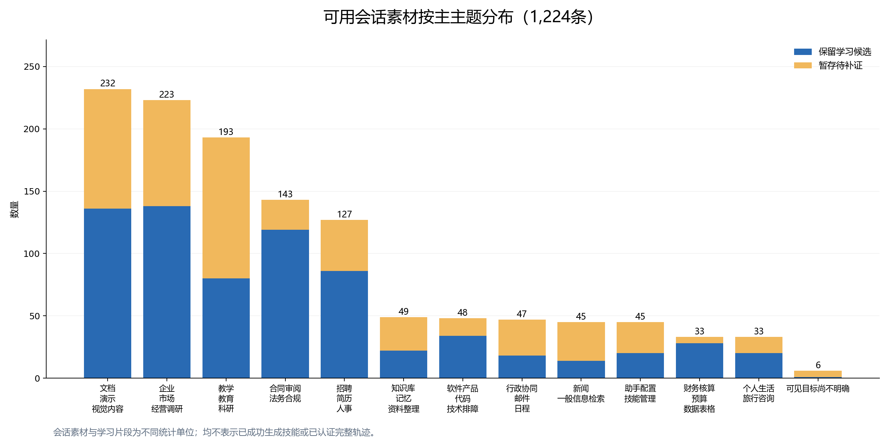
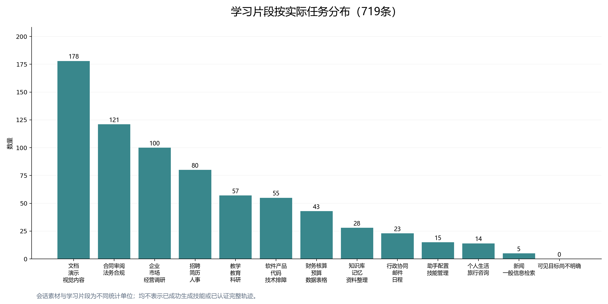

1,224条会话素材：716保留、508暂存。719条局部学习片段；尚未认证为完整轨迹。242条排除会话未纳入本版本，原归档保留。


| 会话编号与全文 | 会话主主题 | 状态 | 具体学习任务与主题 | 会话归类依据 |
|---|---|---|---|---|
| conv_dcf0172311e7 | 教学、教育与科研 | 暂存待补证 | 尚未确定局部学习点 | 教师赋能演示及技能库操作 |
| conv_e09b70c51b19 | 软件产品、代码与技术排障 | 保留学习候选 | 差旅规则文档核查（行政协同、邮件与日程） | 代码提交分析并含差旅规则查询 |
| conv_9f975ffa392f | 助手配置与技能管理 | 保留学习候选 | 测试浏览器自动化的元素交互及导航结果（软件产品、代码与技术排障） | 技能安装删除与浏览器试用 |
| conv_cd063fc38900 | 教学、教育与科研 | 暂存待补证 | 尚未确定局部学习点 | 清明教案及技能测试新闻检索 |
| conv_8bf9b42a552b | 企业、市场与经营调研 | 保留学习候选 | 云端 OpenClaw 产品的 B 端销售陈述（企业、市场与经营调研） | 面向企业客户的产品销售方案 |
| conv_6ee9d2692bf7 | 知识库、记忆与资料整理 | 保留学习候选 | 知识库昨日更新核对（知识库、记忆与资料整理） | 导入整理知识库文章 |
| conv_d6b0c7bc236d | 文档、演示与视觉内容 | 暂存待补证 | 尚未确定局部学习点 | 文件分析报告未明领域 |
| conv_6e2871c187fb | 教学、教育与科研 | 暂存待补证 | 尚未确定局部学习点 | 改进已有教案 |
| conv_aca434f0afe1 | 教学、教育与科研 | 暂存待补证 | 尚未确定局部学习点 | 脑机接口科学简介 |
| conv_972e0e8aee81 | 知识库、记忆与资料整理 | 暂存待补证 | 尚未确定局部学习点 | 笔记复制及助手设定 |
| conv_bcae4fd64969 | 文档、演示与视觉内容 | 保留学习候选 | 文章向党报文风修订（文档、演示与视觉内容） | 文章修订与宣传文案 |
| conv_b767f5d4b276 | 软件产品、代码与技术排障 | 暂存待补证 | 尚未确定局部学习点 | 命令操作及不明内容查询 |
| conv_9bc7947f7ce1 | 软件产品、代码与技术排障 | 暂存待补证 | 尚未确定局部学习点 | 开发HTML小游戏 |
| conv_567a2331adcf | 教学、教育与科研 | 保留学习候选 | Python低版本语法兼容排障（软件产品、代码与技术排障） | 教案课件及脚本兼容排障 |
| conv_67daacb9eaf3 | 教学、教育与科研 | 暂存待补证 | 尚未确定局部学习点 | 化学教案生成 |
| conv_c67149c8b898 | 招聘、简历与人事 | 暂存待补证 | 尚未确定局部学习点 | 招聘岗位描述及开发年终汇报 |
| conv_24bc635473a8 | 知识库、记忆与资料整理 | 保留学习候选 | 导入全部IMA笔记（知识库、记忆与资料整理） | 导入IMA笔记及续传 |
| conv_024067633c4b | 助手配置与技能管理 | 暂存待补证 | 尚未确定局部学习点 | 安装OpenMAIC技能 |
| conv_83820ac2bbbe | 知识库、记忆与资料整理 | 保留学习候选 | Wiki目录与索引一致性修复（知识库、记忆与资料整理） | 整理初始化知识库 |
| conv_6cedf31d582f | 知识库、记忆与资料整理 | 保留学习候选 | 知识库结构检查（知识库、记忆与资料整理） | 知识库整理及烧烤摆摊方案 |
| conv_bea45da55326 | 教学、教育与科研 | 保留学习候选 | 创建一次性下班及删除待办提醒（行政协同、邮件与日程） | 教案PPT及提醒配置 |
| conv_4d61ea2f1b27 | 知识库、记忆与资料整理 | 暂存待补证 | 尚未确定局部学习点 | 笔记导入与下班提醒 |
| conv_576b570b2ec8 | 助手配置与技能管理 | 保留学习候选 | 知识库技能优化（助手配置与技能管理） | 技能迭代安装及开发周报 |
| conv_a7ef85b309ff | 招聘、简历与人事 | 保留学习候选 | 导入 IMA 笔记并修订失败请求（知识库、记忆与资料整理） | 简历评估夹杂提醒测试 |
| conv_71629b81db24 | 教学、教育与科研 | 保留学习候选 | 生成并检查五线谱互动教学页面（教学、教育与科研） | 音乐教学交互页面及周报 |
| conv_19838badd924 | 企业、市场与经营调研 | 暂存待补证 | 尚未确定局部学习点 | 创业比赛政府项目申报规划 |
| conv_693d25f8ecb8 | 软件产品、代码与技术排障 | 暂存待补证 | 尚未确定局部学习点 | 需求拆解并创建开发工作项 |
| conv_e3b94df5df53 | 行政协同、邮件与日程 | 暂存待补证 | 尚未确定局部学习点 | 创建公司会议与日程提醒 |
| conv_4448d3641146 | 知识库、记忆与资料整理 | 保留学习候选 | Get笔记导入授权（知识库、记忆与资料整理） | 导入Get笔记 |
| conv_a55496da173c | 助手配置与技能管理 | 暂存待补证 | 尚未确定局部学习点 | 仅给出Gitee技能仓库链接 |
| conv_7893658c367e | 软件产品、代码与技术排障 | 保留学习候选 | 初始化并整理个人知识库的源文件、索引和文章（知识库、记忆与资料整理） | 创建Gitee工作项及功能需求 |
| conv_002ae6938a37 | 软件产品、代码与技术排障 | 暂存待补证 | 尚未确定局部学习点 | 创建并分配Gitee任务 |
| conv_ac2f97823b42 | 助手配置与技能管理 | 暂存待补证 | 尚未确定局部学习点 | 工作区命令操作 |
| conv_de6607e7ed2f | 企业、市场与经营调研 | 保留学习候选 | 开源技能仓库克隆排障（软件产品、代码与技术排障） | 企业背景调查及财务日程 |
| conv_59a22e8bccac | 个人生活与旅行咨询 | 保留学习候选 | 按实际目的定制摆摊方案（个人生活与旅行咨询） | 个人烧烤摆摊规划并沉淀经验 |
| conv_ffce143443d1 | 教学、教育与科研 | 暂存待补证 | 尚未确定局部学习点 | 面向小学生的教学短视频 |
| conv_4bc7c073280e | 软件产品、代码与技术排障 | 保留学习候选 | 沙箱附件读取排障（软件产品、代码与技术排障） | OpenClaw沙箱文件读取排障 |
| conv_073150ee30be | 软件产品、代码与技术排障 | 保留学习候选 | 生成企业技术周报（软件产品、代码与技术排障） | 研发工作项统计及周报生成 |
| conv_f70fa609d707 | 助手配置与技能管理 | 保留学习候选 | 企业微信CLI可执行路径适配（助手配置与技能管理） | 企业微信CLI安装及群读取 |
| conv_6f39da151b65 | 新闻与一般信息检索 | 暂存待补证 | 尚未确定局部学习点 | AI新闻汇总及搜索故障定位 |
| conv_245a7b03a18b | 招聘、简历与人事 | 保留学习候选 | 季度绩效改为360评价（招聘、简历与人事） | 绩效考核与组织岗位设计 |
| conv_4c7e5185ca4c | 合同审阅与法务合规 | 保留学习候选 | 制定采购绩效考评（招聘、简历与人事） | 合同风险审查兼采购绩效 |
| conv_fa44bab61e43 | 新闻与一般信息检索 | 暂存待补证 | 尚未确定局部学习点 | 暴雨新闻检索汇总 |
| conv_23bffc5f1e1b | 合同审阅与法务合规 | 保留学习候选 | 课程委托合同立场修正（合同审阅与法务合规） | 课程委托合同立场修正 |
| conv_3445e28d0e24 | 企业、市场与经营调研 | 保留学习候选 | 诊断整理企业知识库（知识库、记忆与资料整理） | 云服务份额调研兼知识库操作 |
| conv_c5a3fbe6b211 | 招聘、简历与人事 | 暂存待补证 | 尚未确定局部学习点 | 简历筛选评估 |
| conv_8d3c54ab20bb | 软件产品、代码与技术排障 | 保留学习候选 | 向GitHub交付课程文档（软件产品、代码与技术排障） | 代码分析并配置资讯定时推送 |
| conv_1d2a22064d86 | 企业、市场与经营调研 | 暂存待补证 | 尚未确定局部学习点 | 创业大赛与政府项目申报检索 |
| conv_cba361a0d239 | 文档、演示与视觉内容 | 暂存待补证 | 尚未确定局部学习点 | 科普图解插画生成 |
| conv_61034c4c6675 | 文档、演示与视觉内容 | 保留学习候选 | 批量页面生成及PDF水印（文档、演示与视觉内容） | 批量图片文档合并及水印调整 |
| conv_8d186f951c61 | 知识库、记忆与资料整理 | 暂存待补证 | 尚未确定局部学习点 | 初始化检索知识库 |
| conv_04b9900c5c1d | 企业、市场与经营调研 | 暂存待补证 | 尚未确定局部学习点 | 企业创业大赛政府申报检索 |
| conv_c952411dbdfe | 企业、市场与经营调研 | 保留学习候选 | 地区企业政府申报机会筛选（企业、市场与经营调研） | 企业创业大赛政府申报检索 |
| conv_636c1fb1b552 | 教学、教育与科研 | 暂存待补证 | 尚未确定局部学习点 | 语文课程学习要点文档 |
| conv_fc89e44545b4 | 教学、教育与科研 | 暂存待补证 | 尚未确定局部学习点 | 物理测量课程逐字稿 |
| conv_8a7834f95138 | 新闻与一般信息检索 | 暂存待补证 | 尚未确定局部学习点 | AI热点定时汇总兼日记 |
| conv_25c0d5cc4fd4 | 合同审阅与法务合规 | 暂存待补证 | 尚未确定局部学习点 | 文件法律风险分析兼会议提醒 |
| conv_3475f26df3d6 | 行政协同、邮件与日程 | 保留学习候选 | 创建运营会议提醒（行政协同、邮件与日程） | 创建运营会议提醒 |
| conv_8a33cb4b071c | 可见目标尚不明确 | 暂存待补证 | 尚未确定局部学习点 | 仅说这个人可以不缺判断对象 |
| conv_d7fef15d12fa | 招聘、简历与人事 | 暂存待补证 | 尚未确定局部学习点 | 企业AI公司组织岗位配置 |
| conv_70f8b039a873 | 合同审阅与法务合规 | 保留学习候选 | 估算孕期劳动合同解除费用（合同审阅与法务合规） | 孕期解除劳动合同成本咨询 |
| conv_f5d7f89883e2 | 文档、演示与视觉内容 | 暂存待补证 | 尚未确定局部学习点 | 通用文件分析未明业务领域 |
| conv_956c87eca622 | 合同审阅与法务合规 | 保留学习候选 | 股东名册填报（合同审阅与法务合规） | 股东名册变更填写 |
| conv_9bfd4928da60 | 新闻与一般信息检索 | 保留学习候选 | 盘中市场数据日期核验（新闻与一般信息检索） | 当日股票市场信息查询 |
| conv_ad8d5cab61e5 | 合同审阅与法务合规 | 保留学习候选 | 签署CNDA前检查（合同审阅与法务合规） | 签署风险评估含误角色自述 |
| conv_fe8e6682fa62 | 企业、市场与经营调研 | 暂存待补证 | 尚未确定局部学习点 | 专项资金申请路演演示 |
| conv_ed07dc361fc8 | 企业、市场与经营调研 | 暂存待补证 | 尚未确定局部学习点 | 项目申报背景未见任务指令 |
| conv_49134274a38b | 招聘、简历与人事 | 保留学习候选 | 简化后端招聘流程（招聘、简历与人事） | 后端招聘流程题库和评分 |
| conv_e17409b249a6 | 招聘、简历与人事 | 保留学习候选 | 提取两份 PDF 简历并对比（招聘、简历与人事） | 两份简历共同亮点总结 |
| conv_4e5891d04866 | 财务核算、预算与数据表格 | 保留学习候选 | 银行日记账编三表（财务核算、预算与数据表格） | 三表财务模型兼所得税咨询 |
| conv_859a9d4744f2 | 文档、演示与视觉内容 | 保留学习候选 | 商业方案风险审阅（企业、市场与经营调研） | 未明领域文件风险分析 |
| conv_37a7fae29001 | 合同审阅与法务合规 | 保留学习候选 | 从签署方角度审查 CNDA（合同审阅与法务合规） | 签署人风险评估 |
| conv_345eab51e00b | 企业、市场与经营调研 | 暂存待补证 | 尚未确定局部学习点 | 项目风险评估但项目未知 |
| conv_e3d8dd0683ed | 合同审阅与法务合规 | 保留学习候选 | CNDA签署风险评估（合同审阅与法务合规） | 签署人风险评估 |
| conv_09da2b5bffec | 合同审阅与法务合规 | 保留学习候选 | 审查保密协议（合同审阅与法务合规） | 签署人风险评估 |
| conv_142d76650dda | 合同审阅与法务合规 | 暂存待补证 | 尚未确定局部学习点 | 协议风险点分析 |
| conv_0b258a2d669d | 合同审阅与法务合规 | 保留学习候选 | 分析 CNDA 风险（合同审阅与法务合规） | 协议风险点分析 |
| conv_bba19cc3bca6 | 合同审阅与法务合规 | 暂存待补证 | 尚未确定局部学习点 | 协议风险点分析 |
| conv_be8d15073865 | 合同审阅与法务合规 | 保留学习候选 | 确认协议类型后审阅（合同审阅与法务合规） | 协议风险及规避建议 |
| conv_986647175445 | 合同审阅与法务合规 | 暂存待补证 | 尚未确定局部学习点 | 协议风险点分析 |
| conv_92c5e909d5ba | 合同审阅与法务合规 | 暂存待补证 | 尚未确定局部学习点 | 协议文档风险分析 |
| conv_77bea0b4dd7a | 教学、教育与科研 | 暂存待补证 | 尚未确定局部学习点 | 小学清明教案及知识库整理 |
| conv_ab073f3d4049 | 知识库、记忆与资料整理 | 保留学习候选 | 解读协议并审查签署条件（合同审阅与法务合规） | 知识库整理兼文件内容风险 |
| conv_ecb06a371522 | 知识库、记忆与资料整理 | 保留学习候选 | 知识库过期内容分层治理（知识库、记忆与资料整理） | 整理知识库 |
| conv_40eb4affb7fd | 助手配置与技能管理 | 暂存待补证 | 尚未确定局部学习点 | 安装技能包 |
| conv_450c97147cdd | 新闻与一般信息检索 | 暂存待补证 | 尚未确定局部学习点 | 定时查询金价看板 |
| conv_f4602fe5ac79 | 合同审阅与法务合规 | 保留学习候选 | 判断跨境协议风险（合同审阅与法务合规） | 协议风险判断 |
| conv_1369fc5a95fd | 文档、演示与视觉内容 | 暂存待补证 | 尚未确定局部学习点 | 文件解读业务域未知 |
| conv_de1d6b525369 | 合同审阅与法务合规 | 暂存待补证 | 尚未确定局部学习点 | 协议主要内容分析 |
| conv_50a11a0fdc5c | 文档、演示与视觉内容 | 保留学习候选 | 展板设计修订（文档、演示与视觉内容） | 展板视觉设计及生图修订 |
| conv_7ba0e0439045 | 文档、演示与视觉内容 | 保留学习候选 | 展会与招聘海报精确交付（文档、演示与视觉内容） | 展板海报设计兼招聘宣传 |
| conv_c7115885773a | 新闻与一般信息检索 | 保留学习候选 | 资讯定时推送（行政协同、邮件与日程） | AI资讯摘要及定时推送配置 |
| conv_7280f3693c03 | 招聘、简历与人事 | 保留学习候选 | 批量简历与岗位职责匹配（招聘、简历与人事） | 岗位职责简历匹配和招聘筛选 |
| conv_c452502dba53 | 招聘、简历与人事 | 保留学习候选 | 后端开发岗位筛选修订（招聘、简历与人事） | 简历筛选兼展板制作 |
| conv_d3cabbe74862 | 财务核算、预算与数据表格 | 保留学习候选 | 三表经营分析（财务核算、预算与数据表格） | 财务报表经营分析 |
| conv_7c90fd36e5bf | 企业、市场与经营调研 | 保留学习候选 | 判断投资项目价值（企业、市场与经营调研） | 投资价值判断和关注要点 |
| conv_2f75e4f55a18 | 文档、演示与视觉内容 | 暂存待补证 | 尚未确定局部学习点 | 攻防箭推广动画制作 |
| conv_59c6e7735b71 | 文档、演示与视觉内容 | 保留学习候选 | 封面排版校正（文档、演示与视觉内容） | 公众号封面图制作 |
| conv_7f22f382e293 | 企业、市场与经营调研 | 保留学习候选 | 筛选科技成果孵化机会（企业、市场与经营调研） | 科技成果投资孵化筛选 |
| conv_61d7cc938e6d | 企业、市场与经营调研 | 保留学习候选 | 科技项目投资筛选（企业、市场与经营调研） | 投资孵化项目价值分析 |
| conv_6d96fae27990 | 教学、教育与科研 | 保留学习候选 | 审核论文和源数据（教学、教育与科研） | 论文数据审核及报告迭代 |
| conv_a268096e979d | 知识库、记忆与资料整理 | 暂存待补证 | 尚未确定局部学习点 | 知识库整理兼模型查询 |
| conv_3bfd87c56765 | 助手配置与技能管理 | 暂存待补证 | 尚未确定局部学习点 | 模型身份核验及对话总结 |
| conv_68f1d97e36b5 | 企业、市场与经营调研 | 保留学习候选 | 分析估值并生成敏感性与对赌模型（企业、市场与经营调研） | 估值敏感性分析和对赌条款 |
| conv_a91dfc6d0713 | 知识库、记忆与资料整理 | 暂存待补证 | 尚未确定局部学习点 | 导入笔记兼提醒与文件解读 |
| conv_f8514c1e581a | 合同审阅与法务合规 | 暂存待补证 | 尚未确定局部学习点 | 合法税务筹划与主体变更 |
| conv_58c06c2fe01d | 招聘、简历与人事 | 保留学习候选 | 前端岗位筛选（招聘、简历与人事） | 前端岗位简历筛选 |
| conv_946d32d6e89b | 招聘、简历与人事 | 暂存待补证 | 尚未确定局部学习点 | 后端岗位批量简历筛选 |
| conv_45e57ea5db1e | 文档、演示与视觉内容 | 保留学习候选 | 原内容不变的BP视觉改版（文档、演示与视觉内容） | 计划书仅重设计配色 |
| conv_bebf10fc7e18 | 招聘、简历与人事 | 保留学习候选 | 批量后端候选人筛选（招聘、简历与人事） | 后端岗位批量简历筛选 |
| conv_0503838df11d | 招聘、简历与人事 | 暂存待补证 | 尚未确定局部学习点 | 简历评估兼知识库技能操作 |
| conv_bb67b3039ec2 | 招聘、简历与人事 | 保留学习候选 | 有源器械临床经理筛选（招聘、简历与人事） | 临床经理简历匹配与面试题 |
| conv_d6475abe2258 | 招聘、简历与人事 | 保留学习候选 | 评估后端简历 AI coding 实践（招聘、简历与人事） | 简历评估兼提醒与知识库 |
| conv_a0acca374419 | 知识库、记忆与资料整理 | 保留学习候选 | 知识库初始化目录适配（知识库、记忆与资料整理） | 整理知识库 |
| conv_f7c708bf6afb | 招聘、简历与人事 | 保留学习候选 | 前端岗位匹配分析（招聘、简历与人事） | 前端录用判断和职业发展 |
| conv_3ada2d9f53bf | 教学、教育与科研 | 暂存待补证 | 尚未确定局部学习点 | 语文教案兼午休金价提醒 |
| conv_4e1b9507c122 | 新闻与一般信息检索 | 暂存待补证 | 尚未确定局部学习点 | AI新闻汇总至飞书 |
| conv_9b4e2088c6bf | 企业、市场与经营调研 | 暂存待补证 | 尚未确定局部学习点 | 科技成果投资价值分析 |
| conv_80e86b5805f5 | 文档、演示与视觉内容 | 保留学习候选 | 发票去重汇总（财务核算、预算与数据表格） | 射箭推广脚本和图片制作 |
| conv_79ca65c436ba | 招聘、简历与人事 | 暂存待补证 | 尚未确定局部学习点 | 学习三份简历未明筛选标准 |
| conv_ee979d0d59fb | 财务核算、预算与数据表格 | 保留学习候选 | 比较新旧成果表（财务核算、预算与数据表格） | 新旧项目表格信息差异核对 |
| conv_45f703ea1ccc | 招聘、简历与人事 | 暂存待补证 | 尚未确定局部学习点 | 后端岗位简历筛选 |
| conv_f71f86e2f9f4 | 招聘、简历与人事 | 保留学习候选 | 后端AI工程师筛选（招聘、简历与人事） | 后端岗位简历筛选 |
| conv_c0c78dafec9c | 文档、演示与视觉内容 | 暂存待补证 | 尚未确定局部学习点 | 国际会议PPT封面生图 |
| conv_30474e7027ac | 文档、演示与视觉内容 | 暂存待补证 | 尚未确定局部学习点 | 国际会议PPT封面生图 |
| conv_2eaea927aa1f | 行政协同、邮件与日程 | 暂存待补证 | 尚未确定局部学习点 | 预约腾讯会议 |
| conv_0c4d5e5a33a8 | 行政协同、邮件与日程 | 保留学习候选 | 按会议安排创建提前提醒（行政协同、邮件与日程） | 会议预约及提前提醒 |
| conv_ad07600e5b01 | 文档、演示与视觉内容 | 暂存待补证 | 尚未确定局部学习点 | 图片OCR内容识别 |
| conv_5f409449437d | 文档、演示与视觉内容 | 暂存待补证 | 尚未确定局部学习点 | 识别图片内容 |
| conv_6df7a6815921 | 软件产品、代码与技术排障 | 保留学习候选 | 排查大容量 U 盘 FAT32 格式化（软件产品、代码与技术排障） | Windows磁盘格式化排障 |
| conv_0817b37dc981 | 知识库、记忆与资料整理 | 保留学习候选 | 知识库资料分类维护（知识库、记忆与资料整理） | 整理知识库 |
| conv_21063e379350 | 知识库、记忆与资料整理 | 暂存待补证 | 尚未确定局部学习点 | 笔记导入及工作讨论提醒 |
| conv_d5047f96985d | 软件产品、代码与技术排障 | 保留学习候选 | 发布技术周报到飞书（软件产品、代码与技术排障） | 研发技术周报发布飞书 |
| conv_7c09ae1a1aad | 知识库、记忆与资料整理 | 暂存待补证 | 尚未确定局部学习点 | 整理知识库 |
| conv_2817265d88c6 | 文档、演示与视觉内容 | 暂存待补证 | 尚未确定局部学习点 | 识别手签人名并查背景 |
| conv_fa8adda38d0c | 新闻与一般信息检索 | 保留学习候选 | 事故传闻权威核查（新闻与一般信息检索） | 事故新闻权威核实和简报 |
| conv_bd88857b0159 | 新闻与一般信息检索 | 保留学习候选 | 奖项日期与主办方查证（新闻与一般信息检索） | 获奖日期主办方精确查询 |
| conv_4377ee09b26e | 新闻与一般信息检索 | 暂存待补证 | 尚未确定局部学习点 | 社交媒体转发消息核实 |
| conv_3d1ab6fc0480 | 新闻与一般信息检索 | 保留学习候选 | 实时行情工具适配（新闻与一般信息检索） | 当日股票行情查询 |
| conv_c67fe6e24b4d | 新闻与一般信息检索 | 暂存待补证 | 尚未确定局部学习点 | 新闻真实性核查兼模型状态 |
| conv_de462a75d1e4 | 软件产品、代码与技术排障 | 暂存待补证 | 尚未确定局部学习点 | 研发模块需求规划兼飞书对接 |
| conv_253f45113419 | 文档、演示与视觉内容 | 暂存待补证 | 尚未确定局部学习点 | 创建飞书文档未给具体内容 |
| conv_6347576535a5 | 教学、教育与科研 | 保留学习候选 | 让用户能直接打开生成的HTML页面（文档、演示与视觉内容） | 物理作用力HTML演示 |
| conv_adc77063b575 | 文档、演示与视觉内容 | 暂存待补证 | 尚未确定局部学习点 | 绘制华师大校门 |
| conv_8714afcf3204 | 文档、演示与视觉内容 | 保留学习候选 | 交付生成图片（文档、演示与视觉内容） | 绘制华师大校门 |
| conv_f1e547631e03 | 文档、演示与视觉内容 | 暂存待补证 | 尚未确定局部学习点 | 卡通蝌蚪图片生成 |
| conv_7f2caa83860f | 招聘、简历与人事 | 保留学习候选 | 医美临床岗位面试设计（招聘、简历与人事） | 候选人匹配与面试清单 |
| conv_2c64cda62a40 | 教学、教育与科研 | 暂存待补证 | 尚未确定局部学习点 | 物理作用力HTML演示 |
| conv_d416261a283e | 招聘、简历与人事 | 保留学习候选 | 组织问卷结构优化（招聘、简历与人事） | 组织盘点员工问卷结构优化 |
| conv_e35903a5c526 | 教学、教育与科研 | 暂存待补证 | 尚未确定局部学习点 | 摩擦力教学演示动画 |
| conv_25f59d660ad2 | 教学、教育与科研 | 暂存待补证 | 尚未确定局部学习点 | 化学反应演示动画 |
| conv_8805f85ed434 | 招聘、简历与人事 | 保留学习候选 | 设计医美器械候选人面试（招聘、简历与人事） | 医美器械岗位面试问题 |
| conv_e31e2cb7678b | 招聘、简历与人事 | 保留学习候选 | AI后端候选筛选（招聘、简历与人事） | 后端工程师简历筛选 |
| conv_15e56f4ac60b | 招聘、简历与人事 | 暂存待补证 | 尚未确定局部学习点 | 前端岗位简历筛选 |
| conv_c0ad21ccaf5d | 教学、教育与科研 | 保留学习候选 | AI数据审查报告签核（教学、教育与科研） | 科研数据审查和报告 |
| conv_8d9fc90a248a | 招聘、简历与人事 | 保留学习候选 | 益生菌科研助理简历筛选（招聘、简历与人事） | 益生菌研发助理简历筛选 |
| conv_35fde4c7bfb8 | 企业、市场与经营调研 | 暂存待补证 | 尚未确定局部学习点 | 概念验证报告撰写 |
| conv_ef03550765dd | 企业、市场与经营调研 | 暂存待补证 | 尚未确定局部学习点 | 概念验证报告修改导出 |
| conv_593775136ce2 | 教学、教育与科研 | 暂存待补证 | 尚未确定局部学习点 | 论文数据质量审查 |
| conv_2800f7d02600 | 企业、市场与经营调研 | 暂存待补证 | 尚未确定局部学习点 | 投资视角项目评估 |
| conv_fba4b9437378 | 文档、演示与视觉内容 | 保留学习候选 | 把总结改写得幽默（文档、演示与视觉内容） | 幽默风格文案改写 |
| conv_1297c74c3e35 | 教学、教育与科研 | 保留学习候选 | 产品文档数据审查（财务核算、预算与数据表格） | 数据智审兼简历阅读 |
| conv_3c7308af3676 | 教学、教育与科研 | 暂存待补证 | 尚未确定局部学习点 | 高中遗传规律教学网页 |
| conv_666784033938 | 教学、教育与科研 | 暂存待补证 | 尚未确定局部学习点 | 生物教学HTML兼平台安全测试 |
| conv_8a594fd46217 | 知识库、记忆与资料整理 | 暂存待补证 | 尚未确定局部学习点 | 知识库整理及记忆查看 |
| conv_e1394bb92ca8 | 教学、教育与科研 | 保留学习候选 | 分析教师数字素养问卷（教学、教育与科研） | 教师数字素养问卷调研分析 |
| conv_254f8638a685 | 教学、教育与科研 | 保留学习候选 | PDF水印迭代适配（文档、演示与视觉内容） | 论文数据审核及PDF水印 |
| conv_ab3863a19fb2 | 文档、演示与视觉内容 | 保留学习候选 | PDF水印自适应修订（文档、演示与视觉内容） | PDF水印尺寸迭代并总结技能 |
| conv_b34d3845b817 | 企业、市场与经营调研 | 暂存待补证 | 尚未确定局部学习点 | 项目概念验证报告撰写 |
| conv_885854b82f34 | 文档、演示与视觉内容 | 暂存待补证 | 尚未确定局部学习点 | 文件加水印 |
| conv_470d66397a7d | 文档、演示与视觉内容 | 暂存待补证 | 尚未确定局部学习点 | 文件水印内容样式设置 |
| conv_765c20cde1f6 | 文档、演示与视觉内容 | 保留学习候选 | 修复 PDF 中文水印渲染（文档、演示与视觉内容） | PDF中文水印排障与技能更新 |
| conv_59bebaeb3bab | 助手配置与技能管理 | 暂存待补证 | 尚未确定局部学习点 | 配置密钥查询技能导出及文件审查 |
| conv_5785a8ce4b6a | 文档、演示与视觉内容 | 保留学习候选 | 按用户正文添加PDF水印（文档、演示与视觉内容） | PDF加水印 |
| conv_8339875f170d | 文档、演示与视觉内容 | 保留学习候选 | 为 PDF 打水印（文档、演示与视觉内容） | 文件水印及技能使用询问 |
| conv_2b9e9c0c5202 | 文档、演示与视觉内容 | 保留学习候选 | 水印任务技能选用反馈（文档、演示与视觉内容） | 文件水印及默认技能偏好 |
| conv_88a0774cb062 | 文档、演示与视觉内容 | 保留学习候选 | 重复不使用水印技能的修订（文档、演示与视觉内容） | 文件水印及默认技能偏好 |
| conv_f69cc62066f1 | 文档、演示与视觉内容 | 保留学习候选 | 调整 PDF 水印字体与覆盖（文档、演示与视觉内容） | 水印字体迭代与经验保存 |
| conv_f34d1eb4b810 | 文档、演示与视觉内容 | 保留学习候选 | 水印技能注册（助手配置与技能管理） | 水印制作兼技能安装 |
| conv_60a01d8fdce7 | 教学、教育与科研 | 暂存待补证 | 尚未确定局部学习点 | 太阳系科普HTML动画 |
| conv_d1ef29d65e7a | 教学、教育与科研 | 保留学习候选 | 整理教育项目官方汇报（教学、教育与科研） | 教育项目成果官方汇报 |
| conv_2e5ebc80c255 | 招聘、简历与人事 | 保留学习候选 | 企业Agent后端候选人匹配（招聘、简历与人事） | 岗位简历筛选含安全包装 |
| conv_e7ba7bb57e7c | 教学、教育与科研 | 保留学习候选 | 论文源数据与统计设计核查（教学、教育与科研） | 科研论文原始数据交叉核查 |
| conv_2d49ad7e7177 | 招聘、简历与人事 | 保留学习候选 | 优化临床经理 JD 与招聘检索（招聘、简历与人事） | 临床经理招聘关键词和岗位技能 |
| conv_f01a04f4059d | 招聘、简历与人事 | 保留学习候选 | 专科采购JD修订（招聘、简历与人事） | 采购岗位描述更新及简历匹配 |
| conv_b952ca821b23 | 合同审阅与法务合规 | 暂存待补证 | 尚未确定局部学习点 | 开源许可分析兼论文数据审核 |
| conv_a9ed333e7694 | 招聘、简历与人事 | 暂存待补证 | 尚未确定局部学习点 | 两份简历阅读 |
| conv_e97e4ded4556 | 招聘、简历与人事 | 暂存待补证 | 尚未确定局部学习点 | 临床经理岗位简历筛选 |
| conv_0471e84eb55a | 招聘、简历与人事 | 保留学习候选 | 工程菌科研助理筛选（招聘、简历与人事） | 科研助理招聘及候选比较 |
| conv_8a146adfec32 | 教学、教育与科研 | 暂存待补证 | 尚未确定局部学习点 | 济南的冬天教案制作 |
| conv_8113f92a63c0 | 教学、教育与科研 | 暂存待补证 | 尚未确定局部学习点 | 太阳系科普演示动画 |
| conv_bb5fd9d54d25 | 教学、教育与科研 | 暂存待补证 | 尚未确定局部学习点 | 太阳系科普演示动画 |
| conv_80ce11dd162c | 教学、教育与科研 | 保留学习候选 | 机构培训材料定向改稿（教学、教育与科研） | 对外培训定位与介绍材料 |
| conv_c4d47b40b366 | 企业、市场与经营调研 | 保留学习候选 | 生成大篇幅销售话术文档（文档、演示与视觉内容） | 用户画像销售话术兼招聘流程 |
| conv_c41ebd39b457 | 企业、市场与经营调研 | 暂存待补证 | 尚未确定局部学习点 | 企业尽调与概念验证分析 |
| conv_54133f1be693 | 文档、演示与视觉内容 | 暂存待补证 | 尚未确定局部学习点 | 报告转为演讲PPT |
| conv_9a01ad5a8c91 | 个人生活与旅行咨询 | 暂存待补证 | 尚未确定局部学习点 | 中英文日记模板及存放 |
| conv_e6fdd2e394f4 | 财务核算、预算与数据表格 | 保留学习候选 | 按地级市合并学校表（财务核算、预算与数据表格） | 学校表单去漏核对行政区归属 |
| conv_d702dce9aea0 | 文档、演示与视觉内容 | 保留学习候选 | 产品宣传脚本迭代（文档、演示与视觉内容） | 产品宣传视频脚本迭代 |
| conv_0b513e1b672a | 教学、教育与科研 | 暂存待补证 | 尚未确定局部学习点 | 技能生成研究及研究助手配置 |
| conv_a16010f04b10 | 教学、教育与科研 | 保留学习候选 | 科研系统可移植打包（软件产品、代码与技术排障） | 研究基线实验与论文撰写 |
| conv_13fe75fa739b | 文档、演示与视觉内容 | 暂存待补证 | 尚未确定局部学习点 | 华东师范大学校门绘图 |
| conv_d973893a0b74 | 企业、市场与经营调研 | 暂存待补证 | 尚未确定局部学习点 | 语音产品竞品及集成需求设计 |
| conv_0465a450028a | 企业、市场与经营调研 | 保留学习候选 | 内容运营与选题修订（企业、市场与经营调研） | 创业战略及内容运营规划 |
| conv_6f49be523ffa | 教学、教育与科研 | 保留学习候选 | 论文终稿红线审查（教学、教育与科研） | 论文红线审查及审查技能配置 |
| conv_76ede267a04a | 教学、教育与科研 | 暂存待补证 | 尚未确定局部学习点 | 教师AI能力评价方法研究 |
| conv_ca2369adba0b | 个人生活与旅行咨询 | 保留学习候选 | 学生典型事例润色（教学、教育与科研） | 学生自评典型事例润色 |
| conv_e17f873c3068 | 企业、市场与经营调研 | 保留学习候选 | 按企业阶段分析投资项目（企业、市场与经营调研） | 早期与成熟公司投资判断 |
| conv_5a094a146e3a | 企业、市场与经营调研 | 保留学习候选 | 空工作区初始化知识库（知识库、记忆与资料整理） | AI量化交易研究兼资料操作 |
| conv_5ffcfbd5fb69 | 企业、市场与经营调研 | 暂存待补证 | 尚未确定局部学习点 | AI量化交易研究 |
| conv_643d484ad21a | 企业、市场与经营调研 | 暂存待补证 | 尚未确定局部学习点 | AI量化交易研究兼知识库 |
| conv_f3eb9b1e831c | 企业、市场与经营调研 | 暂存待补证 | 尚未确定局部学习点 | 量化交易研究及记忆查询 |
| conv_37b1a047ccc5 | 教学、教育与科研 | 暂存待补证 | 尚未确定局部学习点 | 电池专利分析具体目的未知 |
| conv_c1ce48280769 | 教学、教育与科研 | 暂存待补证 | 尚未确定局部学习点 | 太阳系科普HTML动画 |
| conv_a78e498eea8d | 教学、教育与科研 | 暂存待补证 | 尚未确定局部学习点 | 太阳系科普HTML动画 |
| conv_d8448984d033 | 文档、演示与视觉内容 | 暂存待补证 | 尚未确定局部学习点 | 审查报告生成但对象不明 |
| conv_f066a0b5ae1d | 文档、演示与视觉内容 | 保留学习候选 | 产品宣传数据审查（财务核算、预算与数据表格） | 审查报告生成但对象不明 |
| conv_5f36dde87ab8 | 教学、教育与科研 | 暂存待补证 | 尚未确定局部学习点 | 论文数据质量审查 |
| conv_00b903a3ebe9 | 教学、教育与科研 | 暂存待补证 | 尚未确定局部学习点 | 论文数据质量审查 |
| conv_6ad7c7eaf079 | 文档、演示与视觉内容 | 暂存待补证 | 尚未确定局部学习点 | 报告审查及对比具体领域未知 |
| conv_b8618dade74b | 教学、教育与科研 | 保留学习候选 | 论文数值一致性复核（教学、教育与科研） | 论文数据质量审查 |
| conv_77ac8a695c37 | 教学、教育与科研 | 暂存待补证 | 尚未确定局部学习点 | 定时追踪高校顶刊论文 |
| conv_a01a23912186 | 新闻与一般信息检索 | 暂存待补证 | 尚未确定局部学习点 | AI资讯推送摘要 |
| conv_d72d8c5fdd4f | 知识库、记忆与资料整理 | 暂存待补证 | 尚未确定局部学习点 | 基于聊天记录回顾本周活动 |
| conv_63914080dfaf | 知识库、记忆与资料整理 | 暂存待补证 | 尚未确定局部学习点 | 知识库整理及PDF重新生成 |
| conv_246b5e915810 | 教学、教育与科研 | 保留学习候选 | 课程作业题目版交付（教学、教育与科研） | 课程作业需求设计兼基金审查 |
| conv_9e7f8c1f3083 | 知识库、记忆与资料整理 | 保留学习候选 | 整理知识库（知识库、记忆与资料整理） | 整理知识库 |
| conv_62b59deb8bd3 | 教学、教育与科研 | 暂存待补证 | 尚未确定局部学习点 | 论文审核及技能重试 |
| conv_c19f3434fa4f | 教学、教育与科研 | 暂存待补证 | 尚未确定局部学习点 | 论文审核 |
| conv_8748935e7377 | 文档、演示与视觉内容 | 暂存待补证 | 尚未确定局部学习点 | 产品介绍文档审阅 |
| conv_bd7db8dabd3c | 知识库、记忆与资料整理 | 暂存待补证 | 尚未确定局部学习点 | 整理知识库 |
| conv_ec8d4abd9de7 | 知识库、记忆与资料整理 | 暂存待补证 | 尚未确定局部学习点 | 整理知识库 |
| conv_d9c8b76a2dae | 知识库、记忆与资料整理 | 保留学习候选 | 整理知识库（知识库、记忆与资料整理） | 整理知识库 |
| conv_639563c765e9 | 文档、演示与视觉内容 | 暂存待补证 | 尚未确定局部学习点 | 报告审阅领域未知 |
| conv_cf90ee4b2907 | 知识库、记忆与资料整理 | 暂存待补证 | 尚未确定局部学习点 | 整理知识库 |
| conv_9af1f51c4560 | 文档、演示与视觉内容 | 保留学习候选 | 宣传稿量化效果核查（财务核算、预算与数据表格） | 审阅并导出文档领域未知 |
| conv_27ed3bb8f04f | 知识库、记忆与资料整理 | 暂存待补证 | 尚未确定局部学习点 | 整理知识库 |
| conv_76e4be35112f | 教学、教育与科研 | 保留学习候选 | 扩充企业知识库（知识库、记忆与资料整理） | 论文数据质量审查及知识库 |
| conv_3e2b7b34534f | 教学、教育与科研 | 保留学习候选 | 论文表文数值一致性审查（教学、教育与科研） | 论文数据质量审查 |
| conv_cedd7472177e | 个人生活与旅行咨询 | 暂存待补证 | 尚未确定局部学习点 | 餐厅食物地址评论汇总 |
| conv_6cdcaf5433ea | 新闻与一般信息检索 | 暂存待补证 | 尚未确定局部学习点 | 网页信息抓取具体主题未明 |
| conv_d6918e9034d3 | 个人生活与旅行咨询 | 保留学习候选 | 旅行规划与图册交付修订（个人生活与旅行咨询） | 旅行行程图册及经验沉淀 |
| conv_ef55dcd8789d | 助手配置与技能管理 | 暂存待补证 | 尚未确定局部学习点 | 下载科研技能包 |
| conv_3091cd80dbb4 | 教学、教育与科研 | 保留学习候选 | 准备科研技能执行环境（软件产品、代码与技术排障） | 脑机文献检索和科研技能测试 |
| conv_6e05298eec39 | 教学、教育与科研 | 保留学习候选 | 论文审查报告核验与交付（教学、教育与科研） | 论文数据审查并导出报告 |
| conv_6fc7603b4f73 | 教学、教育与科研 | 保留学习候选 | 论文报告数值证据核查（教学、教育与科研） | 包装内原问题为论文数据审查 |
| conv_6b24fb79bb00 | 知识库、记忆与资料整理 | 保留学习候选 | 修复知识库引用（知识库、记忆与资料整理） | 知识库整理兼不明格式咨询 |
| conv_bd88f614a510 | 知识库、记忆与资料整理 | 保留学习候选 | 知识库重复文件核对（知识库、记忆与资料整理） | 整理知识库 |
| conv_67a9ccb4c303 | 企业、市场与经营调研 | 暂存待补证 | 尚未确定局部学习点 | AI量化交易演示材料 |
| conv_491ff62e803b | 教学、教育与科研 | 保留学习候选 | 审核导师招生指标制度（教学、教育与科研） | 教师培养能力与职称指标评价 |
| conv_13e38f017a30 | 招聘、简历与人事 | 保留学习候选 | 企业AI岗位候选人复筛（招聘、简历与人事） | 后端工程师简历筛选 |
| conv_41714c5a51d3 | 教学、教育与科研 | 暂存待补证 | 尚未确定局部学习点 | 教授论文检索和论文审核 |
| conv_e9b349be9fc3 | 企业、市场与经营调研 | 保留学习候选 | 投标文件扩展对齐评标项（企业、市场与经营调研） | 投标文件扩写及公司抬头更新 |
| conv_f075f2e6dfea | 企业、市场与经营调研 | 保留学习候选 | 把立项分析导出 Word（文档、演示与视觉内容） | 产品竞品分析兼体检与热点 |
| conv_4a378f051f47 | 招聘、简历与人事 | 暂存待补证 | 尚未确定局部学习点 | 前端工程师简历筛选 |
| conv_371a64fe50a1 | 教学、教育与科研 | 保留学习候选 | 论文源数据交叉检查（教学、教育与科研） | 论文源数据与质量审查 |
| conv_5e32c5929830 | 教学、教育与科研 | 暂存待补证 | 尚未确定局部学习点 | 论文审核 |
| conv_0355f1cdd002 | 行政协同、邮件与日程 | 暂存待补证 | 尚未确定局部学习点 | 吃饭下班午休与新闻提醒 |
| conv_bd39d19c227c | 财务核算、预算与数据表格 | 暂存待补证 | 尚未确定局部学习点 | 表格数据及文档内容分析 |
| conv_ac76ebbc45cb | 新闻与一般信息检索 | 暂存待补证 | 尚未确定局部学习点 | 今日金价查询并生成文档 |
| conv_a888b4c97f1c | 知识库、记忆与资料整理 | 保留学习候选 | 知识库源文件收录（知识库、记忆与资料整理） | 知识库与记忆整理收录 |
| conv_4dd6bb0ca0a9 | 文档、演示与视觉内容 | 暂存待补证 | 尚未确定局部学习点 | PPT压缩为单页 |
| conv_d3b35bbaf6ed | 个人生活与旅行咨询 | 保留学习候选 | 亲子自驾行程规划（个人生活与旅行咨询） | 亲子自驾游完整行程图册 |
| conv_d52c86d7ea48 | 教学、教育与科研 | 暂存待补证 | 尚未确定局部学习点 | 语文教案生成 |
| conv_21de4e1cd007 | 教学、教育与科研 | 暂存待补证 | 尚未确定局部学习点 | 口语训练英语教案 |
| conv_1484e8af3800 | 个人生活与旅行咨询 | 保留学习候选 | 美食行程按地域与约定时间排程（个人生活与旅行咨询） | 端午亳州旅行餐食规划 |
| conv_27a5d2df0f04 | 个人生活与旅行咨询 | 保留学习候选 | 旅行行程完整交付（个人生活与旅行咨询） | 亳州旅行行程与图片制作 |
| conv_f0d878d4053a | 文档、演示与视觉内容 | 暂存待补证 | 尚未确定局部学习点 | 项目介绍压缩为单页PPT |
| conv_383a91943829 | 文档、演示与视觉内容 | 暂存待补证 | 尚未确定局部学习点 | 项目介绍压缩为单页PPT |
| conv_7e7d3c01d5af | 文档、演示与视觉内容 | 暂存待补证 | 尚未确定局部学习点 | 项目介绍压缩为单页PPT |
| conv_b9d192f88ea5 | 文档、演示与视觉内容 | 暂存待补证 | 尚未确定局部学习点 | 项目介绍压缩为单页PPT |
| conv_09e225ee61ad | 文档、演示与视觉内容 | 保留学习候选 | 多附件演示材料输入核对（文档、演示与视觉内容） | 项目介绍压缩为单页PPT |
| conv_6c5c4efafced | 教学、教育与科研 | 暂存待补证 | 尚未确定局部学习点 | 量子力学论文写作 |
| conv_bd5bd7f58c93 | 教学、教育与科研 | 暂存待补证 | 尚未确定局部学习点 | 材料计算物理论文写作 |
| conv_ab37e83e24c8 | 个人生活与旅行咨询 | 暂存待补证 | 尚未确定局部学习点 | 定时生成苏州旅行计划 |
| conv_05569cdad92c | 教学、教育与科研 | 暂存待补证 | 尚未确定局部学习点 | 材料化学论文写作 |
| conv_7538f7469cbe | 招聘、简历与人事 | 保留学习候选 | 独立医美采购经理筛选（招聘、简历与人事） | 医美采购经理简历筛选 |
| conv_3dd6019a60a3 | 文档、演示与视觉内容 | 暂存待补证 | 尚未确定局部学习点 | 基于报告生成图片 |
| conv_56aa032f17a8 | 软件产品、代码与技术排障 | 暂存待补证 | 尚未确定局部学习点 | 输入法动态皮肤产品开发 |
| conv_abba8995a3a6 | 软件产品、代码与技术排障 | 保留学习候选 | 输入法动态皮肤能力边界（软件产品、代码与技术排障） | 按需求进行代码开发 |
| conv_2e03834fce5c | 助手配置与技能管理 | 暂存待补证 | 尚未确定局部学习点 | 检查文件是否存在 |
| conv_add7e6b70a20 | 可见目标尚不明确 | 暂存待补证 | 尚未确定局部学习点 | 仅附件续处理无可见目标 |
| conv_ea9b88b23b98 | 招聘、简历与人事 | 暂存待补证 | 尚未确定局部学习点 | 前端工程师招聘流程 |
| conv_047555b8a77f | 教学、教育与科研 | 保留学习候选 | 高校指标分配方案评审（教学、教育与科研） | 硕士生导师招生指标方案评价 |
| conv_8b3d572e9c17 | 文档、演示与视觉内容 | 暂存待补证 | 尚未确定局部学习点 | 非遗元素盲盒产品生图 |
| conv_007d40b3886f | 教学、教育与科研 | 保留学习候选 | 客户确认基金形式审查范围（教学、教育与科研） | 高校基金申报形式审查清单 |
| conv_221f18eb70c5 | 教学、教育与科研 | 保留学习候选 | 修改研究生开题报告（教学、教育与科研） | 研究生开题报告评审 |
| conv_eca9c2676037 | 教学、教育与科研 | 暂存待补证 | 尚未确定局部学习点 | 太阳系教学HTML |
| conv_e2ecbc6378d2 | 文档、演示与视觉内容 | 暂存待补证 | 尚未确定局部学习点 | 华师大校门图片生成 |
| conv_d44142937e38 | 软件产品、代码与技术排障 | 暂存待补证 | 尚未确定局部学习点 | 网页我的世界游戏开发 |
| conv_fb33437938a8 | 招聘、简历与人事 | 保留学习候选 | 前端简历筛选（招聘、简历与人事） | 前端工程师招聘简历筛选 |
| conv_06d3b452f1d2 | 招聘、简历与人事 | 保留学习候选 | AI后端招聘技术栈匹配（招聘、简历与人事） | 后端工程师招聘简历筛选 |
| conv_dd2a679e1b52 | 教学、教育与科研 | 暂存待补证 | 尚未确定局部学习点 | 论文介绍与问题评审 |
| conv_4e162c7672f8 | 企业、市场与经营调研 | 暂存待补证 | 尚未确定局部学习点 | 招标文件响应与标书制作 |
| conv_1c0d9eac8df9 | 文档、演示与视觉内容 | 暂存待补证 | 尚未确定局部学习点 | 凤凰文创盲盒设计生图 |
| conv_12b4ea8ff451 | 文档、演示与视觉内容 | 暂存待补证 | 尚未确定局部学习点 | 盲盒设计图及3D建模文件 |
| conv_afaa4576fb6d | 文档、演示与视觉内容 | 暂存待补证 | 尚未确定局部学习点 | 产品图片改风格及技能管理 |
| conv_1bf8f5ab6844 | 企业、市场与经营调研 | 保留学习候选 | 产品宣传视频参考筛选（企业、市场与经营调研） | AI软件产品宣传视频案例检索 |
| conv_299aa1b64659 | 文档、演示与视觉内容 | 暂存待补证 | 尚未确定局部学习点 | 图片风格配色标题修改 |
| conv_1695d8fd2aca | 文档、演示与视觉内容 | 暂存待补证 | 尚未确定局部学习点 | 图片风格配色标题修改 |
| conv_0fd9153df042 | 教学、教育与科研 | 暂存待补证 | 尚未确定局部学习点 | 论文组会PPT制作 |
| conv_83ece9c50c5b | 教学、教育与科研 | 保留学习候选 | 起草期刊勘误信（教学、教育与科研） | 期刊勘误信写作 |
| conv_f3899c95bced | 教学、教育与科研 | 保留学习候选 | 中英文审稿回复PDF生成（文档、演示与视觉内容） | 审稿回复专利草案与学术图 |
| conv_4f2166e19a21 | 教学、教育与科研 | 保留学习候选 | 评估论文稿件（教学、教育与科研） | 论文审稿评估及双语PDF |
| conv_b6fdc6fd06f6 | 知识库、记忆与资料整理 | 暂存待补证 | 尚未确定局部学习点 | 知识库整理兼下班提醒 |
| conv_8768b45e6be3 | 助手配置与技能管理 | 暂存待补证 | 尚未确定局部学习点 | 企业技能管理策略分析 |
| conv_7be8a0b341b5 | 新闻与一般信息检索 | 保留学习候选 | 资讯定时任务资源与交付修订（行政协同、邮件与日程） | AI资讯自动推送修改 |
| conv_f3f23594ca10 | 企业、市场与经营调研 | 保留学习候选 | 项目介绍信息图内容修订（文档、演示与视觉内容） | 公司项目研究及介绍图 |
| conv_28cc7559789d | 软件产品、代码与技术排障 | 暂存待补证 | 尚未确定局部学习点 | 根据开发变更创建工作项 |
| conv_143452559f75 | 软件产品、代码与技术排障 | 保留学习候选 | 研发改动转Gitee工作项（软件产品、代码与技术排障） | 研发缺陷需求分类建单 |
| conv_0e044ee4939b | 软件产品、代码与技术排障 | 保留学习候选 | 清理 Windows AppData 空间（软件产品、代码与技术排障） | Windows磁盘空间清理排障 |
| conv_4bfa8b7c264c | 个人生活与旅行咨询 | 保留学习候选 | 固定到达时间航班规划（个人生活与旅行咨询） | 赴玉树航班转机方案 |
| conv_08457c6c88dc | 文档、演示与视觉内容 | 暂存待补证 | 尚未确定局部学习点 | 文创凤凰盲盒设计生图 |
| conv_05cd858151a0 | 教学、教育与科研 | 保留学习候选 | 生成图片型 PPT（文档、演示与视觉内容） | 人工智能发展史教学PPT |
| conv_b1207ff6818a | 企业、市场与经营调研 | 暂存待补证 | 尚未确定局部学习点 | 世界杯盲盒创业计划及设计 |
| conv_aed339d701a8 | 教学、教育与科研 | 暂存待补证 | 尚未确定局部学习点 | 儿童汉字学习网页 |
| conv_7bd66d286bf2 | 文档、演示与视觉内容 | 暂存待补证 | 尚未确定局部学习点 | 球员盲盒系列及产品介绍 |
| conv_d0f34d1af8da | 文档、演示与视觉内容 | 保留学习候选 | 多页图片画册尺寸修订（文档、演示与视觉内容） | 产品图片画册及PDF合并 |
| conv_600eff249286 | 企业、市场与经营调研 | 保留学习候选 | 世界杯周边产品选型（企业、市场与经营调研） | 世界杯产品创业及视觉品牌 |
| conv_158e9b7436ea | 教学、教育与科研 | 暂存待补证 | 尚未确定局部学习点 | 教育产品需求设计 |
| conv_2c2d2c4d0df1 | 行政协同、邮件与日程 | 保留学习候选 | 邮箱收件人确认（行政协同、邮件与日程） | 邮箱授权配置与发送测试 |
| conv_94a2c0df9209 | 招聘、简历与人事 | 暂存待补证 | 尚未确定局部学习点 | 招聘岗位描述生成 |
| conv_bc4bb2ab92da | 行政协同、邮件与日程 | 暂存待补证 | 尚未确定局部学习点 | 测试邮件发送 |
| conv_cd1a2871756a | 招聘、简历与人事 | 保留学习候选 | 依赖未配置时技能发现修订（助手配置与技能管理） | AI全栈岗位JD及招聘邮件 |
| conv_87720849b6d2 | 助手配置与技能管理 | 暂存待补证 | 尚未确定局部学习点 | 公文格式技能安装删除 |
| conv_298ecdab62b0 | 企业、市场与经营调研 | 暂存待补证 | 尚未确定局部学习点 | 标书编制报价调整兼问卷工具 |
| conv_3267a1dd85aa | 企业、市场与经营调研 | 保留学习候选 | 评估科研成果转化项目（企业、市场与经营调研） | 成果转化项目分析与提问 |
| conv_98d45aba0065 | 软件产品、代码与技术排障 | 保留学习候选 | 项目需求与交付范围联动（软件产品、代码与技术排障） | 软件平台需求报价及文档设计 |
| conv_de780b6ee019 | 企业、市场与经营调研 | 暂存待补证 | 尚未确定局部学习点 | 项目路演评价及成果转化建议 |
| conv_3a5cf1988000 | 行政协同、邮件与日程 | 暂存待补证 | 尚未确定局部学习点 | 发送测试邮件 |
| conv_f4619ddcd27d | 教学、教育与科研 | 暂存待补证 | 尚未确定局部学习点 | 教育软件白名单咨询 |
| conv_749baacff5ca | 合同审阅与法务合规 | 保留学习候选 | 乙方技术协议交付标准补充（合同审阅与法务合规） | 乙方技术交付标准补充 |
| conv_2c3193eb1cd6 | 企业、市场与经营调研 | 保留学习候选 | 病理AI联创规划（企业、市场与经营调研） | 病理AI创业规划兼新闻理解 |
| conv_3a4f18d72252 | 文档、演示与视觉内容 | 保留学习候选 | 从 docx 制作演讲 PPT（文档、演示与视觉内容） | 文档转PPT兼技能安装 |
| conv_a3988f16cc4d | 文档、演示与视觉内容 | 暂存待补证 | 尚未确定局部学习点 | 新闻摘要生成海报 |
| conv_3f2f18da4d3f | 合同审阅与法务合规 | 保留学习候选 | 数据依赖技术协议风险修订（合同审阅与法务合规） | 乙方技术协议交付风险修订 |
| conv_ffe83d76198a | 文档、演示与视觉内容 | 暂存待补证 | 尚未确定局部学习点 | 摘要生图兼API可用性排查 |
| conv_7485225ea7e3 | 企业、市场与经营调研 | 暂存待补证 | 尚未确定局部学习点 | 技术先进性及产业化评估 |
| conv_26d4ec4d7c25 | 企业、市场与经营调研 | 保留学习候选 | 孵化合作兑现能力尽调（企业、市场与经营调研） | 孵化投资风险调研兼文章选题 |
| conv_61a472bf9ac9 | 企业、市场与经营调研 | 保留学习候选 | 概念验证报告评分同步检查（文档、演示与视觉内容） | 概念验证及技术转化评估报告 |
| conv_770819efaa18 | 教学、教育与科研 | 保留学习候选 | 论文复现材料可得性盘点（教学、教育与科研） | 论文质量及科研诚信审查 |
| conv_27abfa260f9c | 招聘、简历与人事 | 保留学习候选 | 重写学校人事申请（招聘、简历与人事） | 向学校人事处提出人员申请 |
| conv_50da7dabddba | 企业、市场与经营调研 | 保留学习候选 | 企业产品叙事局部修订（企业、市场与经营调研） | 企业产品叙事兼文章与记忆管理 |
| conv_d4d7037451a5 | 企业、市场与经营调研 | 保留学习候选 | 企业产品BP叙事修订（企业、市场与经营调研） | 企业产品定位及商业计划书 |
| conv_a49d5bb92bc6 | 文档、演示与视觉内容 | 保留学习候选 | 拼接 PNG 为完整 PDF（文档、演示与视觉内容） | 逐页绘图并修复PDF拼接 |
| conv_c2e28f5e5a97 | 企业、市场与经营调研 | 暂存待补证 | 尚未确定局部学习点 | 明确成果转化评估但要求稀疏 |
| conv_2bb96bd4181c | 招聘、简历与人事 | 暂存待补证 | 尚未确定局部学习点 | 360问卷工具咨询兼公司简介 |
| conv_22735168dc9c | 招聘、简历与人事 | 保留学习候选 | 将正式内部文稿封装成 PDF（文档、演示与视觉内容） | 商务员工评价招聘兼教学评分表 |
| conv_165f28715224 | 招聘、简历与人事 | 保留学习候选 | 简历缺证项面试核验（招聘、简历与人事） | 岗位JD与多候选人匹配 |
| conv_5c2f401a22a3 | 企业、市场与经营调研 | 保留学习候选 | BP图片合并纠偏（文档、演示与视觉内容） | 企业产品BP逐页设计 |
| conv_24de551a33dd | 教学、教育与科研 | 暂存待补证 | 尚未确定局部学习点 | 培训学员寄语文字润色 |
| conv_f4b82e638325 | 文档、演示与视觉内容 | 保留学习候选 | 公众号叙事风格迭代（文档、演示与视觉内容） | 公众号文章迭代及定时产物查找 |
| conv_c06891110200 | 文档、演示与视觉内容 | 暂存待补证 | 尚未确定局部学习点 | 指定构图风格生成插画 |
| conv_079666ce3ba0 | 文档、演示与视觉内容 | 保留学习候选 | 修复 Markdown 到公众号 HTML 的引用块（文档、演示与视觉内容） | 公众号写作排版发布与风格管理 |
| conv_cde87bf0074c | 招聘、简历与人事 | 保留学习候选 | 医疗采购领域经验核验（招聘、简历与人事） | 采购经理岗位与简历推荐 |
| conv_bbc7e627eae3 | 行政协同、邮件与日程 | 保留学习候选 | 多邮箱配置与发送（行政协同、邮件与日程） | 配置多邮箱并发送邮件 |
| conv_010ad4ece7b3 | 企业、市场与经营调研 | 保留学习候选 | 生成盲盒品牌商业计划图片（文档、演示与视觉内容） | 国潮盲盒创业策划及品牌设计 |
| conv_257e11139b3f | 教学、教育与科研 | 保留学习候选 | 课程期末评分表（教学、教育与科研） | 制作期末评分表 |
| conv_7bdaa160b3ec | 行政协同、邮件与日程 | 保留学习候选 | 126邮箱第三方配置（行政协同、邮件与日程） | 配置邮箱及测试发送 |
| conv_988394fa37c8 | 行政协同、邮件与日程 | 暂存待补证 | 尚未确定局部学习点 | 获取邮箱授权及测试发送 |
| conv_8118bc81c93e | 企业、市场与经营调研 | 暂存待补证 | 尚未确定局部学习点 | 多专家讨论盲盒创业方向 |
| conv_d2db5a908289 | 企业、市场与经营调研 | 保留学习候选 | 盲盒品牌与产品logo澄清（文档、演示与视觉内容） | 山海经盲盒产品及品牌策划 |
| conv_46bd7ecbd688 | 行政协同、邮件与日程 | 暂存待补证 | 尚未确定局部学习点 | 配置邮箱后发送培训邮件 |
| conv_30771578f57c | 企业、市场与经营调研 | 保留学习候选 | 低资源盲盒计划修订（企业、市场与经营调研） | 盲盒产品与十页商业计划书 |
| conv_ec7b4ec1f15b | 合同审阅与法务合规 | 保留学习候选 | 闭源产品开源合规沟通（合同审阅与法务合规） | 闭源软件授权合同开源清单风险 |
| conv_cbc028e87deb | 行政协同、邮件与日程 | 暂存待补证 | 尚未确定局部学习点 | 获取邮箱授权及发送测试邮件 |
| conv_78444c079e5a | 行政协同、邮件与日程 | 保留学习候选 | 163邮件配置路径纠偏（行政协同、邮件与日程） | 配置163邮箱并发送邮件 |
| conv_3e3096406ea1 | 行政协同、邮件与日程 | 暂存待补证 | 尚未确定局部学习点 | 发送163邮箱测试邮件 |
| conv_8dbc2e14c3fc | 企业、市场与经营调研 | 保留学习候选 | 成果转化政府汇报材料（企业、市场与经营调研） | 启东成果转化产业调研及汇报 |
| conv_497a2363eddb | 教学、教育与科研 | 保留学习候选 | 对外基地介绍口吻修订（教学、教育与科研） | 暑期学术营课程与教育基地宣传 |
| conv_343600b6d59a | 招聘、简历与人事 | 保留学习候选 | 优化简历及留校申请（招聘、简历与人事） | 个人简历优化及岗位申请材料 |
| conv_83c932e8eaeb | 文档、演示与视觉内容 | 暂存待补证 | 尚未确定局部学习点 | 整理过往项目典型案例文案 |
| conv_75aba8f45e3a | 行政协同、邮件与日程 | 保留学习候选 | 知识库目录模式迁移（知识库、记忆与资料整理） | 定时提醒兼知识库整理与模型问询 |
| conv_4451b5c4da2e | 行政协同、邮件与日程 | 保留学习候选 | 修订每日情报定时任务（行政协同、邮件与日程） | 定时任务修改兼企业关系查询 |
| conv_68708ebff46f | 行政协同、邮件与日程 | 暂存待补证 | 尚未确定局部学习点 | 创建下班提醒 |
| conv_c2859a4a40a4 | 行政协同、邮件与日程 | 暂存待补证 | 尚未确定局部学习点 | 配置邮箱与发送测试邮件 |
| conv_382275cb15c8 | 知识库、记忆与资料整理 | 暂存待补证 | 尚未确定局部学习点 | 整理知识库 |
| conv_c3df2f18e9c9 | 行政协同、邮件与日程 | 暂存待补证 | 尚未确定局部学习点 | 配置126邮箱并发送测试邮件 |
| conv_6731cc9aa7a0 | 行政协同、邮件与日程 | 暂存待补证 | 尚未确定局部学习点 | 邮箱发送并附加用户文件 |
| conv_1fe545b6b26b | 新闻与一般信息检索 | 暂存待补证 | 尚未确定局部学习点 | 收集当日新闻并输出摘要 |
| conv_9b10d0f86224 | 文档、演示与视觉内容 | 暂存待补证 | 尚未确定局部学习点 | 文件审核兼模型身份询问 |
| conv_bb3f86d4bbce | 行政协同、邮件与日程 | 暂存待补证 | 尚未确定局部学习点 | 向126邮箱发送文件 |
| conv_8d1a58c5b821 | 行政协同、邮件与日程 | 暂存待补证 | 尚未确定局部学习点 | 向126邮箱发送文件 |
| conv_8370d5c66053 | 文档、演示与视觉内容 | 保留学习候选 | 审核重写产品使用说明书（文档、演示与视觉内容） | 产品说明书审查与重写 |
| conv_55752893b837 | 文档、演示与视觉内容 | 保留学习候选 | 企业说明书发布检查（文档、演示与视觉内容） | 企业使用说明书评审及改稿 |
| conv_d828d7185e86 | 文档、演示与视觉内容 | 暂存待补证 | 尚未确定局部学习点 | 生成企业工作台图片 |
| conv_0484aa7e032d | 文档、演示与视觉内容 | 暂存待补证 | 尚未确定局部学习点 | 生成企业工作台图片 |
| conv_8afe28c15daf | 文档、演示与视觉内容 | 暂存待补证 | 尚未确定局部学习点 | 生成企业工作台图片 |
| conv_006c1e9f8bf0 | 文档、演示与视觉内容 | 暂存待补证 | 尚未确定局部学习点 | 生成企业工作台图片 |
| conv_a222b7fe3e39 | 文档、演示与视觉内容 | 暂存待补证 | 尚未确定局部学习点 | 生成企业工作台图片 |
| conv_6176cb2a1bea | 文档、演示与视觉内容 | 暂存待补证 | 尚未确定局部学习点 | 生成企业工作台图片 |
| conv_ab9d3c7b3eb5 | 文档、演示与视觉内容 | 暂存待补证 | 尚未确定局部学习点 | 生成企业工作台图片 |
| conv_a322a78919b3 | 文档、演示与视觉内容 | 暂存待补证 | 尚未确定局部学习点 | 生成企业工作台图片 |
| conv_43344c1d624a | 文档、演示与视觉内容 | 暂存待补证 | 尚未确定局部学习点 | 生成企业工作台图片 |
| conv_316742f9e7f2 | 行政协同、邮件与日程 | 保留学习候选 | 邮件依赖加载排障（行政协同、邮件与日程） | 配置126邮箱并发送测试邮件 |
| conv_1bce921c6f7b | 教学、教育与科研 | 暂存待补证 | 尚未确定局部学习点 | 小学开学第一课图片型PPT |
| conv_4de1f8d1c987 | 教学、教育与科研 | 暂存待补证 | 尚未确定局部学习点 | 小学开学第一课图片型PPT |
| conv_4cd029506eb5 | 教学、教育与科研 | 暂存待补证 | 尚未确定局部学习点 | 小学开学第一课图片型PPT |
| conv_2095a3e454f2 | 教学、教育与科研 | 暂存待补证 | 尚未确定局部学习点 | 小学开学第一课图片型PPT |
| conv_743a2a4ed77e | 教学、教育与科研 | 暂存待补证 | 尚未确定局部学习点 | 小学开学第一课图片型PPT |
| conv_70cad24899f6 | 教学、教育与科研 | 暂存待补证 | 尚未确定局部学习点 | 小学开学第一课图片型PPT |
| conv_84d107e9e67a | 教学、教育与科研 | 暂存待补证 | 尚未确定局部学习点 | 小学开学第一课图片型PPT |
| conv_9af60347581d | 教学、教育与科研 | 暂存待补证 | 尚未确定局部学习点 | 小学开学第一课图片型PPT |
| conv_2d9833d90ec3 | 教学、教育与科研 | 暂存待补证 | 尚未确定局部学习点 | 小学开学第一课图片型PPT |
| conv_afd6692df4ab | 教学、教育与科研 | 暂存待补证 | 尚未确定局部学习点 | 小学开学第一课图片型PPT |
| conv_e1913774325a | 教学、教育与科研 | 暂存待补证 | 尚未确定局部学习点 | 小学课件直接交付无需确认 |
| conv_ed7d6b939145 | 教学、教育与科研 | 暂存待补证 | 尚未确定局部学习点 | 小学课件直接交付无需确认 |
| conv_5b7c07622ba3 | 教学、教育与科研 | 暂存待补证 | 尚未确定局部学习点 | 小学课件直接交付无需确认 |
| conv_bff5c75a4fcd | 教学、教育与科研 | 暂存待补证 | 尚未确定局部学习点 | 小学课件直接交付无需确认 |
| conv_33b2d5386dd3 | 教学、教育与科研 | 暂存待补证 | 尚未确定局部学习点 | 小学课件直接交付无需确认 |
| conv_4a400f6ef2c9 | 教学、教育与科研 | 暂存待补证 | 尚未确定局部学习点 | 小学课件直接交付无需确认 |
| conv_80c0ba2c2e7e | 教学、教育与科研 | 保留学习候选 | 生成一致风格的图片型课件（教学、教育与科研） | 小学课件直接交付无需确认 |
| conv_32c21a54c659 | 教学、教育与科研 | 暂存待补证 | 尚未确定局部学习点 | 小学课件直接交付无需确认 |
| conv_2063896bb9c9 | 教学、教育与科研 | 暂存待补证 | 尚未确定局部学习点 | 小学课件直接交付无需确认 |
| conv_f6a5e3b35c32 | 教学、教育与科研 | 暂存待补证 | 尚未确定局部学习点 | 小学课件直接交付无需确认 |
| conv_526530db0103 | 教学、教育与科研 | 暂存待补证 | 尚未确定局部学习点 | 小学课件直接交付无需确认 |
| conv_cf39e97307ba | 教学、教育与科研 | 暂存待补证 | 尚未确定局部学习点 | 小学课件直接交付无需确认 |
| conv_5fb41cd228d3 | 教学、教育与科研 | 暂存待补证 | 尚未确定局部学习点 | 小学课件直接交付无需确认 |
| conv_28683e4a0a38 | 教学、教育与科研 | 暂存待补证 | 尚未确定局部学习点 | 一年级开学教学课件 |
| conv_a5ae34a9eba9 | 教学、教育与科研 | 暂存待补证 | 尚未确定局部学习点 | 一年级开学教学课件 |
| conv_45fbe028d43d | 教学、教育与科研 | 暂存待补证 | 尚未确定局部学习点 | 一年级开学教学课件 |
| conv_d67773c0cac8 | 教学、教育与科研 | 保留学习候选 | 图片型课件风格一致性（教学、教育与科研） | 教学课件并设置提醒与技能 |
| conv_b1c31894d276 | 教学、教育与科研 | 保留学习候选 | 当前图片指代与附件定位纠偏（文档、演示与视觉内容） | 教学课件及独立图片识读 |
| conv_f2b900c33421 | 教学、教育与科研 | 暂存待补证 | 尚未确定局部学习点 | 一年级开学教学课件 |
| conv_10cf68fbd1f3 | 教学、教育与科研 | 暂存待补证 | 尚未确定局部学习点 | 一年级开学教学课件 |
| conv_0966271ea5c9 | 教学、教育与科研 | 暂存待补证 | 尚未确定局部学习点 | 一年级开学教学课件 |
| conv_a071061ce0a7 | 教学、教育与科研 | 暂存待补证 | 尚未确定局部学习点 | 量子力学科研论文写作 |
| conv_589813f393e6 | 软件产品、代码与技术排障 | 暂存待补证 | 尚未确定局部学习点 | 制作可运行的贪吃蛇游戏 |
| conv_ded32a098c17 | 助手配置与技能管理 | 暂存待补证 | 尚未确定局部学习点 | 封装读书方法教学技能 |
| conv_a3d3ac1b426f | 软件产品、代码与技术排障 | 暂存待补证 | 尚未确定局部学习点 | 制作HTML魂斗罗游戏 |
| conv_2e1d20b1fc34 | 招聘、简历与人事 | 暂存待补证 | 尚未确定局部学习点 | 设计后端候选人面试 |
| conv_ece7b3def89c | 知识库、记忆与资料整理 | 保留学习候选 | 知识库增量维护（知识库、记忆与资料整理） | 整理知识库 |
| conv_f67b1da7ae8d | 文档、演示与视觉内容 | 暂存待补证 | 尚未确定局部学习点 | 阅读资料并请求评审 |
| conv_48bad126c8f3 | 行政协同、邮件与日程 | 暂存待补证 | 尚未确定局部学习点 | 配置授权并发送测试邮件 |
| conv_fcbd82ba1426 | 知识库、记忆与资料整理 | 暂存待补证 | 尚未确定局部学习点 | 整理知识库 |
| conv_43bdd0d5f779 | 行政协同、邮件与日程 | 暂存待补证 | 尚未确定局部学习点 | 发送邮件并生成识读图片 |
| conv_23812b8e2ac6 | 文档、演示与视觉内容 | 保留学习候选 | 产品手册发布审核（文档、演示与视觉内容） | 文件审阅目标明确但领域未知 |
| conv_5a54df807856 | 教学、教育与科研 | 暂存待补证 | 尚未确定局部学习点 | 论文数据质量与科研诚信审查 |
| conv_de5b62882d40 | 教学、教育与科研 | 暂存待补证 | 尚未确定局部学习点 | 包装下原请求为论文数据智审 |
| conv_9f02159beda5 | 教学、教育与科研 | 暂存待补证 | 尚未确定局部学习点 | 论文数据质量与科研诚信审查 |
| conv_f4571399ca70 | 教学、教育与科研 | 暂存待补证 | 尚未确定局部学习点 | 论文审核并设下班提醒 |
| conv_cc021b31849c | 教学、教育与科研 | 暂存待补证 | 尚未确定局部学习点 | 比较学生设计思维作业提交 |
| conv_6e4ea693d7fd | 行政协同、邮件与日程 | 保留学习候选 | 既有邮箱配置验证（行政协同、邮件与日程） | 授权并发送测试邮件 |
| conv_cb794eecdfcd | 教学、教育与科研 | 暂存待补证 | 尚未确定局部学习点 | 人工智能发展史教学课件 |
| conv_2354b031ed8c | 新闻与一般信息检索 | 暂存待补证 | 尚未确定局部学习点 | 检索近日新闻并导出 |
| conv_db903c616f0e | 财务核算、预算与数据表格 | 保留学习候选 | 图表汇报文件画质修订（文档、演示与视觉内容） | 分析科技成果赋权表并制报告 |
| conv_51382a27bd75 | 文档、演示与视觉内容 | 暂存待补证 | 尚未确定局部学习点 | 资料概述并制作PPT及转换PDF |
| conv_33a026154646 | 企业、市场与经营调研 | 暂存待补证 | 尚未确定局部学习点 | 企业工商背景查询 |
| conv_7b0ea502fdac | 文档、演示与视觉内容 | 保留学习候选 | 公众号图文发布故障修订（文档、演示与视觉内容） | 公众号及PPT制作并修订技能 |
| conv_0f76bd2b6805 | 新闻与一般信息检索 | 暂存待补证 | 尚未确定局部学习点 | 收集今日新闻 |
| conv_308db455267f | 新闻与一般信息检索 | 暂存待补证 | 尚未确定局部学习点 | 新闻检索及制作游戏 |
| conv_3c73988f8b3a | 新闻与一般信息检索 | 暂存待补证 | 尚未确定局部学习点 | 定时AI新闻及发送邮件 |
| conv_1c5d5d968cf1 | 行政协同、邮件与日程 | 暂存待补证 | 尚未确定局部学习点 | 授权并发送邮件 |
| conv_db4d78062400 | 行政协同、邮件与日程 | 暂存待补证 | 尚未确定局部学习点 | 授权并发送测试邮件 |
| conv_b83dcd4b4762 | 行政协同、邮件与日程 | 保留学习候选 | 既有邮件配置复用（行政协同、邮件与日程） | 发送邮件及制作技能说明图 |
| conv_46f9798a1ef7 | 行政协同、邮件与日程 | 保留学习候选 | 按模板发送项目附件邮件（行政协同、邮件与日程） | 授权并按模板发送附件邮件 |
| conv_4be7342d0195 | 企业、市场与经营调研 | 保留学习候选 | 企业增长阶段诊断修正（企业、市场与经营调研） | 教育产品经营定位与竞争调研 |
| conv_10e318e08bdf | 招聘、简历与人事 | 保留学习候选 | 初创团队调薪制度修订（招聘、简历与人事） | 设计绩效考核与调薪制度 |
| conv_5200f68f4feb | 行政协同、邮件与日程 | 暂存待补证 | 尚未确定局部学习点 | 撰写发布会邀请函并邮件发送 |
| conv_31676d431fb8 | 财务核算、预算与数据表格 | 暂存待补证 | 尚未确定局部学习点 | 完整用户正文明确包含记账、会计分录、财务报表或财务税务处理，调整为财务数据主题；其他任务保留次主题 |
| conv_221003603779 | 招聘、简历与人事 | 保留学习候选 | 后端候选人筛选（招聘、简历与人事） | 简历与后端岗位匹配筛选 |
| conv_a67233b76a8f | 文档、演示与视觉内容 | 保留学习候选 | 培训技术支持复盘（文档、演示与视觉内容） | 培训技术支持总结汇报制作 |
| conv_7b7f10cf43b0 | 文档、演示与视觉内容 | 暂存待补证 | 尚未确定局部学习点 | 提取商务亮点制作引流页面 |
| conv_2134ac4116e5 | 招聘、简历与人事 | 保留学习候选 | 持续更新后端面试候选池（招聘、简历与人事） | AI后端岗位候选人筛选 |
| conv_ec3c504c57ab | 招聘、简历与人事 | 保留学习候选 | 采购岗位筛选（招聘、简历与人事） | 采购岗位简历匹配 |
| conv_6ec3c423cb28 | 财务核算、预算与数据表格 | 保留学习候选 | 细化软件项目费用（财务核算、预算与数据表格） | 细化费用清单金额与依据 |
| conv_61f48b530b7b | 招聘、简历与人事 | 保留学习候选 | 临床经理岗位面试筛选（招聘、简历与人事） | 医疗器械岗位候选人筛选 |
| conv_2c50af66823f | 招聘、简历与人事 | 保留学习候选 | 前端简历筛选（招聘、简历与人事） | 前端岗位候选人筛选 |
| conv_b0766d5cdf61 | 软件产品、代码与技术排障 | 保留学习候选 | 修复交互房屋网页（软件产品、代码与技术排障） | 制作交互房屋设计网页 |
| conv_69d3e6ed7587 | 文档、演示与视觉内容 | 保留学习候选 | 用户充值指南修订（文档、演示与视觉内容） | 充值指南排版并设新闻提醒 |
| conv_8c54fb0573e0 | 文档、演示与视觉内容 | 保留学习候选 | HTML内容转打印PDF（文档、演示与视觉内容） | 将充值指南转PDF并改善断页 |
| conv_0cdfdfa63567 | 文档、演示与视觉内容 | 暂存待补证 | 尚未确定局部学习点 | 按具体构图生成足球图片 |
| conv_b82c332f5f54 | 助手配置与技能管理 | 暂存待补证 | 尚未确定局部学习点 | 技能安装并阅读科研论文 |
| conv_c73796a246dc | 教学、教育与科研 | 保留学习候选 | 独立公司尽调需求纠偏（企业、市场与经营调研） | 设计课程并另做公司尽调 |
| conv_e9c4a9f895ed | 文档、演示与视觉内容 | 暂存待补证 | 尚未确定局部学习点 | 生成图片并排查模型配置 |
| conv_8877913be879 | 企业、市场与经营调研 | 暂存待补证 | 尚未确定局部学习点 | 竞品战略研究及市场行情查询 |
| conv_589e599dc77a | 软件产品、代码与技术排障 | 保留学习候选 | 代码贡献年度汇报纠错（软件产品、代码与技术排障） | 核查代码贡献并制作年度汇报 |
| conv_939654a97123 | 教学、教育与科研 | 暂存待补证 | 尚未确定局部学习点 | 优化创新创业教学设想 |
| conv_1c5121229313 | 文档、演示与视觉内容 | 保留学习候选 | 异步产物写入核验（文档、演示与视觉内容） | 生成图片并定时制作音乐材料 |
| conv_6927ef7cb83b | 教学、教育与科研 | 暂存待补证 | 尚未确定局部学习点 | 论文数据质量与诚信审查 |
| conv_ead44b4aebf0 | 合同审阅与法务合规 | 暂存待补证 | 尚未确定局部学习点 | 清偿顺序咨询及研究日报记忆 |
| conv_3a75f212d7e5 | 助手配置与技能管理 | 暂存待补证 | 尚未确定局部学习点 | 封装与演示学习时间管理技能 |
| conv_b0dc3e81c8dc | 个人生活与旅行咨询 | 保留学习候选 | 规划以饮食为主的东北行程（个人生活与旅行咨询） | 东北美食旅行行程规划 |
| conv_4815e06ca049 | 企业、市场与经营调研 | 保留学习候选 | 软件项目报价口径校准（财务核算、预算与数据表格） | 软件项目工时报价并沉淀技能 |
| conv_b4c2962f1747 | 教学、教育与科研 | 保留学习候选 | 教育案例申报数据口径（教学、教育与科研） | 教育试点申报并制作产品BP |
| conv_817857256a11 | 教学、教育与科研 | 暂存待补证 | 尚未确定局部学习点 | 清明诗词小学教学图片 |
| conv_639119e2e624 | 个人生活与旅行咨询 | 保留学习候选 | 自主确定旅行PPT非关键细节（文档、演示与视觉内容） | 个人上海旅游攻略 |
| conv_7e03d9a4cf85 | 个人生活与旅行咨询 | 保留学习候选 | PPT协作确认强度调整（文档、演示与视觉内容） | 上海旅游攻略PPT |
| conv_2bd200526fe5 | 招聘、简历与人事 | 保留学习候选 | 写有依据的候选人拒信（招聘、简历与人事） | 简历拒信并整理知识库 |
| conv_e0cc09d72959 | 招聘、简历与人事 | 保留学习候选 | AI后端候选人结构化比较（招聘、简历与人事） | 后端岗位简历筛选 |
| conv_071f0f0277ac | 招聘、简历与人事 | 保留学习候选 | Agent后端候选筛选（招聘、简历与人事） | 后端岗位简历筛选 |
| conv_c65151b56d23 | 招聘、简历与人事 | 保留学习候选 | 推荐商务拓展面试候选人（招聘、简历与人事） | 商务拓展候选人筛选 |
| conv_23c04b59afa6 | 招聘、简历与人事 | 保留学习候选 | 企业AI商务电话初筛（招聘、简历与人事） | 商务招聘及面试框架 |
| conv_5cebb0b81936 | 招聘、简历与人事 | 暂存待补证 | 尚未确定局部学习点 | 后端岗位简历筛选 |
| conv_c4dc1412df06 | 招聘、简历与人事 | 保留学习候选 | 医美设备采购候选人筛选（招聘、简历与人事） | 采购岗位简历筛选 |
| conv_538d05aa1ac0 | 招聘、简历与人事 | 暂存待补证 | 尚未确定局部学习点 | 组织架构与岗位职责设计 |
| conv_f74f7410ccfd | 财务核算、预算与数据表格 | 保留学习候选 | 会计凭证修订验收（财务核算、预算与数据表格） | 按银行日记账编制会计凭证 |
| conv_bf54448ce875 | 招聘、简历与人事 | 暂存待补证 | 尚未确定局部学习点 | 部门职责与岗位说明书制作 |
| conv_e3161ddb4075 | 企业、市场与经营调研 | 保留学习候选 | 教师论文校对平台需求识别（软件产品、代码与技术排障） | 论文检测网站需求与项目报价 |
| conv_23a12ab71383 | 个人生活与旅行咨询 | 保留学习候选 | 合伙人沟通脚本修订（个人生活与旅行咨询） | 合伙人关系沟通与合作规划 |
| conv_948cdaa668ef | 财务核算、预算与数据表格 | 保留学习候选 | 根据银行日记账编制凭证（财务核算、预算与数据表格） | 银行日记账生成会计凭证 |
| conv_5d14615979c7 | 个人生活与旅行咨询 | 保留学习候选 | 规划家庭温泉旅行（个人生活与旅行咨询） | 大阪至和歌山团队旅行规划 |
| conv_0bd84931683d | 助手配置与技能管理 | 暂存待补证 | 尚未确定局部学习点 | 安装评估技能及热点查询 |
| conv_1e8e6e53ac34 | 知识库、记忆与资料整理 | 暂存待补证 | 尚未确定局部学习点 | 整理知识库 |
| conv_1f70175010f7 | 助手配置与技能管理 | 保留学习候选 | 定时任务超时诊断与配置（行政协同、邮件与日程） | 定时任务失败排查与超时设置 |
| conv_6802694e2036 | 企业、市场与经营调研 | 保留学习候选 | 定时投融资PDF故障修订（文档、演示与视觉内容） | 定时投融资事件研究报告 |
| conv_15f0f4d89d3f | 教学、教育与科研 | 保留学习候选 | 活动公文素材修订（教学、教育与科研） | 优化教师数字素养活动材料 |
| conv_ed750b23610d | 个人生活与旅行咨询 | 暂存待补证 | 尚未确定局部学习点 | 车辆空调噪声咨询 |
| conv_96514de856c0 | 教学、教育与科研 | 暂存待补证 | 尚未确定局部学习点 | 科研概念验证项目评价反馈 |
| conv_b661a2b210a9 | 新闻与一般信息检索 | 保留学习候选 | 核实直播发射时间（新闻与一般信息检索） | 查航天发射直播与回收时间 |
| conv_13ee9e5f9697 | 企业、市场与经营调研 | 暂存待补证 | 尚未确定局部学习点 | 高速相机技术差距及商业机会 |
| conv_07d2d9c4266f | 企业、市场与经营调研 | 暂存待补证 | 尚未确定局部学习点 | 科研免疫治疗项目商业价值 |
| conv_20dd49e27f25 | 企业、市场与经营调研 | 暂存待补证 | 尚未确定局部学习点 | 科研技术及饵料项目商用评价 |
| conv_f9f4cc0a8b38 | 企业、市场与经营调研 | 暂存待补证 | 尚未确定局部学习点 | 科研抗菌治疗项目商业价值 |
| conv_dd68892b11e9 | 教学、教育与科研 | 暂存待补证 | 尚未确定局部学习点 | 石斑鱼养殖科研论文选题讨论 |
| conv_52ab93c12a48 | 企业、市场与经营调研 | 暂存待补证 | 尚未确定局部学习点 | 植物源蛋白项目商业前景 |
| conv_880a615a6c7b | 企业、市场与经营调研 | 暂存待补证 | 尚未确定局部学习点 | 废塑料技术商业应用前景 |
| conv_c9f4db4e5372 | 企业、市场与经营调研 | 暂存待补证 | 尚未确定局部学习点 | 视障导航项目商业前景 |
| conv_d7b76e8bd461 | 企业、市场与经营调研 | 暂存待补证 | 尚未确定局部学习点 | 电池隔火材料商业前景 |
| conv_70394b694181 | 企业、市场与经营调研 | 暂存待补证 | 尚未确定局部学习点 | 脑智能评估系统商业前景 |
| conv_cae4e426653f | 企业、市场与经营调研 | 暂存待补证 | 尚未确定局部学习点 | 可穿戴设备商业前景 |
| conv_1f01a66fa85c | 企业、市场与经营调研 | 暂存待补证 | 尚未确定局部学习点 | 工业监测系统商业前景 |
| conv_78d62a67dca0 | 教学、教育与科研 | 暂存待补证 | 尚未确定局部学习点 | 科研概念验证项目优劣评价 |
| conv_388ccceeac6a | 新闻与一般信息检索 | 暂存待补证 | 尚未确定局部学习点 | 查询AI热点并整理知识库 |
| conv_e5c7e28a572b | 教学、教育与科研 | 保留学习候选 | 设计思维课程时程与前提修订（教学、教育与科研） | 课程设计及竞赛商业知识产权 |
| conv_69ee59997792 | 新闻与一般信息检索 | 暂存待补证 | 尚未确定局部学习点 | 设置AI热点早报定时任务 |
| conv_ebd31d802493 | 文档、演示与视觉内容 | 暂存待补证 | 尚未确定局部学习点 | 把指定热点新闻绘制成图片 |
| conv_838dbbd03671 | 行政协同、邮件与日程 | 暂存待补证 | 尚未确定局部学习点 | 发送邮件测试与授权配置 |
| conv_526e4b625656 | 文档、演示与视觉内容 | 保留学习候选 | 投融资周报信息图迭代（文档、演示与视觉内容） | 融资汇总视觉制作及定时更新 |
| conv_276e97b595fc | 文档、演示与视觉内容 | 暂存待补证 | 尚未确定局部学习点 | 合并国内外内容并展示公司标识 |
| conv_e1abd4bbdef6 | 企业、市场与经营调研 | 暂存待补证 | 尚未确定局部学习点 | 寻找PE阶段政府引导基金 |
| conv_2d9785e74cc9 | 教学、教育与科研 | 暂存待补证 | 尚未确定局部学习点 | 核对两份成绩单是否匹配 |
| conv_41874c950938 | 文档、演示与视觉内容 | 保留学习候选 | 合作计划公文压缩（文档、演示与视觉内容） | 浓缩项目合作到款计划文本 |
| conv_048674ddbdcd | 文档、演示与视觉内容 | 暂存待补证 | 尚未确定局部学习点 | 公司标识设计与配色迭代 |
| conv_a52e0748557e | 财务核算、预算与数据表格 | 保留学习候选 | 股权转让分录输入核对（财务核算、预算与数据表格） | 股权转让银行记录编制分录 |
| conv_6318c0ad05d5 | 企业、市场与经营调研 | 保留学习候选 | 技术演示稿的内容与视觉联合验收（文档、演示与视觉内容） | 核聚变行业研究及解释视频制作 |
| conv_6f9964f1a35e | 招聘、简历与人事 | 暂存待补证 | 尚未确定局部学习点 | 后端岗位八份简历筛选 |
| conv_d6bd4b7b8289 | 教学、教育与科研 | 暂存待补证 | 尚未确定局部学习点 | 制作四年级古诗教案 |
| conv_89047a8a2890 | 企业、市场与经营调研 | 保留学习候选 | 投资材料中的主体与合作声明核验（企业、市场与经营调研） | 投资项目真实性及可投性判断 |
| conv_e153e826314b | 文档、演示与视觉内容 | 暂存待补证 | 尚未确定局部学习点 | 总结汇报PPT及邮件知识库操作 |
| conv_fbc466c9dfb1 | 财务核算、预算与数据表格 | 保留学习候选 | 股权减持凭证整理（财务核算、预算与数据表格） | 股权调整账务分录与知识库整理 |
| conv_1abb9b63fab8 | 文档、演示与视觉内容 | 保留学习候选 | 乙方回复专家意见的专业措辞修订（文档、演示与视觉内容） | 修改乙方回复专家意见文档 |
| conv_b4adad3e5e84 | 助手配置与技能管理 | 保留学习候选 | PRD材料确认与交付流程修订（软件产品、代码与技术排障） | PRD技能创建优化并生成需求文档 |
| conv_73c2457a4444 | 招聘、简历与人事 | 暂存待补证 | 尚未确定局部学习点 | 后端岗位简历筛选 |
| conv_ed15a7e62fc8 | 财务核算、预算与数据表格 | 保留学习候选 | 保持分析报告原文的Markdown到Word格式转换（财务核算、预算与数据表格） | 分析企业问卷与用户使用数据 |
| conv_0286cd54e494 | 企业、市场与经营调研 | 暂存待补证 | 尚未确定局部学习点 | 行业趋势研究及投资备忘录 |
| conv_9f6d50d799ed | 文档、演示与视觉内容 | 暂存待补证 | 尚未确定局部学习点 | 将已有使用分析写成正式报告 |
| conv_2dff0a98f3d5 | 招聘、简历与人事 | 保留学习候选 | 初创产品经理职责落地（招聘、简历与人事） | 产品运营岗位定位与招聘JD |
| conv_993b0303d2fe | 助手配置与技能管理 | 暂存待补证 | 尚未确定局部学习点 | 安装Gitee代理技能 |
| conv_274ca834bbd0 | 财务核算、预算与数据表格 | 保留学习候选 | 退投资款账务主体纠偏（财务核算、预算与数据表格） | 财务报表分录及身份图片填表 |
| conv_f018675b60ff | 文档、演示与视觉内容 | 暂存待补证 | 尚未确定局部学习点 | 保存逐页提示并绘制PPT图片 |
| conv_cc0954e39572 | 招聘、简历与人事 | 暂存待补证 | 尚未确定局部学习点 | 产品运营岗位候选人筛选 |
| conv_30403ed1c446 | 招聘、简历与人事 | 暂存待补证 | 尚未确定局部学习点 | 人才申报单位推荐函 |
| conv_a6b0659f80fd | 文档、演示与视觉内容 | 暂存待补证 | 尚未确定局部学习点 | 保存提示并制作全套演示图片 |
| conv_6afa471cb8bd | 企业、市场与经营调研 | 暂存待补证 | 尚未确定局部学习点 | 企业股东查询并制作宣传图 |
| conv_184c226c5423 | 知识库、记忆与资料整理 | 暂存待补证 | 尚未确定局部学习点 | 回查三天活动并整理工作记录 |
| conv_4dff386a54ac | 招聘、简历与人事 | 保留学习候选 | AI产品经理候选人筛选、定制面试及录音对比（招聘、简历与人事） | 招聘面试评估并保存面试记录 |
| conv_2dc9cce94529 | 文档、演示与视觉内容 | 暂存待补证 | 尚未确定局部学习点 | 浓缩文件问题定义并修改文档 |
| conv_e1f6193e48c8 | 教学、教育与科研 | 暂存待补证 | 尚未确定局部学习点 | 高校实力就业升学对标 |
| conv_a787eef546c3 | 财务核算、预算与数据表格 | 暂存待补证 | 尚未确定局部学习点 | 平台使用量与账单统计报告 |
| conv_6ebe8e1cb53e | 财务核算、预算与数据表格 | 保留学习候选 | 客户使用报告口径校准（财务核算、预算与数据表格） | 客户账号资源消耗账单汇总 |
| conv_7f7ed36bdd37 | 企业、市场与经营调研 | 暂存待补证 | 尚未确定局部学习点 | 企业优势及赴港上市可行性 |
| conv_0654e7f191cf | 教学、教育与科研 | 保留学习候选 | 设计思维汇报与评分规范修订（教学、教育与科研） | 课程海报评审及企业研究邮件 |
| conv_e0ea2802f1e7 | 助手配置与技能管理 | 保留学习候选 | 个人记忆文件初始化纠偏（知识库、记忆与资料整理） | 人格与提示冲突排查及记忆新闻 |
| conv_e1268e2d935d | 招聘、简历与人事 | 暂存待补证 | 尚未确定局部学习点 | AI产品岗位简历筛选 |
| conv_edc9bbda3d45 | 财务核算、预算与数据表格 | 保留学习候选 | 产品反馈到需求工作项关联分析（财务核算、预算与数据表格） | 产品反馈表分析并沉淀技能 |
| conv_aa7a828cecf9 | 知识库、记忆与资料整理 | 保留学习候选 | 访谈知识库整理（知识库、记忆与资料整理） | 笔记知识库整理及新闻教学任务 |
| conv_8aceda2d9422 | 企业、市场与经营调研 | 保留学习候选 | 上市公司董秘候选人经历核验与岗位匹配审查（企业、市场与经营调研） | 机器人企业研究及招聘评估 |
| conv_f53a77925865 | 招聘、简历与人事 | 暂存待补证 | 尚未确定局部学习点 | AI产品岗位简历筛选 |
| conv_de8e5263bc49 | 招聘、简历与人事 | 暂存待补证 | 尚未确定局部学习点 | 医疗器械产品岗位简历筛选 |
| conv_cc1fb6784019 | 招聘、简历与人事 | 暂存待补证 | 尚未确定局部学习点 | 临床管理岗位简历筛选 |
| conv_a47df5b9e92d | 招聘、简历与人事 | 暂存待补证 | 尚未确定局部学习点 | 后端岗位简历筛选 |
| conv_dd0ca1b95895 | 软件产品、代码与技术排障 | 暂存待补证 | 尚未确定局部学习点 | 下载位置反馈及产品体验改进 |
| conv_b593fd6024ec | 教学、教育与科研 | 保留学习候选 | 以核心素养目标改写高中数学教案（教学、教育与科研） | 高中数学课标教案模板 |
| conv_ec362ccc37b2 | 教学、教育与科研 | 暂存待补证 | 尚未确定局部学习点 | 高校综合实力与就业升学比较 |
| conv_511db6d42dd6 | 教学、教育与科研 | 暂存待补证 | 尚未确定局部学习点 | 高校就业研究及文件输出技能 |
| conv_778bb56fc693 | 招聘、简历与人事 | 保留学习候选 | 需求运营候选人匹配（招聘、简历与人事） | 产品岗位简历匹配评估 |
| conv_d24cd2217f67 | 文档、演示与视觉内容 | 保留学习候选 | 参考图高清原版检索（文档、演示与视觉内容） | 查找图片高清版本 |
| conv_af2aec99426f | 文档、演示与视觉内容 | 保留学习候选 | 依据实际素材修订课程回顾宣传片脚本（文档、演示与视觉内容） | 课程影像剪辑脚本及模型产品咨询 |
| conv_22ef3f8a5b1d | 软件产品、代码与技术排障 | 保留学习候选 | 产品新增模块需求审查（软件产品、代码与技术排障） | 产品科研申报功能入口设计 |
| conv_f9609f371c59 | 企业、市场与经营调研 | 保留学习候选 | 资源顾问尽调会面问题修订（企业、市场与经营调研） | 合作资源尽调战略及合约沟通 |
| conv_d9f4dacbc28d | 企业、市场与经营调研 | 暂存待补证 | 尚未确定局部学习点 | 明确企业产品核心痛点定位 |
| conv_4a1c138b80e0 | 企业、市场与经营调研 | 保留学习候选 | 投资内部汇报结构修订（企业、市场与经营调研） | 投资与行业供需退出研究 |
| conv_0c7af9f7e430 | 招聘、简历与人事 | 暂存待补证 | 尚未确定局部学习点 | AI产品岗位简历筛选 |
| conv_eb5b67d8034a | 财务核算、预算与数据表格 | 暂存待补证 | 尚未确定局部学习点 | 销售数据字段及描述统计 |
| conv_c618f1f9fb24 | 文档、演示与视觉内容 | 保留学习候选 | 图片保持原貌转单页PPT（文档、演示与视觉内容） | 图片原样转单页PPT |
| conv_c5dcd58f612e | 文档、演示与视觉内容 | 保留学习候选 | 图片转可编辑幻灯片（文档、演示与视觉内容） | 图片转可编辑PPT |
| conv_271afc5da7d7 | 企业、市场与经营调研 | 暂存待补证 | 尚未确定局部学习点 | 工商查询并安装排查相关技能 |
| conv_c73acc83eff3 | 教学、教育与科研 | 暂存待补证 | 尚未确定局部学习点 | 中学生生物实验课件 |
| conv_d24699626ce3 | 企业、市场与经营调研 | 暂存待补证 | 尚未确定局部学习点 | 企业信息查询及宣传图制作 |
| conv_0932fbcb8569 | 教学、教育与科研 | 保留学习候选 | 实验教学图事实复核与重绘（教学、教育与科研） | 制作生物分子实验教学图片 |
| conv_bef70ee7b697 | 知识库、记忆与资料整理 | 暂存待补证 | 尚未确定局部学习点 | 查询并整理IMA产品经理笔记 |
| conv_d0b93a4ff64e | 企业、市场与经营调研 | 暂存待补证 | 尚未确定局部学习点 | 企业工商查询及相关技能安装 |
| conv_955ff0e3a0f7 | 教学、教育与科研 | 暂存待补证 | 尚未确定局部学习点 | 实验教学并写部署指引招聘JD |
| conv_d29e1fb0d436 | 企业、市场与经营调研 | 暂存待补证 | 尚未确定局部学习点 | 企业工商查询及登录技能排障 |
| conv_cadab6a4bb36 | 行政协同、邮件与日程 | 暂存待补证 | 尚未确定局部学习点 | 日历提醒及当日安排查询 |
| conv_9a2a546a25e0 | 教学、教育与科研 | 暂存待补证 | 尚未确定局部学习点 | 小学语文教案及技能位置查询 |
| conv_59024c2ff574 | 企业、市场与经营调研 | 暂存待补证 | 尚未确定局部学习点 | EvoMind产品销售诉求 |
| conv_c653c0000362 | 助手配置与技能管理 | 暂存待补证 | 尚未确定局部学习点 | 安装企业查询技能 |
| conv_29325dd2d985 | 企业、市场与经营调研 | 保留学习候选 | 已评审需求收到执行人员新增意见时的变更沟通（软件产品、代码与技术排障） | 上市竞品分析及需求变更沟通 |
| conv_dbc02e0c62f0 | 助手配置与技能管理 | 保留学习候选 | 审查维度与成本依赖对齐（助手配置与技能管理） | 核对论文审核技能并调整维度 |
| conv_17127f4c363e | 企业、市场与经营调研 | 暂存待补证 | 尚未确定局部学习点 | 查询工商信息并安装技能 |
| conv_8fa8be214b9b | 企业、市场与经营调研 | 保留学习候选 | 企业查询服务的认证故障隔离与数据来源区分（企业、市场与经营调研） | 企业工商查询及MCP配置 |
| conv_514f6d8693d2 | 文档、演示与视觉内容 | 保留学习候选 | 甲方阶段汇报口径修订（文档、演示与视觉内容） | 客户阶段汇报PPT逐页修订 |
| conv_b15887780f3c | 助手配置与技能管理 | 保留学习候选 | 天眼查接入初始化（助手配置与技能管理） | 企业查询技能安装比较与测试 |
| conv_7b0f42be7687 | 助手配置与技能管理 | 保留学习候选 | 企业主体未命中的检索边界处置（企业、市场与经营调研） | 企业查询技能安装比較与测试 |
| conv_e785906dc669 | 文档、演示与视觉内容 | 保留学习候选 | 食品宣传措辞及商品图局部修订（文档、演示与视觉内容） | 商品视觉设计及广告表述合规 |
| conv_9d7c7cd16e66 | 招聘、简历与人事 | 暂存待补证 | 尚未确定局部学习点 | 科技金融人员岗位JD |
| conv_9ff4bfac6770 | 知识库、记忆与资料整理 | 暂存待补证 | 尚未确定局部学习点 | 回顾当天任务 |
| conv_6ec1fe3b232e | 可见目标尚不明确 | 暂存待补证 | 尚未确定局部学习点 | 项目对象与评价目的不足 |
| conv_6767cce50244 | 企业、市场与经营调研 | 暂存待补证 | 尚未确定局部学习点 | 请求人物背景查询 |
| conv_3a1a6f557a95 | 新闻与一般信息检索 | 暂存待补证 | 尚未确定局部学习点 | AI热点检索并制PPT发邮件 |
| conv_979687e08e23 | 新闻与一般信息检索 | 保留学习候选 | 生图交付目录纠偏（文档、演示与视觉内容） | AI热点检索及配图 |
| conv_90e543b2e886 | 知识库、记忆与资料整理 | 暂存待补证 | 尚未确定局部学习点 | 查看并从最近会话更新记忆 |
| conv_67f1689ddf0e | 个人生活与旅行咨询 | 暂存待补证 | 尚未确定局部学习点 | 福冈个人旅行酒店比较 |
| conv_0166bc150833 | 文档、演示与视觉内容 | 暂存待补证 | 尚未确定局部学习点 | 制作Rhino宣传图片 |
| conv_12fc39ca6b57 | 招聘、简历与人事 | 保留学习候选 | AI产品岗筛选边界（招聘、简历与人事） | 产品岗位简历匹配 |
| conv_d83252ae38aa | 文档、演示与视觉内容 | 保留学习候选 | 架构图小范围文字错误修复（文档、演示与视觉内容） | 修正图片乱码 |
| conv_67ca44d4a4a1 | 企业、市场与经营调研 | 暂存待补证 | 尚未确定局部学习点 | 项目尽调问题清单 |
| conv_80a93aaff78b | 软件产品、代码与技术排障 | 保留学习候选 | 单文件游戏外部角色图片的显示修复（软件产品、代码与技术排障） | 制作并反复调试角色扮演游戏 |
| conv_5bf3cadb38c0 | 合同审阅与法务合规 | 保留学习候选 | PRD到技术合同局部更新（合同审阅与法务合规） | 按PRD更新技术合同内容 |
| conv_7df2a2fe5a12 | 新闻与一般信息检索 | 暂存待补证 | 尚未确定局部学习点 | AI热点新闻检索及图像制作 |
| conv_052e24c34b9d | 教学、教育与科研 | 暂存待补证 | 尚未确定局部学习点 | 记录学生手册供考试答题 |
| conv_a23ce9b33b5b | 行政协同、邮件与日程 | 保留学习候选 | 通知事项提醒生命周期（行政协同、邮件与日程） | 读取通知并设置截止日期提醒 |
| conv_6f403630f4d5 | 企业、市场与经营调研 | 暂存待补证 | 尚未确定局部学习点 | 科技成果撮合平台经营分析 |
| conv_d1025b450634 | 招聘、简历与人事 | 保留学习候选 | 教育产品线负责人定制面试设计（招聘、简历与人事） | 教育产品经理面试及节点回查 |
| conv_2d755771f0da | 合同审阅与法务合规 | 保留学习候选 | 技术合同范围核对（合同审阅与法务合规） | 技术合同技能优化及竞品报价 |
| conv_ba9209bcc8df | 教学、教育与科研 | 保留学习候选 | 行业认知作业参考资料权重修订（教学、教育与科研） | 人工智能行业课程作业写作 |
| conv_34b56ae9c535 | 软件产品、代码与技术排障 | 保留学习候选 | 横版游戏击飞状态与重力联动错误修复（软件产品、代码与技术排障） | 制作三国横版游戏并排障 |
| conv_4084bdf37c76 | 可见目标尚不明确 | 暂存待补证 | 尚未确定局部学习点 | 仅泛称合作点对象不可见 |
| conv_dd79868b770b | 教学、教育与科研 | 保留学习候选 | 月球基地图片型交付修订（文档、演示与视觉内容） | 月球基地设计答辩及乐高搭建 |
| conv_692eb36fe8af | 招聘、简历与人事 | 暂存待补证 | 尚未确定局部学习点 | 后端岗位简历筛选 |
| conv_a34b4d5a16a2 | 文档、演示与视觉内容 | 暂存待补证 | 尚未确定局部学习点 | 云知师品牌头像设计迭代 |
| conv_b5e6f3d3bab9 | 财务核算、预算与数据表格 | 保留学习候选 | 表格名称脱敏修订（财务核算、预算与数据表格） | 表格字符脱敏 |
| conv_9c7276cba6b3 | 文档、演示与视觉内容 | 保留学习候选 | 客户演示稿扩展为角色化产品使用说明（文档、演示与视觉内容） | 客户说明文档及汇报配图制作 |
| conv_52dfe7748f87 | 财务核算、预算与数据表格 | 保留学习候选 | 按最新上传流水生成多期现金流汇总（财务核算、预算与数据表格） | 公司多年度现金流汇总表处理 |
| conv_84285a261397 | 企业、市场与经营调研 | 保留学习候选 | 商业报告保真编辑（企业、市场与经营调研） | 企业竞争估值分析及报告结构 |
| conv_a3ec6234422a | 教学、教育与科研 | 暂存待补证 | 尚未确定局部学习点 | 梳理学生端教育应用场景 |
| conv_1c97d2555405 | 助手配置与技能管理 | 暂存待补证 | 尚未确定局部学习点 | 对接飞书知识库 |
| conv_2c6000fce9b3 | 企业、市场与经营调研 | 保留学习候选 | 开源课程组件许可证核实（软件产品、代码与技术排障） | 经营战略及课程插件用户画像 |
| conv_9deb486b438b | 企业、市场与经营调研 | 保留学习候选 | 无人机巡检技术边界纠偏（企业、市场与经营调研） | 无人机巡检行业与技术市场 |
| conv_39ee73dad7d3 | 合同审阅与法务合规 | 保留学习候选 | 合并财务报表核验（财务核算、预算与数据表格） | 销售合规及合同兼财务分析 |
| conv_fcee61c6481d | 财务核算、预算与数据表格 | 保留学习候选 | Excel多个人物照片与姓名对齐（财务核算、预算与数据表格） | 完整用户正文明确包含记账、会计分录、财务报表或财务税务处理，调整为财务数据主题；其他任务保留次主题 |
| conv_d464c520f707 | 文档、演示与视觉内容 | 暂存待补证 | 尚未确定局部学习点 | 项目宣传视频脚本生成 |
| conv_9dcf4da08633 | 企业、市场与经营调研 | 保留学习候选 | 材料企业投资分析核验（企业、市场与经营调研） | 公司行业投资评估兼燃料电池研究 |
| conv_8e704f119abe | 文档、演示与视觉内容 | 保留学习候选 | 多资料整合公司路演PPT的素材核验与局部重排（文档、演示与视觉内容） | 整合公司PPT并多轮修复版式 |
| conv_4a2da8d3a8da | 软件产品、代码与技术排障 | 保留学习候选 | 网站原型品牌统一修订（软件产品、代码与技术排障） | 成果转化平台HTML原型设计 |
| conv_1c49b4ff69dd | 文档、演示与视觉内容 | 保留学习候选 | Remotion视频转剪映素材（文档、演示与视觉内容） | 视频工程导出到剪映编辑 |
| conv_6c48bf880731 | 合同审阅与法务合规 | 保留学习候选 | 设施故障赔偿诉求的合同条款到函件转化（合同审阅与法务合规） | 依据合同主张空调故障赔偿 |
| conv_e13d8257bf0f | 企业、市场与经营调研 | 保留学习候选 | 系列模型及漫画生产验收（文档、演示与视觉内容） | 高达盲盒产品系列与包装企划 |
| conv_706422e52fff | 软件产品、代码与技术排障 | 保留学习候选 | 笔记本键位排障定位（软件产品、代码与技术排障） | Windows键位映射及游戏按键排障 |
| conv_dfdb61deda75 | 文档、演示与视觉内容 | 保留学习候选 | 生成图片时修正 Python 多解释器的依赖错配（软件产品、代码与技术排障） | 猫图片转换水彩风格 |
| conv_da1f7d904ff2 | 招聘、简历与人事 | 保留学习候选 | 独立业务拓展能力核验（招聘、简历与人事） | 商务拓展岗位简历推荐 |
| conv_874f133d1919 | 软件产品、代码与技术排障 | 暂存待补证 | 尚未确定局部学习点 | QQ浏览器下载不响应排障 |
| conv_20d5b2c4f5aa | 企业、市场与经营调研 | 保留学习候选 | 科技成果评审问题清单的成熟度核验（企业、市场与经营调研） | 项目评审关注点梳理 |
| conv_579e557ec04f | 合同审阅与法务合规 | 保留学习候选 | 保密协议多立场修订（合同审阅与法务合规） | 多份融资保密协议风险及修订 |
| conv_69148bb26513 | 合同审阅与法务合规 | 保留学习候选 | 采购合同主体变更协议（合同审阅与法务合规） | 采购合同主体变更补充协议 |
| conv_6f4fad2b911f | 财务核算、预算与数据表格 | 保留学习候选 | Excel函数教材中的示例文本与可计算公式隔离（财务核算、预算与数据表格） | 完整用户正文明确包含记账、会计分录、财务报表或财务税务处理，调整为财务数据主题；其他任务保留次主题 |
| conv_ae3627d8a84b | 企业、市场与经营调研 | 保留学习候选 | 图片转Word保真转换（企业、市场与经营调研） | 财务转型投资研究兼政策信息整理 |
| conv_12afb60bc758 | 企业、市场与经营调研 | 保留学习候选 | 生物企业创始人、产品与关联主体的证据链尽调（企业、市场与经营调研） | 生物企业背景技术融资尽调 |
| conv_1caa4df498cc | 企业、市场与经营调研 | 暂存待补证 | 尚未确定局部学习点 | 整合成果转化项目亮点及融资 |
| conv_7f6fea7668f9 | 企业、市场与经营调研 | 保留学习候选 | 同行项目BP检索纠偏（企业、市场与经营调研） | 查找同业公司的项目BP |
| conv_ac64a14e656f | 新闻与一般信息检索 | 暂存待补证 | 尚未确定局部学习点 | 国内外新闻检索及摘要解释 |
| conv_b69071f509d3 | 新闻与一般信息检索 | 保留学习候选 | Markdown转PDF表格解析排障（文档、演示与视觉内容） | AI新闻兼股票问询识图生图 |
| conv_ce98bb35ce1e | 企业、市场与经营调研 | 保留学习候选 | 竞赛路演准备（企业、市场与经营调研） | 参赛项目介绍建议 |
| conv_c33a2405a616 | 个人生活与旅行咨询 | 暂存待补证 | 尚未确定局部学习点 | 心理自评量表及测试 |
| conv_395a52163219 | 文档、演示与视觉内容 | 保留学习候选 | 长篇故事主线节奏修订（文档、演示与视觉内容） | 网络小说选题大纲及章节写作 |
| conv_9ac6d14f0ae5 | 助手配置与技能管理 | 暂存待补证 | 尚未确定局部学习点 | 查询组织成员token权限 |
| conv_a8721290b989 | 企业、市场与经营调研 | 保留学习候选 | 项目无关的技术转让评价框架（企业、市场与经营调研） | 成果转化价值评估维度体系 |
| conv_05a1114102cf | 软件产品、代码与技术排障 | 保留学习候选 | 复杂PRD与图片汇报修订（软件产品、代码与技术排障） | 管理平台PRD架构原型及汇报 |
| conv_1c5e6b392159 | 招聘、简历与人事 | 保留学习候选 | 按指定上传批次筛简历并去重（招聘、简历与人事） | 软件岗位多批简历筛选 |
| conv_9a4530fee647 | 招聘、简历与人事 | 暂存待补证 | 尚未确定局部学习点 | 医美产品经理简历匹配 |
| conv_f9a02361c038 | 企业、市场与经营调研 | 保留学习候选 | 将项目材料整理为统一字段的项目画像并保留信息缺口（企业、市场与经营调研） | 技术转化项目信息及医院标书 |
| conv_3dd6155f18fc | 财务核算、预算与数据表格 | 保留学习候选 | 截图数据生成企业用量周报与跨周核对（财务核算、预算与数据表格） | 多周token排名增长率与周报 |
| conv_aac2202c868c | 教学、教育与科研 | 保留学习候选 | 儿童案例海报模板设计（教学、教育与科研） | 教学案例奖项设计兼画像与IP |
| conv_a54838487747 | 企业、市场与经营调研 | 保留学习候选 | 企业高管身份查询与来源质量（企业、市场与经营调研） | 企业高管职业背景及案例尽调 |
| conv_58cbbc1e3d0a | 教学、教育与科研 | 保留学习候选 | 活动合作中的产品费用与赛事利润分成说明（教学、教育与科研） | 教师能力与青少年AI活动策划 |
| conv_a196d952691c | 文档、演示与视觉内容 | 保留学习候选 | 人物图像批次修复（文档、演示与视觉内容） | 分镜高清图片及动图制作 |
| conv_c90bb002011a | 文档、演示与视觉内容 | 保留学习候选 | 投资TS与激励方案联审（合同审阅与法务合规） | 指定企业立场审阅文件未见领域 |
| conv_5531621c6237 | 合同审阅与法务合规 | 暂存待补证 | 尚未确定局部学习点 | 股东身份变化及税务合规咨询 |
| conv_62c16b4032bf | 合同审阅与法务合规 | 保留学习候选 | 外部渠道合作协议范围修订（合同审阅与法务合规） | 销售渠道协议及反贿赂条款修订 |
| conv_4380f019d4cf | 软件产品、代码与技术排障 | 保留学习候选 | 产品物料能力承诺审阅（软件产品、代码与技术排障） | 检查功能描述与软件模块匹配 |
| conv_1c289044d62b | 合同审阅与法务合规 | 保留学习候选 | 尽调保密协议的主体覆盖及补充条款（合同审阅与法务合规） | 合同审核及条款补充 |
| conv_3cf0f7358f02 | 招聘、简历与人事 | 暂存待补证 | 尚未确定局部学习点 | 商务岗位简历对比推荐面试 |
| conv_e497d1970d81 | 招聘、简历与人事 | 保留学习候选 | BD候选匹配与面试准备（招聘、简历与人事） | BD候选人筛选与面试提纲 |
| conv_194d78b87905 | 招聘、简历与人事 | 保留学习候选 | 投资法务候选人分批合并筛选（招聘、简历与人事） | 法务岗位简历对比及推荐 |
| conv_056a7255a9bc | 助手配置与技能管理 | 暂存待补证 | 尚未确定局部学习点 | 安装并移动技能目录 |
| conv_eaf2e429a225 | 文档、演示与视觉内容 | 保留学习候选 | 操作演示视频的可读性与遮挡修复（文档、演示与视觉内容） | 产品介绍视频修订兼人格配置 |
| conv_c1cb525d2414 | 文档、演示与视觉内容 | 保留学习候选 | 压缩包处理范围控制（文档、演示与视觉内容） | 解压案例素材到工作区 |
| conv_bb5e39c2a2aa | 文档、演示与视觉内容 | 保留学习候选 | 附件解压目标目录纠偏（文档、演示与视觉内容） | 解压附件到指定文件夹 |
| conv_230c66505a14 | 教学、教育与科研 | 暂存待补证 | 尚未确定局部学习点 | 泥炭藓研发计划与经费安排 |
| conv_fd3b83a1061c | 文档、演示与视觉内容 | 暂存待补证 | 尚未确定局部学习点 | 企业部门协同科技概念图 |
| conv_1ec77749aa65 | 文档、演示与视觉内容 | 保留学习候选 | Word版式保真验收（文档、演示与视觉内容） | 材料整理为规范Word不改事实 |
| conv_71b145de3304 | 企业、市场与经营调研 | 暂存待补证 | 尚未确定局部学习点 | AI客服投入ROI与回收期论证 |
| conv_a4b444ef90b2 | 企业、市场与经营调研 | 保留学习候选 | 分步骤操作指引编号校验（文档、演示与视觉内容） | 客户拜访标准操作流程 |
| conv_60936d7d143e | 招聘、简历与人事 | 暂存待补证 | 尚未确定局部学习点 | 法务简历匹配及香港员工入职 |
| conv_201631a6dabf | 合同审阅与法务合规 | 保留学习候选 | 绩效制度薪资与解除条款的分项审查（合同审阅与法务合规） | 绩效政策劳动法合规审核 |
| conv_6e00ca9901d4 | 文档、演示与视觉内容 | 暂存待补证 | 尚未确定局部学习点 | 按附件依据打分及指定格式评价 |
| conv_fee286579ecd | 招聘、简历与人事 | 暂存待补证 | 尚未确定局部学习点 | 裁岗离职处理与补偿交接流程 |
| conv_9ff5e9d7e874 | 招聘、简历与人事 | 暂存待补证 | 尚未确定局部学习点 | SaaS公司季度绩效考核方案 |
| conv_5088c71b9194 | 招聘、简历与人事 | 保留学习候选 | 同一文档并行修改竞态规避（软件产品、代码与技术排障） | 高级前端岗位招聘流程设计 |
| conv_ccf77916e240 | 软件产品、代码与技术排障 | 暂存待补证 | 尚未确定局部学习点 | 技术架构图重绘与复杂化 |
| conv_4da8ee446e3a | 招聘、简历与人事 | 保留学习候选 | docx-js数组序列化修复（文档、演示与视觉内容） | 招聘流程及可填写评分表 |
| conv_d628331d380b | 文档、演示与视觉内容 | 保留学习候选 | 关联交易条款压缩修订（合同审阅与法务合规） | 关联交易表内容补充与简化 |
| conv_3ae75a94697f | 财务核算、预算与数据表格 | 保留学习候选 | DCF现金流公式和重算交叉核验（财务核算、预算与数据表格） | DCF估值预测及敏感性分析 |
| conv_f128041d3dc7 | 软件产品、代码与技术排障 | 保留学习候选 | 模型对比页面的数据时效与缺失值更新（软件产品、代码与技术排障） | 模型对比网页开发及技能安装 |
| conv_d374a80f6dc6 | 教学、教育与科研 | 保留学习候选 | 研究报告PDF精排修订（文档、演示与视觉内容） | 膜片钳科研服务调研及报告 |
| conv_1765ca7d99bb | 软件产品、代码与技术排障 | 保留学习候选 | 购物车界面一致性诊断（软件产品、代码与技术排障） | 购物车转化问题及界面原型优化 |
| conv_815933aa43c7 | 招聘、简历与人事 | 保留学习候选 | 附件池多批简历的输入边界与扫描件读取（招聘、简历与人事） | 后端工程岗位简历对比推荐 |
| conv_dc141d50dd59 | 行政协同、邮件与日程 | 暂存待补证 | 尚未确定局部学习点 | 附件邮件发送及授权确认 |
| conv_91d7eae7f753 | 企业、市场与经营调研 | 保留学习候选 | 投标文件按本次要求组装（企业、市场与经营调研） | 按招标要求起草投标文件 |
| conv_f5e696fd661b | 文档、演示与视觉内容 | 保留学习候选 | 保持原PPT内容的图片演示稿批量改制（文档、演示与视觉内容） | 图片PPT改制兼知识库整理 |
| conv_23adf8fd855f | 合同审阅与法务合规 | 暂存待补证 | 尚未确定局部学习点 | 国外专利付款申报及地址翻译 |
| conv_0c5f19d450fa | 助手配置与技能管理 | 保留学习候选 | 报价单技能打包排障（助手配置与技能管理） | 搭建采购报价单生成技能 |
| conv_bf7c7b128edf | 软件产品、代码与技术排障 | 保留学习候选 | 学习平台静态页面的跨屏检查与修订（软件产品、代码与技术排障） | K12学习平台HTML与CSS界面 |
| conv_9f52e89fe262 | 企业、市场与经营调研 | 保留学习候选 | 财务预测表多版本核验（财务核算、预算与数据表格） | 企业经营及财务测算兼制度文书 |
| conv_049156fe4bfc | 文档、演示与视觉内容 | 保留学习候选 | PPT生成质量检查降级（文档、演示与视觉内容） | 季度业务汇报PPT生成 |
| conv_e982ce5c14b0 | 文档、演示与视觉内容 | 暂存待补证 | 尚未确定局部学习点 | 提取PDF正文 |
| conv_bc9366497601 | 文档、演示与视觉内容 | 保留学习候选 | PDF文本完整提取（文档、演示与视觉内容） | 提取PDF正文 |
| conv_737c4b010b18 | 文档、演示与视觉内容 | 保留学习候选 | 管理平台流程及汇报修订（文档、演示与视觉内容） | 明确交付为科委汇报PPT逐页内容及生图；项目流程修订属同一汇报背景，不另计独立开发目标 |
| conv_8ca69d6ae5ea | 合同审阅与法务合规 | 保留学习候选 | 乙方保密协议审改（合同审阅与法务合规） | 乙方合同审核及完善 |
| conv_c1ad314b1771 | 文档、演示与视觉内容 | 暂存待补证 | 尚未确定局部学习点 | 基于附件补填另两份附件 |
| conv_e428a2831260 | 助手配置与技能管理 | 暂存待补证 | 尚未确定局部学习点 | 知识笔记技能凭证配置 |
| conv_97579cceae5e | 软件产品、代码与技术排障 | 保留学习候选 | 书转视频课插件状态机修订（软件产品、代码与技术排障） | 视频课程插件开发兼PPT和翻译 |
| conv_459d2d4c662a | 软件产品、代码与技术排障 | 保留学习候选 | 内容自动化PoC的真实端到端与故障恢复验收（软件产品、代码与技术排障） | 技能PoC复核整改及邮件交付 |
| conv_8b8570891486 | 合同审阅与法务合规 | 保留学习候选 | 第三方披露条款与NDA版本交付（合同审阅与法务合规） | 保密协议核查并修订Word |
| conv_4af767266aac | 助手配置与技能管理 | 保留学习候选 | 容器技能CLI安装权限排障（软件产品、代码与技术排障） | 安装公众号发布技能 |
| conv_6fb29f5be5cb | 招聘、简历与人事 | 暂存待补证 | 尚未确定局部学习点 | 专家入库个人履历及股票代码 |
| conv_51ff44422ce5 | 文档、演示与视觉内容 | 暂存待补证 | 尚未确定局部学习点 | 核聚变主题PPT背景生图 |
| conv_7526ed3636a0 | 行政协同、邮件与日程 | 暂存待补证 | 尚未确定局部学习点 | 设定会议时间提醒 |
| conv_a999f104e767 | 软件产品、代码与技术排障 | 保留学习候选 | 公众号草稿通路验证与修复（软件产品、代码与技术排障） | 公众号凭证安全测试及邮件交付 |
| conv_b50bfc1a5e3e | 教学、教育与科研 | 暂存待补证 | 尚未确定局部学习点 | 论文29维审查清单转表格 |
| conv_a2364c686db7 | 企业、市场与经营调研 | 暂存待补证 | 尚未确定局部学习点 | 科技转化报告平台域名命名 |
| conv_478764074702 | 招聘、简历与人事 | 保留学习候选 | 公司大群离职祝福主体纠偏（文档、演示与视觉内容） | 公司群同事离职祝福文案 |
| conv_67e989e61842 | 企业、市场与经营调研 | 保留学习候选 | 多页HTML报告局部样式修改与双重验收（文档、演示与视觉内容） | 公司行业及估值汇报反复修订 |
| conv_1cb56954fbb3 | 企业、市场与经营调研 | 保留学习候选 | 图文研究报告可携交付（文档、演示与视觉内容） | 微软季度财报战略分析报告 |
| conv_6dcabb7eaa6c | 企业、市场与经营调研 | 暂存待补证 | 尚未确定局部学习点 | 增材制造痛点及碳纤维前景 |
| conv_8487ad8077f4 | 企业、市场与经营调研 | 保留学习候选 | Word生成编号与视觉验收纠偏（文档、演示与视觉内容） | 企业AI应用及投资资金合规 |
| conv_19680ac4434e | 企业、市场与经营调研 | 保留学习候选 | 融资初谈的问题筛选与材料更新（企业、市场与经营调研） | 机器人投资初筛提问及风险汇报 |
| conv_257dffc8682f | 企业、市场与经营调研 | 暂存待补证 | 尚未确定局部学习点 | AI短剧行业竞争及小团队成本 |
| conv_2680d1b5f71e | 招聘、简历与人事 | 暂存待补证 | 尚未确定局部学习点 | 求职者公司介绍兼办公地点查询 |
| conv_8416abba6493 | 企业、市场与经营调研 | 暂存待补证 | 尚未确定局部学习点 | 脑机接口技术行业及投资研究 |
| conv_97100bdcb068 | 合同审阅与法务合规 | 保留学习候选 | 投资TS企业立场审阅（合同审阅与法务合规） | 公司立场TS协议重大风险审核 |
| conv_0c737ce414b9 | 企业、市场与经营调研 | 暂存待补证 | 尚未确定局部学习点 | 投资数据安全及产业方向背景 |
| conv_db09358aab86 | 招聘、简历与人事 | 暂存待补证 | 尚未确定局部学习点 | 岗位JD薪资及招聘匹配 |
| conv_15bf426031fc | 企业、市场与经营调研 | 保留学习候选 | 企业研究缺财务数据时拒绝虚算（财务核算、预算与数据表格） | 企业上市研究兼财务海报与合规 |
| conv_32570f971950 | 合同审阅与法务合规 | 保留学习候选 | 投资人TS与承诺函中的资金用途和账户控制修订（合同审阅与法务合规） | 投资TS与承诺函共管账户修订 |
| conv_6b1d5998b0e7 | 新闻与一般信息检索 | 暂存待补证 | 尚未确定局部学习点 | AI热点新闻及配图课件 |
| conv_3865e13a3e1c | 新闻与一般信息检索 | 保留学习候选 | 新闻配图脚本依赖回退（软件产品、代码与技术排障） | AI热点新闻及配图 |
| conv_461e2d0f1ef1 | 助手配置与技能管理 | 保留学习候选 | 飞书文档外部访问的账号授权与应用权限诊断（助手配置与技能管理） | 飞书授权共享配置及CLI说明PPT |
| conv_315b16c7b8ce | 合同审阅与法务合规 | 保留学习候选 | 持牌机构收购流程术语核验（合同审阅与法务合规） | 开曼控股香港金融机构设立合规 |
| conv_c6fc21e35678 | 企业、市场与经营调研 | 暂存待补证 | 尚未确定局部学习点 | 医疗早期项目介绍及交流提问 |
| conv_22c169c14c36 | 企业、市场与经营调研 | 暂存待补证 | 尚未确定局部学习点 | 医疗企业介绍及沟通问题 |
| conv_05a433473107 | 招聘、简历与人事 | 保留学习候选 | 法务候选人面试分流（招聘、简历与人事） | 法务岗位简历匹配及面试推荐 |
| conv_6bd36d8775c5 | 文档、演示与视觉内容 | 保留学习候选 | 数字人视频抠像与验收纠偏（文档、演示与视觉内容） | 虚拟人视频制作与飞书交付 |
| conv_8a639758269d | 新闻与一般信息检索 | 暂存待补证 | 尚未确定局部学习点 | 新闻收集及图片PPT |
| conv_e71276ba785b | 招聘、简历与人事 | 保留学习候选 | 医美产品经理缺经验候选筛选（招聘、简历与人事） | 医美设备产品经理简历筛选 |
| conv_5d1d5410135d | 助手配置与技能管理 | 保留学习候选 | 第三方技能安装完整性修复（助手配置与技能管理） | 查询安装及了解技能使用 |
| conv_0592d8887b3d | 个人生活与旅行咨询 | 暂存待补证 | 尚未确定局部学习点 | 晚餐计划及HTML呈现 |
| conv_42afc8c572f9 | 新闻与一般信息检索 | 暂存待补证 | 尚未确定局部学习点 | AI综合周报自动定时邮件发送 |
| conv_b6f82f7b4d96 | 企业、市场与经营调研 | 保留学习候选 | 融资BP增补及行业断言核验（企业、市场与经营调研） | 商业计划书迭代及材料可信核对 |
| conv_0efb58eb1ff1 | 企业、市场与经营调研 | 保留学习候选 | 限定字数的公司概要生成与计数验收（企业、市场与经营调研） | 公司产品优势及未来规划概要 |
| conv_f5005161c357 | 新闻与一般信息检索 | 暂存待补证 | 尚未确定局部学习点 | 当日AI热点及图片PPT |
| conv_0e3d37287c9d | 企业、市场与经营调研 | 保留学习候选 | 投资项目BP数据核查（企业、市场与经营调研） | 一级市场投资项目分析维度 |
| conv_a9304334a810 | 招聘、简历与人事 | 保留学习候选 | 结合企业背景规范多岗位招聘JD（招聘、简历与人事） | 机器人招聘JD薪资简历及竞品 |
| conv_7bab70b2c925 | 企业、市场与经营调研 | 保留学习候选 | 科研转化评审问题组织（企业、市场与经营调研） | 多项目答辩成果转化投资提问 |
| conv_c08aefce64c5 | 文档、演示与视觉内容 | 保留学习候选 | 吉祥物动作一致性修订（文档、演示与视觉内容） | 参考图片生成动作与表情图 |
| conv_2102c00e9b45 | 文档、演示与视觉内容 | 暂存待补证 | 尚未确定局部学习点 | 公众号喜报封面生成 |
| conv_bcf6044319f6 | 教学、教育与科研 | 保留学习候选 | 经营策略测算约束修复（财务核算、预算与数据表格） | 经营模拟沙盘需求成本销售决策 |
| conv_050cdce318d9 | 招聘、简历与人事 | 保留学习候选 | 招聘筛选与公开履历排错（招聘、简历与人事） | 硬件产品经理筛选兼高管背景 |
| conv_3a5014f38553 | 企业、市场与经营调研 | 保留学习候选 | 科技成果评价申报权威性核查（企业、市场与经营调研） | 成果评价机构权威性及申报判断 |
| conv_591e521ac565 | 合同审阅与法务合规 | 保留学习候选 | 投资承诺函责任边界及多条件释放条款修订（合同审阅与法务合规） | 投资承诺函责任条款审核修订 |
| conv_f033a81b921f | 企业、市场与经营调研 | 保留学习候选 | 竞品销售卡片证据边界（企业、市场与经营调研） | 轨道巡检机器人销售竞争卡 |
| conv_e5c0c9f1cd6c | 助手配置与技能管理 | 暂存待补证 | 尚未确定局部学习点 | 企业微信接入咨询 |
| conv_aefc8e3134ca | 教学、教育与科研 | 保留学习候选 | 指定作者最新论文检索与实验支持范围审查（教学、教育与科研） | Nature论文检索及审查 |
| conv_ec2e122cb01d | 软件产品、代码与技术排障 | 保留学习候选 | Windows主显示屏复发排障（软件产品、代码与技术排障） | 笔记本重启默认屏幕排障 |
| conv_126d0b31d3fa | 文档、演示与视觉内容 | 保留学习候选 | 案例页信息压缩与图标质量修订（文档、演示与视觉内容） | 企业应用案例单页图迭代 |
| conv_39f277ef5502 | 财务核算、预算与数据表格 | 暂存待补证 | 尚未确定局部学习点 | 完整用户正文明确包含记账、会计分录、财务报表或财务税务处理，调整为财务数据主题；其他任务保留次主题 |
| conv_fbf6d789df0f | 合同审阅与法务合规 | 保留学习候选 | 融资后治理条款风险收敛（合同审阅与法务合规） | 目标公司股东协议法律风险审核 |
| conv_70e8edb87e06 | 合同审阅与法务合规 | 保留学习候选 | 接收方视角保密协议的义务对等及风险敞口审查（合同审阅与法务合规） | 上市财务资助及乙方保密协议 |
| conv_9132ec6b4bf0 | 文档、演示与视觉内容 | 保留学习候选 | 会议纪要格式及事实边界复用（文档、演示与视觉内容） | 会议纪要润色兼债权转让解释 |
| conv_170be448a556 | 企业、市场与经营调研 | 保留学习候选 | 客户和信托缴款通知联审（财务核算、预算与数据表格） | 客户与信托缴款通知版本比对 |
| conv_37f67058e5a6 | 文档、演示与视觉内容 | 暂存待补证 | 尚未确定局部学习点 | 参考图片生成产品图 |
| conv_941120f650f2 | 文档、演示与视觉内容 | 暂存待补证 | 尚未确定局部学习点 | 产品logo场景生图兼技能定位 |
| conv_3fb6b3eb1269 | 教学、教育与科研 | 暂存待补证 | 尚未确定局部学习点 | 授课PPT生成及页内容提取 |
| conv_dfeccf18e9af | 个人生活与旅行咨询 | 暂存待补证 | 尚未确定局部学习点 | 个人slogan创意咨询 |
| conv_304ba9918572 | 文档、演示与视觉内容 | 暂存待补证 | 尚未确定局部学习点 | 商务文字英译 |
| conv_2e198f6ce53c | 招聘、简历与人事 | 保留学习候选 | 人力负责人简历证据核验（招聘、简历与人事） | 人力负责人多批简历筛选及推荐 |
| conv_d296b8df4dfc | 文档、演示与视觉内容 | 保留学习候选 | 附件依据评分与专家意见填表（文档、演示与视觉内容） | 按附件依据打分并填写意见 |
| conv_0945c1554661 | 文档、演示与视觉内容 | 保留学习候选 | 依据材料评分并填写专家意见表（文档、演示与视觉内容） | 按附件依据打分并填写意见 |
| conv_2a6e0203ce09 | 合同审阅与法务合规 | 保留学习候选 | 临床试验合同责任与费用闭环（合同审阅与法务合规） | 申办方临床合同审核及付款责任 |
| conv_0f55f4349bf7 | 合同审阅与法务合规 | 保留学习候选 | 债权处置会议纪要与方案边界修订（合同审阅与法务合规） | 债权出让方案法律路径兼会议纪要 |
| conv_7e006bfa0a66 | 企业、市场与经营调研 | 暂存待补证 | 尚未确定局部学习点 | 查询上海研发转化功能平台 |
| conv_bfd9c1c53d28 | 助手配置与技能管理 | 暂存待补证 | 尚未确定局部学习点 | 确认creator技能身份及位置 |
| conv_3126a0980266 | 合同审阅与法务合规 | 保留学习候选 | 接收方NDA的代表定义及履约边界修订（合同审阅与法务合规） | 接收方合同审核与直接修订 |
| conv_0d28a549f675 | 文档、演示与视觉内容 | 保留学习候选 | 产品场景图真实文字与执行环境修复（文档、演示与视觉内容） | 产品场景图片及广告语设计 |
| conv_de8c70890684 | 合同审阅与法务合规 | 保留学习候选 | 股东协议代表权限审改（合同审阅与法务合规） | 股东协议审查及代表责任修订 |
| conv_93bc0bdf1c57 | 知识库、记忆与资料整理 | 暂存待补证 | 尚未确定局部学习点 | 整理个人使用画像兼识图邮件 |
| conv_bf6e13e97b7e | 文档、演示与视觉内容 | 暂存待补证 | 尚未确定局部学习点 | 企业宣传图片标题标识替换 |
| conv_fd211e07f1dc | 文档、演示与视觉内容 | 保留学习候选 | 宣传图指定卡片的图片和标题局部替换（文档、演示与视觉内容） | 企业宣传图局部图片与文字替换 |
| conv_4e2a5f3f6545 | 个人生活与旅行咨询 | 保留学习候选 | 旅行行程视觉交付修订（个人生活与旅行咨询） | 福冈旅行行程配图及邮件交付 |
| conv_931fbc79d13c | 新闻与一般信息检索 | 暂存待补证 | 尚未确定局部学习点 | 当日AI热点及摘要配图 |
| conv_0097ccc80b2d | 合同审阅与法务合规 | 保留学习候选 | 根据估值报告编制角色修订风险提示（合同审阅与法务合规） | 上市管理制度估值报告及免责声明 |
| conv_ff6e82c65308 | 合同审阅与法务合规 | 保留学习候选 | 员工持股平台协议的结构修订与数字核查（合同审阅与法务合规） | 合伙协议员工激励持股平台修订 |
| conv_520cd3813908 | 助手配置与技能管理 | 保留学习候选 | 邮件脚本依赖诊断（行政协同、邮件与日程） | 邮件技能内容打包及配置发送 |
| conv_f45181b3b8fb | 助手配置与技能管理 | 暂存待补证 | 尚未确定局部学习点 | 请求打包邮件技能到工作区 |
| conv_da7d6a0140d5 | 企业、市场与经营调研 | 保留学习候选 | 公众号图片报告的信息密度和自适应高度修复（企业、市场与经营调研） | 相控阵行业报告兼邮件服务连接 |
| conv_b692170f084d | 合同审阅与法务合规 | 保留学习候选 | 董事会决议有效性核查（合同审阅与法务合规） | 协议审核及中文翻译 |
| conv_12303335d17b | 合同审阅与法务合规 | 保留学习候选 | 多轮融资特殊权利衔接修订（合同审阅与法务合规） | 多轮融资协议股东特殊权利审核 |
| conv_18b7452951f7 | 可见目标尚不明确 | 保留学习候选 | PPT美化渲染纠偏（文档、演示与视觉内容） | 只有美化优化未见对象和标准 |
| conv_ff2af7890f38 | 企业、市场与经营调研 | 暂存待补证 | 尚未确定局部学习点 | 机器人市场竞争格局调研 |
| conv_d9fab7f384b4 | 企业、市场与经营调研 | 保留学习候选 | 行业数据图表与文内引用一致性（文档、演示与视觉内容） | 合成生物行业长报告及图表汇报 |
| conv_57d9f1d61b01 | 文档、演示与视觉内容 | 保留学习候选 | 大幅面AI文件超分与邮件交付（文档、演示与视觉内容） | AI设计文件清晰度修复及邮件交付 |
| conv_a9e6bd1941ea | 合同审阅与法务合规 | 保留学习候选 | 规范法律说明函（合同审阅与法务合规） | 说明文件细化及法律表述规范 |
| conv_b6573abf3f8d | 企业、市场与经营调研 | 暂存待补证 | 尚未确定局部学习点 | 实验模型产业及前景 |
| conv_381f48864647 | 合同审阅与法务合规 | 保留学习候选 | 债转股协议结构及担保核查（合同审阅与法务合规） | 债转股协议起草修订 |
| conv_c8099c04b860 | 文档、演示与视觉内容 | 保留学习候选 | SPA分享文档获取（文档、演示与视觉内容） | 提取已给分享链接的文档 |
| conv_c19fda1c10e1 | 合同审阅与法务合规 | 保留学习候选 | 目标公司立场审阅可转债担保条款（合同审阅与法务合规） | 可转债条款审查 |
| conv_b10b34077d72 | 合同审阅与法务合规 | 保留学习候选 | 竞业争议背景说明证据组织（合同审阅与法务合规） | 竞业义务法律分析 |
| conv_97afc9662a43 | 助手配置与技能管理 | 保留学习候选 | 抢票技能安装候选功能核查（助手配置与技能管理） | 安装抢票技能 |
| conv_657689911479 | 助手配置与技能管理 | 暂存待补证 | 尚未确定局部学习点 | 安装代抢票技能 |
| conv_495ce24cf535 | 招聘、简历与人事 | 保留学习候选 | 制造运营候选人证据筛查（招聘、简历与人事） | 候选人岗位匹配评估 |
| conv_bb4071bfb7f1 | 行政协同、邮件与日程 | 暂存待补证 | 尚未确定局部学习点 | 创建腾讯会议 |
| conv_7fe404bd2fb1 | 知识库、记忆与资料整理 | 保留学习候选 | 项目记忆增量维护（知识库、记忆与资料整理） | 项目记忆与聊天汇集 |
| conv_a08c766fa806 | 文档、演示与视觉内容 | 保留学习候选 | 股东会财务PPT口径修订（财务核算、预算与数据表格） | 财务演示修改美化 |
| conv_e8db180459dc | 招聘、简历与人事 | 保留学习候选 | 审核生产总监岗位说明书（招聘、简历与人事） | 生产总监岗位说明 |
| conv_1a8d350c4f22 | 企业、市场与经营调研 | 保留学习候选 | 企业关联性研究实体核对（企业、市场与经营调研） | 企业及投资机构调研 |
| conv_eb6cdb8d75c3 | 教学、教育与科研 | 暂存待补证 | 尚未确定局部学习点 | 高校概念验证项目评审 |
| conv_3280f99385a1 | 教学、教育与科研 | 暂存待补证 | 尚未确定局部学习点 | 高校脑机接口项目了解 |
| conv_6467d83a88d1 | 企业、市场与经营调研 | 保留学习候选 | PDF依赖解释器对应核验（软件产品、代码与技术排障） | 企业人员合作背景调研 |
| conv_c449dbd85983 | 文档、演示与视觉内容 | 保留学习候选 | 信托联络变更说明修订（文档、演示与视觉内容） | 信托联络变更说明函 |
| conv_d4f0a5483b87 | 教学、教育与科研 | 暂存待补证 | 尚未确定局部学习点 | 高校验证项目汇报结构 |
| conv_a31a48be0eef | 文档、演示与视觉内容 | 保留学习候选 | 报告制作依赖隔离排障（软件产品、代码与技术排障） | AI指数报告视频转PPT |
| conv_568c394527f8 | 个人生活与旅行咨询 | 保留学习候选 | 摄像机画质与地区抗闪烁设置（个人生活与旅行咨询） | 消费游戏及摄影咨询 |
| conv_075d1d056ef3 | 合同审阅与法务合规 | 保留学习候选 | 恢复合同争议分析的客观事实与条款条件（合同审阅与法务合规） | 交货违约与解约分析 |
| conv_921e729447bb | 文档、演示与视觉内容 | 保留学习候选 | 参考文章写作模板提炼（文档、演示与视觉内容） | 参照文章设计写作指令 |
| conv_43f0daa73651 | 合同审阅与法务合规 | 保留学习候选 | 境外投资协议实质审阅（合同审阅与法务合规） | 境外投资结构合规 |
| conv_dea08980348e | 文档、演示与视觉内容 | 保留学习候选 | 修复公众号HTML配图缺失（文档、演示与视觉内容） | 论文科普公众号制作 |
| conv_0e5f49df8fb6 | 文档、演示与视觉内容 | 保留学习候选 | 公众号含图正文发布（文档、演示与视觉内容） | 科普视频及传播策划 |
| conv_2d85bcabcb65 | 软件产品、代码与技术排障 | 保留学习候选 | 跑酷游戏重生与碰撞修复（软件产品、代码与技术排障） | 开发浏览器跑酷游戏 |
| conv_89122b5fe58e | 知识库、记忆与资料整理 | 暂存待补证 | 尚未确定局部学习点 | 查找文档及参考文献 |
| conv_db79df29d8c3 | 知识库、记忆与资料整理 | 暂存待补证 | 尚未确定局部学习点 | 定位指定文档 |
| conv_9e23d54a01b2 | 企业、市场与经营调研 | 保留学习候选 | 政策调研强制性断言修订（企业、市场与经营调研） | 技术经理人现状比较 |
| conv_f95e59fa2a26 | 企业、市场与经营调研 | 保留学习候选 | 读取邮件云附件并整理投资评估（行政协同、邮件与日程） | 投资项目评估及邮件发送 |
| conv_f1d62ddb0453 | 行政协同、邮件与日程 | 保留学习候选 | 视频质量及发送验收（文档、演示与视觉内容） | 视频完成后飞书发送 |
| conv_870b933e9ff8 | 文档、演示与视觉内容 | 保留学习候选 | 视频工程浏览器版本兼容排障（软件产品、代码与技术排障） | 生成视频并飞书发送 |
| conv_977222180c98 | 行政协同、邮件与日程 | 保留学习候选 | 制作视频并交付时修正渲染前的 TypeScript/JSX 编译问题（软件产品、代码与技术排障） | 发送视频给指定人员 |
| conv_1d184e5920ae | 个人生活与旅行咨询 | 暂存待补证 | 尚未确定局部学习点 | 整理个人资料绘制画像 |
| conv_bdc2eba9ff39 | 教学、教育与科研 | 暂存待补证 | 尚未确定局部学习点 | 学生3D打印作业评估 |
| conv_3a27f499e502 | 文档、演示与视觉内容 | 暂存待补证 | 尚未确定局部学习点 | 创建3D打印介绍文档 |
| conv_b9e7fb1a14d1 | 个人生活与旅行咨询 | 保留学习候选 | 生成含大量文字的个人画像海报（文档、演示与视觉内容） | 个人画像及多项项目查询 |
| conv_f2c7eafcee01 | 教学、教育与科研 | 保留学习候选 | 学生3D打印作业诊断（教学、教育与科研） | 学生3D打印作业分析 |
| conv_a26db494d50b | 企业、市场与经营调研 | 保留学习候选 | 把商业计划书改成可直接演示的交付稿（文档、演示与视觉内容） | 教育项目商业计划制作 |
| conv_feb7c0fed490 | 文档、演示与视觉内容 | 暂存待补证 | 尚未确定局部学习点 | 产品册翻译与参会分析 |
| conv_211006dd61b2 | 企业、市场与经营调研 | 保留学习候选 | 云附件与项目邮件查找（行政协同、邮件与日程） | 投资企业背景深度调研 |
| conv_228ebd613017 | 合同审阅与法务合规 | 暂存待补证 | 尚未确定局部学习点 | 促进条例修订比较 |
| conv_add3892808ba | 合同审阅与法务合规 | 暂存待补证 | 尚未确定局部学习点 | 境外合资投资合规分析 |
| conv_b132854c6589 | 个人生活与旅行咨询 | 保留学习候选 | 多人旅行路线去重与文档修订（个人生活与旅行咨询） | 厦漳家庭旅行行程 |
| conv_a612b5379cac | 文档、演示与视觉内容 | 保留学习候选 | 判断教学视频音频跳变是否为剪辑噪声（文档、演示与视觉内容） | 教学视频剪辑渲染 |
| conv_aa39a0edc534 | 企业、市场与经营调研 | 保留学习候选 | 并购方案资金流与估值核对（企业、市场与经营调研） | 并购方案与投资评估 |
| conv_c7c9955f80d8 | 教学、教育与科研 | 保留学习候选 | 成果转化参赛PPT定位校准（教学、教育与科研） | 高校生医项目参赛评估 |
| conv_b6ece15c4c44 | 合同审阅与法务合规 | 保留学习候选 | 发包方审查沉降观测服务协议（合同审阅与法务合规） | 合作协议修订与资质 |
| conv_15221652e821 | 文档、演示与视觉内容 | 暂存待补证 | 尚未确定局部学习点 | Word改对比表排版 |
| conv_e5eadb9c491f | 招聘、简历与人事 | 保留学习候选 | 生产负责人候选筛选纠偏（招聘、简历与人事） | 生产岗位简历与薪资评估 |
| conv_222c1d76547a | 招聘、简历与人事 | 保留学习候选 | 根据新增事实更新候选人匹配评估（招聘、简历与人事） | 人事总监候选人评估 |
| conv_708cfd0f4384 | 合同审阅与法务合规 | 保留学习候选 | 债券发行要求实务校验（合同审阅与法务合规） | 发债法律意见要求 |
| conv_8ed19e4b1550 | 合同审阅与法务合规 | 保留学习候选 | 比较境外资金管理架构的风险与流程（合同审阅与法务合规） | 境外资金管理法律分析 |
| conv_2b8fd8fdd8bc | 招聘、简历与人事 | 保留学习候选 | 招聘硬条件优先分流（招聘、简历与人事） | 岗位匹配及劳动税务咨询 |
| conv_5d441d270818 | 合同审阅与法务合规 | 保留学习候选 | 上市股权退出税务测算口径（合同审阅与法务合规） | 股权退出税务与上市指标 |
| conv_769c8e9a7039 | 企业、市场与经营调研 | 保留学习候选 | 汇总投资人高频问题与公司回复整改（企业、市场与经营调研） | 融资问题与公司回复分析 |
| conv_61447b378f5d | 文档、演示与视觉内容 | 保留学习候选 | 投资文件一致性核查（合同审阅与法务合规） | 文件文字与逻辑复核 |
| conv_366ab6b1766a | 文档、演示与视觉内容 | 保留学习候选 | HTML演示低功耗翻页故障定位（软件产品、代码与技术排障） | 公司介绍转演示 |
| conv_383e0a3ecde7 | 合同审阅与法务合规 | 暂存待补证 | 尚未确定局部学习点 | 基金投资期缴款规则 |
| conv_b3d8a26f0bb3 | 助手配置与技能管理 | 保留学习候选 | 外部技能包适配企业个人技能规范（助手配置与技能管理） | 安装健身教练技能 |
| conv_0df36094b90c | 招聘、简历与人事 | 保留学习候选 | 机械设计候选能力证据匹配（招聘、简历与人事） | 机械工程师招聘评估 |
| conv_61ba37b1a086 | 文档、演示与视觉内容 | 保留学习候选 | NDA披露范围和附件核验（合同审阅与法务合规） | 文件风险审查但领域未明 |
| conv_16f5d4a35c7e | 企业、市场与经营调研 | 保留学习候选 | 融资机构按落地硬约束筛选（企业、市场与经营调研） | 融资机构筛选与推荐 |
| conv_ed0d158f38e3 | 合同审阅与法务合规 | 保留学习候选 | 办理专利欠费补缴及状态核查（合同审阅与法务合规） | 专利缴费义务与恢复 |
| conv_ac19206253a9 | 合同审阅与法务合规 | 保留学习候选 | 合作及采购合同输入核对（合同审阅与法务合规） | 科研合作与采购合同起草 |
| conv_342c46e71042 | 合同审阅与法务合规 | 保留学习候选 | 图片信息起草财产分割协议（合同审阅与法务合规） | 离婚财产分割协议 |
| conv_602668379442 | 合同审阅与法务合规 | 保留学习候选 | 分拆主协议与担保补充协议（合同审阅与法务合规） | 分拆担保与协议复核 |
| conv_54cea560f23d | 企业、市场与经营调研 | 保留学习候选 | 会议发言身份修订（文档、演示与视觉内容） | 企业IPO会总结发言 |
| conv_2ff337f34ddc | 文档、演示与视觉内容 | 保留学习候选 | 录音会议纪要主体名校准（文档、演示与视觉内容） | 会议纪要整理排版 |
| conv_becece127443 | 文档、演示与视觉内容 | 保留学习候选 | 修订模板月报PPT的进度条（文档、演示与视觉内容） | 月度工作汇报制作 |
| conv_0341af69e1b8 | 合同审阅与法务合规 | 暂存待补证 | 尚未确定局部学习点 | 商标核查及公众号认证 |
| conv_f7e2139afd98 | 合同审阅与法务合规 | 暂存待补证 | 尚未确定局部学习点 | 税务身份变更委托书 |
| conv_ce34559870b8 | 文档、演示与视觉内容 | 保留学习候选 | 月度推进报告增量更新（文档、演示与视觉内容） | 项目推进报告定期更新 |
| conv_6395ac98e982 | 文档、演示与视觉内容 | 暂存待补证 | 尚未确定局部学习点 | 将文档通俗概述 |
| conv_2d8b571e6392 | 合同审阅与法务合规 | 保留学习候选 | 运输合同一致性审阅（合同审阅与法务合规） | 乙方协议审查修订 |
| conv_334d1d9c5397 | 文档、演示与视觉内容 | 保留学习候选 | 政府汇报材料压缩（文档、演示与视觉内容） | 政府支持提案凝练 |
| conv_79790ad87ce5 | 文档、演示与视觉内容 | 保留学习候选 | 基于产品资料生成品牌公众号推文（文档、演示与视觉内容） | 机器人品牌公众号推文 |
| conv_9e9b2c3bd66a | 合同审阅与法务合规 | 保留学习候选 | 专利代理通知遗漏责任分析（合同审阅与法务合规） | 专利代理责任与恢复 |
| conv_fafb4f4f16ce | 合同审阅与法务合规 | 保留学习候选 | 投资机构NDA审阅（合同审阅与法务合规） | 投资人立场协议审阅 |
| conv_7abb2a35e889 | 文档、演示与视觉内容 | 保留学习候选 | 制定工业巡检机器人拍摄方案（文档、演示与视觉内容） | 产品摄影与文档建议 |
| conv_2274302db0fc | 可见目标尚不明确 | 暂存待补证 | 尚未确定局部学习点 | 仅要求继续处理附件 |
| conv_e6be76f9ef11 | 企业、市场与经营调研 | 保留学习候选 | 用既有模板生成行业与竞品周报时处理输入不完整（企业、市场与经营调研） | 行业情报与竞品周报 |
| conv_6205973ae0f0 | 合同审阅与法务合规 | 保留学习候选 | 汇聚多个AI的合同意见并形成修订明细（合同审阅与法务合规） / 修复中文合同审阅PDF乱码（文档、演示与视觉内容） | 母婴服务协议多工具审阅 |
| conv_f03920966d3a | 知识库、记忆与资料整理 | 暂存待补证 | 尚未确定局部学习点 | 读取共享项目目录 |
| conv_6b5a4c48a759 | 企业、市场与经营调研 | 保留学习候选 | 合作联系人背调与接洽判断（企业、市场与经营调研） | 潜在合作主体与意图调研 |
| conv_568d6666fd4d | 文档、演示与视觉内容 | 保留学习候选 | 整理技术周会为可跟进纪要（文档、演示与视觉内容） | 周会纪要与行动项 |
| conv_b7492b0c52cb | 企业、市场与经营调研 | 保留学习候选 | 融资估值可比口径修订（企业、市场与经营调研） | 企业可比融资估值分析 |
| conv_5257d244a423 | 企业、市场与经营调研 | 保留学习候选 | 从会议转写更新企业合作方案（企业、市场与经营调研） / 修复投研PDF分页与跨页表格（文档、演示与视觉内容） | 上市公司调研及合作方案 |
| conv_824301168628 | 合同审阅与法务合规 | 保留学习候选 | Offer后健康问题录用风险核查（合同审阅与法务合规） | 健康问题拒录用风险 |
| conv_452be08f0c06 | 合同审阅与法务合规 | 保留学习候选 | 基于律所模板生成新规培训课件（文档、演示与视觉内容） | 公司治理新规培训制作 |
| conv_490bd389dffc | 企业、市场与经营调研 | 暂存待补证 | 尚未确定局部学习点 | 生医科研产业合作评估 |
| conv_be78f2b2475f | 合同审阅与法务合规 | 保留学习候选 | 员工激励份额转让税务证据核验（合同审阅与法务合规） | 员工股权转让税务评估 |
| conv_4024be190b45 | 文档、演示与视觉内容 | 保留学习候选 | 制度与评分表联动校准（文档、演示与视觉内容） | 制度及评估表完善 |
| conv_7f5a1845d742 | 企业、市场与经营调研 | 保留学习候选 | 生成参展评分和预算表（财务核算、预算与数据表格） | 参展评估预算与执行计划 |
| conv_e3ba4e591e36 | 合同审阅与法务合规 | 暂存待补证 | 尚未确定局部学习点 | 股票质押融资合规 |
| conv_4cb425ee30e3 | 个人生活与旅行咨询 | 暂存待补证 | 尚未确定局部学习点 | 手机价格与购买时机 |
| conv_5f2d94a73a6d | 合同审阅与法务合规 | 暂存待补证 | 尚未确定局部学习点 | 客户税务安排 |
| conv_dbc77ee37469 | 合同审阅与法务合规 | 保留学习候选 | 文档自动化中的引号转义排障（文档、演示与视觉内容） | 合同风险逐条修订 |
| conv_7182a1210183 | 教学、教育与科研 | 保留学习候选 | 陌生学术合作邀约核验（教学、教育与科研） | 国际学术合作邀请评估 |
| conv_9b330b6fbf9f | 企业、市场与经营调研 | 保留学习候选 | 核查销售机会抽取的输入是否合适（企业、市场与经营调研） | 会议转写销售机会提取 |
| conv_bce9cfd14cfb | 教学、教育与科研 | 保留学习候选 | 人员项目介绍信息核实（教学、教育与科研） | 高校科研人员项目介绍 |
| conv_47738bdeea0b | 企业、市场与经营调研 | 保留学习候选 | 客户转写稿转销售机会（企业、市场与经营调研） | 销售机会与下一步行动 |
| conv_c53070032f4c | 企业、市场与经营调研 | 保留学习候选 | 形成招标技术与商务响应检查包（企业、市场与经营调研） | 招标要求与响应核查 |
| conv_acd161b3af95 | 文档、演示与视觉内容 | 暂存待补证 | 尚未确定局部学习点 | 客户个性化冷邮件文案 |
| conv_7bb080270114 | 招聘、简历与人事 | 暂存待补证 | 尚未确定局部学习点 | 工程师职级划分命名 |
| conv_e27d804e80f0 | 企业、市场与经营调研 | 保留学习候选 | 售前需求与规格书差异初判（企业、市场与经营调研） | 售前需求与产品能力核对 |
| conv_0908308cfd4f | 合同审阅与法务合规 | 保留学习候选 | 基金延期通知回复权利保留（合同审阅与法务合规） | 基金延期风险及邮件回复 |
| conv_280e260d249b | 企业、市场与经营调研 | 暂存待补证 | 尚未确定局部学习点 | 生物工艺代工企业调研 |
| conv_512bed807235 | 合同审阅与法务合规 | 保留学习候选 | 老股出让付款交割核查（合同审阅与法务合规） | 股权出让方合同审阅 |
| conv_bd36f8dbbbc5 | 企业、市场与经营调研 | 保留学习候选 | 产业研究院方案边界与视觉修訂（企业、市场与经营调研） | 产业研究院建设模式方案 |
| conv_31fe5a08f6ee | 文档、演示与视觉内容 | 保留学习候选 | 验证浏览器演示PPT的渲染（文档、演示与视觉内容） | 公司介绍及PPT制作 |
| conv_1c2398f73029 | 企业、市场与经营调研 | 暂存待补证 | 尚未确定局部学习点 | 需求响应能力一致性核查 |
| conv_cd6025af97b5 | 合同审阅与法务合规 | 保留学习候选 | 临床试验条款甲方追偿修訂（合同审阅与法务合规） | 临床试验协议合规修订 |
| conv_c8f2ef80ef0d | 企业、市场与经营调研 | 保留学习候选 | 合并多份客户需求为带来源的统一技术需求表（企业、市场与经营调研） | 统一客户技术需求与来源 |
| conv_cc52f7f19444 | 文档、演示与视觉内容 | 暂存待补证 | 尚未确定局部学习点 | 润色教育产品宣传句 |
| conv_0400aac342b0 | 文档、演示与视觉内容 | 暂存待补证 | 尚未确定局部学习点 | 教育宣传句改写 |
| conv_891fe04595b8 | 企业、市场与经营调研 | 保留学习候选 | 现场勘察与产品能力联核（企业、市场与经营调研） | 现场工程勘察客户方案 |
| conv_ac00eb28fce5 | 软件产品、代码与技术排障 | 保留学习候选 | 根据发布材料判断是否具备放行条件（软件产品、代码与技术排障） | 发布阻断及数据矛盾检查 |
| conv_279b5eb3a290 | 招聘、简历与人事 | 保留学习候选 | 岗位扩展后的候选人重评（招聘、简历与人事） | 医美产品岗位招聘评估 |
| conv_94bf306bbbff | 企业、市场与经营调研 | 保留学习候选 | 定制需求研发依赖拆解（企业、市场与经营调研） | 研发任务拆分与里程碑 |
| conv_63a92ea9ec3c | 合同审阅与法务合规 | 保留学习候选 | 发布员工手册前核查程序与内容（合同审阅与法务合规） | 员工手册公示与职代会 |
| conv_77e95f792ca5 | 财务核算、预算与数据表格 | 保留学习候选 | 财务PPT正负值图表验收（财务核算、预算与数据表格） | 招股书财务数据分析 |
| conv_03ba7e355b1a | 企业、市场与经营调研 | 保留学习候选 | 提前发货审批风险门控（企业、市场与经营调研） | 提前发货风险与审批建议 |
| conv_a3014b47a923 | 助手配置与技能管理 | 保留学习候选 | 高校小程序主体迁移材料判断（助手配置与技能管理） | 小程序迁移授权办理 |
| conv_0b0148a0ac67 | 文档、演示与视觉内容 | 保留学习候选 | 限定区域图片文字修订（文档、演示与视觉内容） | 图片指定文字修改 |
| conv_806f49c1eb88 | 文档、演示与视觉内容 | 暂存待补证 | 尚未确定局部学习点 | 图片文字修改与取回 |
| conv_85e569be9d66 | 招聘、简历与人事 | 保留学习候选 | 高配候选人条件推荐（招聘、简历与人事） | 法务岗位简历评估 |
| conv_6e5773a541e8 | 合同审阅与法务合规 | 保留学习候选 | 返还合同款项前提梳理（合同审阅与法务合规） | 未约定定金返还请求 |
| conv_4ef7c6bd0b7f | 合同审阅与法务合规 | 保留学习候选 | 基金分配税务论证来源边界（合同审阅与法务合规） | 基金回款分配税务依据 |
| conv_8c0acf0215b8 | 招聘、简历与人事 | 保留学习候选 | 筛选射频医美设备质量检验员（招聘、简历与人事） | 质检岗位面试推荐 |
| conv_2aadae5164e6 | 企业、市场与经营调研 | 暂存待补证 | 尚未确定局部学习点 | 项目晨报逾期与周报 |
| conv_6fbc715f4b2d | 行政协同、邮件与日程 | 保留学习候选 | 通过邮件发送企业文件附件（行政协同、邮件与日程） | QQ邮件发送文件包 |
| conv_e1c02601c14a | 财务核算、预算与数据表格 | 保留学习候选 | BOM库存与在途冲突处理（财务核算、预算与数据表格） | BOM库存齐套测算 |
| conv_2b5c66ef9795 | 新闻与一般信息检索 | 保留学习候选 | 修复生成图片在成果区不可见（文档、演示与视觉内容） / 缺依赖环境调用图像接口（软件产品、代码与技术排障） | AI新闻检索配图 |
| conv_a12f08316927 | 新闻与一般信息检索 | 暂存待补证 | 尚未确定局部学习点 | AI新闻检索与内容生成 |
| conv_eed394ac5c09 | 合同审阅与法务合规 | 保留学习候选 | 材料危化许可分类核查（合同审阅与法务合规） | 危化生产许可及融资比较 |
| conv_96469f69e0fa | 教学、教育与科研 | 暂存待补证 | 尚未确定局部学习点 | 师范教师培训合作价值 |
| conv_4ceaacdfd316 | 文档、演示与视觉内容 | 暂存待补证 | 尚未确定局部学习点 | 推荐信邮件回复拟稿 |
| conv_9a05b37ae6e2 | 企业、市场与经营调研 | 保留学习候选 | 核请购数量与供应商报价口径（财务核算、预算与数据表格） | 请购数量与供应商比价 |
| conv_6ee81dae7445 | 教学、教育与科研 | 暂存待补证 | 尚未确定局部学习点 | 数字素养培训合作框架 |
| conv_d23bc6d66dd2 | 企业、市场与经营调研 | 保留学习候选 | 合同资金风险报告证据分层（合同审阅与法务合规） | 公司业务诈骗风险核查 |
| conv_8685cb6739a8 | 企业、市场与经营调研 | 保留学习候选 | 依据经营资料回答项目风险与回款问题（企业、市场与经营调研） | 管理层项目风险问答 |
| conv_88a7fc20ecb8 | 招聘、简历与人事 | 暂存待补证 | 尚未确定局部学习点 | 职级薪酬序列定位 |
| conv_4a4208b3f83f | 企业、市场与经营调研 | 保留学习候选 | 多部门经营简报确认口径（企业、市场与经营调研） | 经营管理层数据简报 |
| conv_81cbeb7e8662 | 企业、市场与经营调研 | 保留学习候选 | 形成经营会项目风险研判（企业、市场与经营调研） | 经营会前项目风险研判 |
| conv_efab8f8a2afe | 教学、教育与科研 | 保留学习候选 | 科研人员介绍准确性校验（教学、教育与科研） | 高校教授与科研项目介绍 |
| conv_c69533844fd2 | 企业、市场与经营调研 | 保留学习候选 | 机构股东图片识别公司（企业、市场与经营调研） | 识别植物肉公司及出海 |
| conv_3ccdb2ea652d | 企业、市场与经营调研 | 暂存待补证 | 尚未确定局部学习点 | 核查投资控股企业 |
| conv_0fe0d1df3dce | 知识库、记忆与资料整理 | 保留学习候选 | 技能产物与共享目录核对（知识库、记忆与资料整理） | 技能产物定位归档 |
| conv_72306f4646bc | 新闻与一般信息检索 | 暂存待补证 | 尚未确定局部学习点 | AI新闻检索与配图 |
| conv_a209de7a1934 | 企业、市场与经营调研 | 暂存待补证 | 尚未确定局部学习点 | 科技成果转化平台策划 |
| conv_3392d4358cd7 | 招聘、简历与人事 | 保留学习候选 | 判断生成产物是否在共享区重复保存（知识库、记忆与资料整理） | 产品经理筛选及产物去重 |
| conv_3c4095da6674 | 文档、演示与视觉内容 | 暂存待补证 | 尚未确定局部学习点 | 会议纪要与行动表 |
| conv_2c4b21fc7f5c | 教学、教育与科研 | 保留学习候选 | 论文全文一致性审查（教学、教育与科研） | 论文质量与学术规范审核 |
| conv_fe3bd84392e1 | 教学、教育与科研 | 保留学习候选 | 核课件插图的技术规格（文档、演示与视觉内容） | 古诗教学课件插图 |
| conv_8236dc8d0f34 | 文档、演示与视觉内容 | 保留学习候选 | 图片PPT错字与OCR误报区分（文档、演示与视觉内容） | 通用职场汇报PPT |
| conv_a26647fbd170 | 文档、演示与视觉内容 | 保留学习候选 | 数学图片PPT质检回退（文档、演示与视觉内容） | 根据内容生成PPT |
| conv_e62526e330bb | 新闻与一般信息检索 | 保留学习候选 | 发光标题图片文字复核（文档、演示与视觉内容） | AI新闻与图片型PPT |
| conv_1344d32a1970 | 合同审阅与法务合规 | 保留学习候选 | 将股权转让合同改为一次性付款（合同审阅与法务合规） | 股权出让协议付款修订 |
| conv_8e2e43b43eb2 | 教学、教育与科研 | 保留学习候选 | 企业培训问卷导入验收（教学、教育与科研） | 企业AI培训课程与问卷 |
| conv_849a4af1be2e | 合同审阅与法务合规 | 保留学习候选 | 合同分期交割全量联动修訂（合同审阅与法务合规） | 交割付款条件统一修改 |
| conv_f94b7d92bac0 | 文档、演示与视觉内容 | 暂存待补证 | 尚未确定局部学习点 | 图片增添人物 |
| conv_bfc446b95374 | 文档、演示与视觉内容 | 暂存待补证 | 尚未确定局部学习点 | 制作可记录提交人的问卷 |
| conv_5f075465256c | 合同审阅与法务合规 | 保留学习候选 | 化工生产经营多主体许可核查（合同审阅与法务合规） | 化工生产资质合规 |
| conv_2cd68de4c686 | 合同审阅与法务合规 | 保留学习候选 | 被投企业立场审查投资尽调保密协议（合同审阅与法务合规） | 保密协议审阅 |
| conv_65081b0339d6 | 合同审阅与法务合规 | 保留学习候选 | 报价回购合同流动性核验（合同审阅与法务合规） | 报价回购交易权义风险 |
| conv_622d3811c315 | 合同审阅与法务合规 | 保留学习候选 | 保密协议具体修訂定位（合同审阅与法务合规） | 保密协议条款修订 |
| conv_b8e9e6e38770 | 财务核算、预算与数据表格 | 保留学习候选 | 检查扫描财务三表的勾稽关系（财务核算、预算与数据表格） | 财务三表勾稽检查 |
| conv_da63a6b7ae0b | 企业、市场与经营调研 | 暂存待补证 | 尚未确定局部学习点 | 融资会前机构信息与沟通 |
| conv_9b0bf37e6849 | 教学、教育与科研 | 保留学习候选 | 核查论文DOCX预览的字体回退伪错（文档、演示与视觉内容） | 论文格式优化及文件归档 |
| conv_e410ae458ee3 | 招聘、简历与人事 | 保留学习候选 | 设备质检候选人实操核验（招聘、简历与人事） | 质检候选人简历筛选 |
| conv_891e0ea26e8d | 教学、教育与科研 | 暂存待补证 | 尚未确定局部学习点 | 初中物理互动网页开发 |
| conv_2d12a63ea24f | 行政协同、邮件与日程 | 暂存待补证 | 尚未确定局部学习点 | 授权码配置与测试邮件 |
| conv_6bbfd6c2fbe3 | 合同审阅与法务合规 | 暂存待补证 | 尚未确定局部学习点 | 投资承诺函起草 |
| conv_70bcd084140b | 文档、演示与视觉内容 | 保留学习候选 | 公司团队介绍资料版本校准（文档、演示与视觉内容） | 企业介绍与服务场景设计 |
| conv_3dd33d9ff1ac | 教学、教育与科研 | 暂存待补证 | 尚未确定局部学习点 | 物理教学课题申报 |
| conv_c3b2b4885f8a | 教学、教育与科研 | 暂存待补证 | 尚未确定局部学习点 | 物理实验教学科研申报 |
| conv_e2f318f3b6fb | 企业、市场与经营调研 | 暂存待补证 | 尚未确定局部学习点 | 软件企业业务背景调研 |
| conv_2670b00882a9 | 知识库、记忆与资料整理 | 保留学习候选 | 跨AI个人画像保真整理（知识库、记忆与资料整理） | 整理跨AI协作个人画像 |
| conv_f73f079b717c | 知识库、记忆与资料整理 | 暂存待补证 | 尚未确定局部学习点 | 长期使用画像整理 |
| conv_6414805c6fa7 | 企业、市场与经营调研 | 保留学习候选 | 项目预算多表一致性修订（财务核算、预算与数据表格） | 项目申报预算及科研报告 |
| conv_dcc82bb0ac51 | 新闻与一般信息检索 | 保留学习候选 | 图片PPT生成环境权限回退（软件产品、代码与技术排障） | AI新闻与简报制作 |
| conv_111e30a393ca | 文档、演示与视觉内容 | 保留学习候选 | 检查并局部修复生图PPT错字（文档、演示与视觉内容） | 中试平台PPT与错字检查 |
| conv_4aa44049ecdb | 教学、教育与科研 | 暂存待补证 | 尚未确定局部学习点 | 技术转移讲师背景评价 |
| conv_3318a37a783c | 个人生活与旅行咨询 | 暂存待补证 | 尚未确定局部学习点 | 玩偶悬挂方案与购物 |
| conv_ca7f9a3dbef3 | 文档、演示与视觉内容 | 保留学习候选 | 民宿多视角画册出图（文档、演示与视觉内容） | 民宿场景画册效果图 |
| conv_924a5bb1f831 | 合同审阅与法务合规 | 暂存待补证 | 尚未确定局部学习点 | 查询被执行人记录 |
| conv_6cccc27c6040 | 助手配置与技能管理 | 保留学习候选 | 技能公布说明与源码可安装性核查（助手配置与技能管理） | 游戏技能查询安装使用 |
| conv_a53e75e3ce15 | 软件产品、代码与技术排障 | 保留学习候选 | Unity第一人称角色控制器（软件产品、代码与技术排障） | Unity角色控制器开发 |
| conv_407defafacbb | 企业、市场与经营调研 | 保留学习候选 | 机构人员背景来源核对（企业、市场与经营调研） | 创投从业人员背景比较 |
| conv_322d1e6346d3 | 个人生活与旅行咨询 | 保留学习候选 | 游戏内存错误分类与任务上下文纠偏（软件产品、代码与技术排障） | 旅行游戏攻略及内存排障 |
| conv_29609478ce7c | 企业、市场与经营调研 | 保留学习候选 | 投资尽调专利数量核对（企业、市场与经营调研） | 投资尽调与药物文献 |
| conv_c86b3a8429e4 | 教学、教育与科研 | 保留学习候选 | 视频无字幕转写资源适配（软件产品、代码与技术排障） | 视频知识点教学PPT大纲 |
| conv_037dda45be43 | 教学、教育与科研 | 暂存待补证 | 尚未确定局部学习点 | 学生组作业提交核查 |
| conv_ead311b7be20 | 教学、教育与科研 | 保留学习候选 | 视频到教学课件证据恢复（教学、教育与科研） | 学习型PPT及图谱查看 |
| conv_8775cedfb0af | 新闻与一般信息检索 | 暂存待补证 | 尚未确定局部学习点 | AI热点与图片型PPT |
| conv_f7228441fff3 | 文档、演示与视觉内容 | 保留学习候选 | 限时英文演讲稿精简（文档、演示与视觉内容） | 演讲稿OCR翻译与停顿 |
| conv_33de710017e4 | 教学、教育与科研 | 保留学习候选 | 照片型课件识别失败边界（教学、教育与科研） | 查看学生组作业内容 |
| conv_cb9b9338ddf4 | 文档、演示与视觉内容 | 暂存待补证 | 尚未确定局部学习点 | 图片日文翻译 |
| conv_04d4f8d415e0 | 软件产品、代码与技术排障 | 保留学习候选 | Windows英语语音AI部署排障（软件产品、代码与技术排障） | 部署英语对话语音AI |
| conv_0a3672480ff7 | 企业、市场与经营调研 | 保留学习候选 | 企业资质与会谈证据核验（企业、市场与经营调研） | 企业调研与项目会议资料 |
| conv_a8d3ad85a09e | 合同审阅与法务合规 | 保留学习候选 | 用工合同工时绩效口径审改（合同审阅与法务合规） | 劳动合同工时薪酬修订 |
| conv_03c85694b87e | 文档、演示与视觉内容 | 保留学习候选 | 船舶机械布局剖面图（文档、演示与视觉内容） | 船舱设备剖面配图 |
| conv_c73551a790c0 | 企业、市场与经营调研 | 保留学习候选 | 财报文章指令使用后修订（企业、市场与经营调研） | 上市公司深度分析内容 |
| conv_fb9c30fa9f46 | 教学、教育与科研 | 保留学习候选 | 开卷手册答题与评分反馈修訂（教学、教育与科研） | 学生手册与考试答题 |
| conv_6a30a04c00a2 | 文档、演示与视觉内容 | 暂存待补证 | 尚未确定局部学习点 | 产业全景内容提示词 |
| conv_b3580ae8a753 | 文档、演示与视觉内容 | 保留学习候选 | 机柜拆解对比图方法修订（文档、演示与视觉内容） | GPU机柜拆解比较配图 |
| conv_50a246b3f0e3 | 合同审阅与法务合规 | 保留学习候选 | 境外投资税务主体纠偏（合同审阅与法务合规） | 境外合资投资税务 |
| conv_f7ae916abc7a | 合同审阅与法务合规 | 保留学习候选 | 媒体广告业兼职合同（合同审阅与法务合规） | 传媒兼职雇佣合同 |
| conv_5ca3f6271b31 | 财务核算、预算与数据表格 | 保留学习候选 | 里程碑专项资金预算拆解（财务核算、预算与数据表格） | 专项资金预算测算 |
| conv_19d90530d45a | 企业、市场与经营调研 | 保留学习候选 | 医美企业投资尽调汇报（企业、市场与经营调研） | 医美企业产业竞争调研 |
| conv_cec9b66e0a45 | 合同审阅与法务合规 | 保留学习候选 | 新入职证明缺失风险控制（合同审阅与法务合规） | 未离职员工入职风险 |
| conv_2a3f403f7fa3 | 合同审阅与法务合规 | 保留学习候选 | 司法事件披露函更新与官方主体校准（合同审阅与法务合规） | 司法事件信托影响说明 |
| conv_8ea470804bed | 文档、演示与视觉内容 | 保留学习候选 | 已沟通客户的产品优势展示（文档、演示与视觉内容） | 企业客户产品优势演示 |
| conv_8cf38825ed7f | 合同审阅与法务合规 | 保留学习候选 | 小程序主体变更路径分流（合同审阅与法务合规） | 小程序主体变更公证 |
| conv_c66817e26410 | 企业、市场与经营调研 | 保留学习候选 | 科研BP原文件修訂与竞品纠错（文档、演示与视觉内容） | 合成生物管线立项调研 |
| conv_59b38f4a538c | 合同审阅与法务合规 | 保留学习候选 | 劳动用工培训模板改写（文档、演示与视觉内容） | 用工风险培训课件 |
| conv_9ce276e66b3e | 企业、市场与经营调研 | 保留学习候选 | 集团融资架构资产归属核验（企业、市场与经营调研） | 产业合作及融资架构 |
| conv_d1f719a47afb | 文档、演示与视觉内容 | 保留学习候选 | 纪要文件路径映射处理（文档、演示与视觉内容） | 会议记录整理成文档 |
| conv_618342b677cf | 文档、演示与视觉内容 | 保留学习候选 | 飞书技术展示文档插图（文档、演示与视觉内容） | 客户安检技术说明文档 |
| conv_dca388ba673f | 助手配置与技能管理 | 暂存待补证 | 尚未确定局部学习点 | 语音代理安装使用求助 |
| conv_225bd23012eb | 助手配置与技能管理 | 保留学习候选 | 语音Agent配置页面定位（助手配置与技能管理） | ElevenAgents配置与ID |
| conv_961f12d62317 | 文档、演示与视觉内容 | 保留学习候选 | 产品宣传文档图片与能力承诺修訂（文档、演示与视觉内容） | 教学产品宣传资料制作 |
| conv_6cdcdffc91e8 | 招聘、简历与人事 | 暂存待补证 | 尚未确定局部学习点 | 创新药运营总监JD |
| conv_c86a4d3195b3 | 文档、演示与视觉内容 | 保留学习候选 | 模型生成演示图超时与双格式修订（文档、演示与视觉内容） | 智能体产品演示PPT |
| conv_40f57f44f612 | 文档、演示与视觉内容 | 保留学习候选 | PPT大纲转飞书讲解文档（文档、演示与视觉内容） | 飞书产品讲解文档 |
| conv_feb705f39f56 | 合同审阅与法务合规 | 保留学习候选 | 合同修订回传差异比较（合同审阅与法务合规） | 保密协议对比与签署 |
| conv_26369e950fd0 | 合同审阅与法务合规 | 保留学习候选 | 劳动仲裁授权范围随办事动作更新（合同审阅与法务合规） | 劳动仲裁应诉授权文件 |
| conv_420fd0fd1158 | 文档、演示与视觉内容 | 保留学习候选 | 公文格式PDF转换（文档、演示与视觉内容） | 公文格式PDF转换 |
| conv_1d728d0e9634 | 合同审阅与法务合规 | 保留学习候选 | 技术服务合同延迟与解除补全（合同审阅与法务合规） | 合同违约与解除权修改 |
| conv_d98e3820c5c0 | 文档、演示与视觉内容 | 保留学习候选 | 材料改写字数和PPT原母版质检（文档、演示与视觉内容） | 转化门诊致辞及荣誉命名 |
| conv_f586a09e7356 | 合同审阅与法务合规 | 保留学习候选 | 供应商重大风险合同修订（合同审阅与法务合规） | 供应商重大风险合同修订 |
| conv_c72721b62d56 | 招聘、简历与人事 | 保留学习候选 | 法务候选人能力与预算分层（招聘、简历与人事） | 法务岗位简历匹配 |
| conv_0862474221d5 | 助手配置与技能管理 | 保留学习候选 | 动态技能商店安装取包与权限回退（助手配置与技能管理） | 安装教师技能 |
| conv_a96d4e307332 | 招聘、简历与人事 | 保留学习候选 | 质检候选人单人评估报告（招聘、简历与人事） | 质检人才推荐评估 |
| conv_23d922cfbb5d | 文档、演示与视觉内容 | 保留学习候选 | 图片型企业介绍内容和视觉修订（文档、演示与视觉内容） | 企业图片文档制作与发送 |
| conv_457fafd7baf1 | 教学、教育与科研 | 保留学习候选 | 文学全文叙事分布与首次出现口径（教学、教育与科研） | 西游记叙事章节分析 |
| conv_f6c22813efab | 文档、演示与视觉内容 | 保留学习候选 | 含大量中文的安全架构图修复（文档、演示与视觉内容） | 安全架构图与宣传文案 |
| conv_af0afe491f7a | 教学、教育与科研 | 保留学习候选 | 调查说明事实和责任边界修订（教学、教育与科研） | 论文疑点调查陈述与责任 |
| conv_d789f17826d1 | 文档、演示与视觉内容 | 保留学习候选 | 图片局部改字回退与整体布局验收（文档、演示与视觉内容） | 修改图片元素 |
| conv_53da91aa300a | 合同审阅与法务合规 | 暂存待补证 | 尚未确定局部学习点 | 境外公司开户与牌照 |
| conv_cb6138865136 | 文档、演示与视觉内容 | 保留学习候选 | 会议纪要实体与隐私分层校对（文档、演示与视觉内容） | 会议纪要及名称修正 |
| conv_35cc9bcdb344 | 企业、市场与经营调研 | 保留学习候选 | 人员背景同名身份交叉核查（企业、市场与经营调研） | 产业研究所人员背景 |
| conv_23a20aafef51 | 教学、教育与科研 | 保留学习候选 | 技术转移沙盘国资谈判材料（教学、教育与科研） | 技术转移课程沙盘材料 |
| conv_aaccffcc29ce | 文档、演示与视觉内容 | 保留学习候选 | 产品演示材料重构（文档、演示与视觉内容） | 产品演示PPT完善 |
| conv_1632fc0fb366 | 文档、演示与视觉内容 | 暂存待补证 | 尚未确定局部学习点 | 投资退出事实说明润色 |
| conv_263f0677a357 | 文档、演示与视觉内容 | 暂存待补证 | 尚未确定局部学习点 | 产品PPT内容完善 |
| conv_7b4456e53d70 | 行政协同、邮件与日程 | 暂存待补证 | 尚未确定局部学习点 | 定期会议与提醒 |
| conv_6a128d61a692 | 文档、演示与视觉内容 | 保留学习候选 | 技术经理人颁奖主持口播（文档、演示与视觉内容） | 颁奖口播个人介绍 |
| conv_f61a26276c5e | 文档、演示与视觉内容 | 保留学习候选 | 混合文档中译英核验（文档、演示与视觉内容） | 文档中译英交付 |
| conv_baa701b59f0a | 文档、演示与视觉内容 | 保留学习候选 | PDF产品介绍扩展时数字图像原位核验（文档、演示与视觉内容） | 补充产品PPT |
| conv_a8887dff45c9 | 合同审阅与法务合规 | 保留学习候选 | 上市公司致控股股东函审阅（合同审阅与法务合规） | 上市公司股东函件审阅 |
| conv_b586102b6372 | 文档、演示与视觉内容 | 保留学习候选 | PPTX富文本列表对象修复（文档、演示与视觉内容） | 商业PPT内容更新 |
| conv_aad48418bf73 | 合同审阅与法务合规 | 保留学习候选 | 扫描合同公司名与倒置附录核验（合同审阅与法务合规） | 合资协议全文翻译 |
| conv_cf795067f125 | 企业、市场与经营调研 | 保留学习候选 | 投资人员项目归属核查（企业、市场与经营调研） | 创投人员与企业调研 |
| conv_5138176e8aae | 教学、教育与科研 | 暂存待补证 | 尚未确定局部学习点 | 活菌创新药研发规划 |
| conv_e55b2eb55e5b | 合同审阅与法务合规 | 保留学习候选 | 公司尽调事实与风险口径核对（合同审阅与法务合规） | 土地许可尽调与合同风险 |
| conv_545a2e5f5bbf | 文档、演示与视觉内容 | 暂存待补证 | 尚未确定局部学习点 | 个人简介拟稿 |
| conv_ef9f47425b00 | 文档、演示与视觉内容 | 保留学习候选 | 活动PC与移动端主视觉（文档、演示与视觉内容） | 活动电脑手机宣传图 |
| conv_75d05fa37605 | 合同审阅与法务合规 | 保留学习候选 | 资金情况说明事实与表达修订（合同审阅与法务合规） | 基金出款情况法律说明 |
| conv_101152d551df | 教学、教育与科研 | 暂存待补证 | 尚未确定局部学习点 | 高校定位与课程目标 |
| conv_0df07debbfc9 | 合同审阅与法务合规 | 暂存待补证 | 尚未确定局部学习点 | 基金风控负责人履职 |
| conv_c121589a4853 | 文档、演示与视觉内容 | 保留学习候选 | 汇报模板多方案确认与修订（文档、演示与视觉内容） | 校长大会PPT制作 |
| conv_965cf7b2c858 | 文档、演示与视觉内容 | 保留学习候选 | 多页图片PPT背景统一（文档、演示与视觉内容） | 校长演讲图片型PPT |
| conv_2f4c1f78f51d | 文档、演示与视觉内容 | 保留学习候选 | 企业介绍能力主张核实（文档、演示与视觉内容） | 公司软件服务介绍 |
| conv_f22c3a85ffbb | 招聘、简历与人事 | 保留学习候选 | 创新药运营岗位人才定向搜索（招聘、简历与人事） | 岗位JD及人才搜索词 |
| conv_492855b149be | 合同审阅与法务合规 | 保留学习候选 | 产品监管说明库存与角色核实（合同审阅与法务合规） | 化妆品备案销售合规 |
| conv_802ad1a70b06 | 合同审阅与法务合规 | 保留学习候选 | 基本户借款还款安排起草（合同审阅与法务合规） | 基本户借款协议起草 |
| conv_842792a28ee8 | 招聘、简历与人事 | 保留学习候选 | 招聘JD语义及搜索词修订（招聘、简历与人事） | 招聘JD匹配搜索词 |
| conv_24f6efb2a9ba | 合同审阅与法务合规 | 保留学习候选 | 信托责任触发条款修订（合同审阅与法务合规） | 信托投资责任条款沟通 |
| conv_2007f7ec09fb | 企业、市场与经营调研 | 保留学习候选 | 初创合伙人现金与责任沟通（企业、市场与经营调研） | 创业合伙经营与情绪沟通 |
| conv_142034e9c692 | 企业、市场与经营调研 | 暂存待补证 | 尚未确定局部学习点 | 企业收购交易结构 |
| conv_7c038820b32f | 软件产品、代码与技术排障 | 暂存待补证 | 尚未确定局部学习点 | 开发马里奥赛车游戏 |
| conv_e6c931407960 | 个人生活与旅行咨询 | 暂存待补证 | 尚未确定局部学习点 | 中国驾照日本租车 |
| conv_0066cb5f2347 | 文档、演示与视觉内容 | 保留学习候选 | 机甲壁纸语义和角色一致性修订（文档、演示与视觉内容） | 高达桌面壁纸迭代 |
| conv_60fd9245d56a | 教学、教育与科研 | 保留学习候选 | 英语词汇交互网页转义与发布失败修复（软件产品、代码与技术排障） | 小学词汇闯关评测系统 |
| conv_4c5077f34395 | 文档、演示与视觉内容 | 保留学习候选 | 个人照片合成身份保真（文档、演示与视觉内容） | 个人集体照片合成 |
| conv_b18cc0aa269f | 企业、市场与经营调研 | 保留学习候选 | 产业招商资金承诺的证据拆分（企业、市场与经营调研） | 地方招商与资金能力 |
| conv_23cad87cab61 | 合同审阅与法务合规 | 保留学习候选 | 扫描英文NDA及索赔函翻译（合同审阅与法务合规） | NDA及函件翻译 |
| conv_9bd89c462ef4 | 个人生活与旅行咨询 | 保留学习候选 | 旅行安排与真实地点配图修订（个人生活与旅行咨询） | 带宠物自驾旅行方案 |
| conv_ae3a1cb9b65f | 教学、教育与科研 | 保留学习候选 | 课程课件和实训文档批量版式修复（文档、演示与视觉内容） | 云计算课程与实训设计 |
| conv_129e16e6d449 | 教学、教育与科研 | 保留学习候选 | 医工转化汇报PPT改编（教学、教育与科研） | 医工转化研究与培训PPT |
| conv_645d720d5986 | 知识库、记忆与资料整理 | 保留学习候选 | 中文信息图文字保真修复（文档、演示与视觉内容） | 历史工作数字画像 |
| conv_96e0447519de | 教学、教育与科研 | 保留学习候选 | 技术转移课程心得去雷同（教学、教育与科研） | 技术转移学习心得 |
| conv_d028e3823c37 | 企业、市场与经营调研 | 暂存待补证 | 尚未确定局部学习点 | 金融综合服务商背景 |
| conv_cb1a14b48745 | 教学、教育与科研 | 保留学习候选 | 论文修订后参考文献编号校验（文档、演示与视觉内容） | 技术转移课程论文写作 |
| conv_34ac7cf74900 | 合同审阅与法务合规 | 保留学习候选 | 上市公司合资审议条件分支核查（合同审阅与法务合规） | 上市公司合资审核要求 |
| conv_df43a7947117 | 企业、市场与经营调研 | 保留学习候选 | 金融中介合作风险初筛（企业、市场与经营调研） | 金融中介合作可靠性 |
| conv_ac6c02f3aca2 | 合同审阅与法务合规 | 暂存待补证 | 尚未确定局部学习点 | 劳动仲裁答辩与证据 |
| conv_230d8ea9a582 | 文档、演示与视觉内容 | 暂存待补证 | 尚未确定局部学习点 | 同学经济讨论回复拟稿 |
| conv_908bedb54ca2 | 教学、教育与科研 | 保留学习候选 | 广谱抗体FTO与竞品比对（合同审阅与法务合规） | 抗体成果FTO与竞争分析 |
| conv_8f4a217f3e6e | 合同审阅与法务合规 | 保留学习候选 | 签署页补全身份及数量核对（合同审阅与法务合规） | 补全合伙人签署页 |
| conv_b856a2e1d7d8 | 教学、教育与科研 | 保留学习候选 | 比赛报名文案按表单字符限制转换（文档、演示与视觉内容） | 成果转化比赛项目材料 |
| conv_b52657b688df | 招聘、简历与人事 | 保留学习候选 | 硬件产品经理面试推荐（招聘、简历与人事） | 硬件产品经理简历评估 |
| conv_428105be4386 | 合同审阅与法务合规 | 保留学习候选 | 检测合同批注来源与增量审阅（合同审阅与法务合规） | 检测合同审阅批注 |
| conv_9b78a49bd169 | 财务核算、预算与数据表格 | 保留学习候选 | 财务模板科目期别映射和公式保留（财务核算、预算与数据表格） | 财务报表填表与勾稽 |
| conv_38cf4e290f26 | 合同审阅与法务合规 | 保留学习候选 | 科研专利转化与股权控制尽调（合同审阅与法务合规） | 科研专利转化尽调回复 |
| conv_acf82df2f685 | 财务核算、预算与数据表格 | 保留学习候选 | 反馈状态报表一致性修订（财务核算、预算与数据表格） | 反馈状态分析图文核对 |
| conv_0f4134832d8a | 招聘、简历与人事 | 保留学习候选 | 创新药管线运营岗履历硬门槛筛选（招聘、简历与人事） | 创新药运营岗位招聘 |
| conv_81cdb6776858 | 企业、市场与经营调研 | 保留学习候选 | 生物企业技术尽调回复修订（企业、市场与经营调研） | 生医企业尽调与技术回应 |
| conv_1418c5e1d2f2 | 企业、市场与经营调研 | 保留学习候选 | 专家邀请角色与拒绝反馈修订（企业、市场与经营调研） | AI赛事商业合作发起 |
| conv_104632b01333 | 招聘、简历与人事 | 保留学习候选 | 工程菌简历评估先硬筛再加权（招聘、简历与人事） | 工程菌助研JD匹配 |
| conv_7e86df5149fc | 文档、演示与视觉内容 | 保留学习候选 | 商业计划书图文整合（文档、演示与视觉内容） | PPT文字图片优化 |
| conv_3773c80d4c15 | 企业、市场与经营调研 | 保留学习候选 | 集团子公司人员身份核查（企业、市场与经营调研） | 健康企业经理背景照片 |
| conv_b4bfa1b742fd | 招聘、简历与人事 | 保留学习候选 | 医美设备产品经理跨领域能力迁移边界（招聘、简历与人事） | 医美产品经理简历匹配 |
| conv_27c27c1a32d5 | 文档、演示与视觉内容 | 保留学习候选 | 身份证正反面合并一页PDF（文档、演示与视觉内容） | 身份证照片合并PDF |
| conv_80be4b9a6b15 | 合同审阅与法务合规 | 保留学习候选 | 股权交易资金风险证据分层（合同审阅与法务合规） | 企业股转与资金侵占风险 |
| conv_508d1907b033 | 合同审阅与法务合规 | 保留学习候选 | 核对合作协议的条款冲突与角色风险（合同审阅与法务合规） | 公司协议审核 |
| conv_8baf9d893d49 | 合同审阅与法务合规 | 保留学习候选 | 师资服务合作协议风险审查（合同审阅与法务合规） | 合作文件风险审查 |
| conv_93eb149ca6e5 | 文档、演示与视觉内容 | 保留学习候选 | 宣传材料长度与识别信息修订（文档、演示与视觉内容） | 康养介绍转公众号 |
| conv_d640957a9820 | 企业、市场与经营调研 | 保留学习候选 | 投资项目会议证据对齐（企业、市场与经营调研） | 投资项目沟通与财务分析 |
| conv_66a8dc558785 | 招聘、简历与人事 | 保留学习候选 | 按实验岗位硬门槛筛选简历并准备核验问题（招聘、简历与人事） | 助研招聘及知识备考咨询 |
| conv_577b961f80e1 | 合同审阅与法务合规 | 保留学习候选 | 软件使用许可函商业应对（合同审阅与法务合规） | 软件使用许可风险应对 |
| conv_e5aae71aa4d6 | 企业、市场与经营调研 | 保留学习候选 | 项目培训交付与验收闭环（企业、市场与经营调研） | 项目培训验收会议安排 |
| conv_d85b915effeb | 招聘、简历与人事 | 保留学习候选 | 补充岗位硬条件后重评候选并交付独立报告（招聘、简历与人事） | 医美产品经理重新评估 |
| conv_a9555e31ad2d | 合同审阅与法务合规 | 保留学习候选 | 背靠背结算乙方批注（合同审阅与法务合规） | 背靠背服务费结算批注 |
| conv_6c6b8f142a57 | 合同审阅与法务合规 | 暂存待补证 | 尚未确定局部学习点 | 公司清算解散程序 |
| conv_70726a26e739 | 合同审阅与法务合规 | 保留学习候选 | 从乙方技术负责人立场核对合同执行风险（合同审阅与法务合规） | 乙方CTO技术合同风险审核 |
| conv_1accb9ac9604 | 企业、市场与经营调研 | 暂存待补证 | 尚未确定局部学习点 | 企业线上获取工商底档 |
| conv_5e827f73061e | 招聘、简历与人事 | 保留学习候选 | 管理人员简介证据边界（招聘、简历与人事） | 多名管理人员履历介绍整理 |
| conv_6128c35ae33c | 企业、市场与经营调研 | 保留学习候选 | 修复路演PPT中未显示的柱状图（文档、演示与视觉内容） | 泥炭藓产业化客户市场与收益 |
| conv_24e59c8da83e | 行政协同、邮件与日程 | 暂存待补证 | 尚未确定局部学习点 | 商业联系邮件措辞润色 |
| conv_bfae3d1116da | 企业、市场与经营调研 | 保留学习候选 | 核心部件对外材料及技术图修订（企业、市场与经营调研） | 核心部件竞争优势及五年规划 |
| conv_db5275779f09 | 企业、市场与经营调研 | 保留学习候选 | 厘清培训合作权限并修订合同和客户归属细则（合同审阅与法务合规） | 培训合作商业方案及分成合同 |
| conv_dcd336e008eb | 企业、市场与经营调研 | 保留学习候选 | 机构档案事实归属核对（企业、市场与经营调研） | 机构背景及组织档案公开调研 |
| conv_bdd382a20e7e | 企业、市场与经营调研 | 暂存待补证 | 尚未确定局部学习点 | AI产品比较及FDE招募模式 |
| conv_1702b763a7ee | 财务核算、预算与数据表格 | 保留学习候选 | 计算增资估值并界定资本金拆分的缺项（财务核算、预算与数据表格） | 明确目标为增资估值与资本金计算；另一图片故障问题领域不可见，不推断软件排障 |
| conv_5df4e40db2ac | 企业、市场与经营调研 | 暂存待补证 | 尚未确定局部学习点 | 企业业务介绍及名称核对 |
| conv_5e5edf7bdf2a | 文档、演示与视觉内容 | 保留学习候选 | 中断续会纪要恢复与实体校对（文档、演示与视觉内容） | 会议录音纪要归纳及事实纠正 |
| conv_5bff0ded32bc | 行政协同、邮件与日程 | 保留学习候选 | 周期会议与企业微信提醒连接（行政协同、邮件与日程） | 周期例会提醒与企业微信连接 |
| conv_96e941b921d4 | 企业、市场与经营调研 | 暂存待补证 | 尚未确定局部学习点 | 制作企业股东名册表 |
| conv_c32903955c2b | 合同审阅与法务合规 | 保留学习候选 | 限定承诺函审查范围并撰写本次事件投诉函（合同审阅与法务合规） | 基金承诺函风险及投诉文件 |
| conv_f4efc3b555dc | 合同审阅与法务合规 | 保留学习候选 | 投资合同错别字与风险审查（合同审阅与法务合规） | 股权投资合同错字及风险检查 |
| conv_cd842db578bb | 新闻与一般信息检索 | 暂存待补证 | 尚未确定局部学习点 | AI热点及相关图片文件查询 |
| conv_bf4371170343 | 企业、市场与经营调研 | 保留学习候选 | 按延续资助类别填写申请表（企业、市场与经营调研） | 产业合伙人项目延续资助申请 |
| conv_207fc3b8f038 | 招聘、简历与人事 | 保留学习候选 | 工程菌研发候选人推荐（招聘、简历与人事） | 工程菌研发岗位简历匹配 |
| conv_578d7210cf5c | 行政协同、邮件与日程 | 保留学习候选 | 组织任务指派失败修复（行政协同、邮件与日程） | 定时PR检查及成员任务安排 |
| conv_42d00de6119b | 企业、市场与经营调研 | 保留学习候选 | 修订渠道报价政策的触发条件和销售边界（企业、市场与经营调研） | 企业渠道报价经销政策及风险 |
| conv_73482e375ce3 | 教学、教育与科研 | 保留学习候选 | 论文异常源数据复核和更正材料（教学、教育与科研） | 论文异常数据复核及更正材料 |
| conv_0581d60474f4 | 招聘、简历与人事 | 保留学习候选 | 总裁助理候选人可推进性核验（招聘、简历与人事） | 总裁助理JD完善及简历推荐 |
| conv_b57f25e98e16 | 企业、市场与经营调研 | 暂存待补证 | 尚未确定局部学习点 | 企业及负责人业务模式核查 |
| conv_4a6c07710498 | 合同审阅与法务合规 | 保留学习候选 | BVI注册香港开户计划表（合同审阅与法务合规） | BVI设立香港开户税务及架构 |
| conv_34843d227bc0 | 企业、市场与经营调研 | 暂存待补证 | 尚未确定局部学习点 | 介绍自身企业但信息范围未明 |
| conv_12ac99dd2fa7 | 企业、市场与经营调研 | 暂存待补证 | 尚未确定局部学习点 | FDE企业转型社区定位命名 |
| conv_d4acf7a05f6c | 教学、教育与科研 | 保留学习候选 | 论文框架证据边界改写（教学、教育与科研） | 技术转移论文方法框架证据深化 |
| conv_4b79f3a7eed1 | 文档、演示与视觉内容 | 保留学习候选 | 浅色主题图片编辑方法选择（文档、演示与视觉内容） | 图片内容改浅色背景及配色 |
| conv_a3372150c827 | 合同审阅与法务合规 | 保留学习候选 | 随交易条件变更同步修订股权交易文件（合同审阅与法务合规） | 股权转让交割实缴及补充协议 |
| conv_6478b612e4a5 | 文档、演示与视觉内容 | 保留学习候选 | 保留背景的图片留白重排（文档、演示与视觉内容） | 图片内容上移留白及横向排版 |
| conv_712bf7f9bb82 | 文档、演示与视觉内容 | 保留学习候选 | 密集技术框架图保真合并（文档、演示与视觉内容） | 两份安全框架图合并及文字修复 |
| conv_c0f717af53db | 企业、市场与经营调研 | 保留学习候选 | 按固定技术约束比较工程菌工艺供应商（企业、市场与经营调研） | 工程菌工艺供应商及活菌药管线 |
| conv_e234f0e0fcf7 | 教学、教育与科研 | 保留学习候选 | 教师创新竞赛赛道修改（教学、教育与科研） | 教师教育创新竞赛赛道修改 |
| conv_fc3a1077aad5 | 企业、市场与经营调研 | 保留学习候选 | 融资规划页事实与风格修订（文档、演示与视觉内容） | BP融资规划与资金用途页设计 |
| conv_d63850a7e569 | 软件产品、代码与技术排障 | 保留学习候选 | 定位客户端订阅请求失败的网络环节（软件产品、代码与技术排障） | Clash请求错误排查 |
| conv_f8a56f4505e3 | 招聘、简历与人事 | 保留学习候选 | 发酵工艺多候选人筛面（招聘、简历与人事） | 发酵工艺岗位多候选人筛选 |
| conv_d47248e6b734 | 教学、教育与科研 | 暂存待补证 | 尚未确定局部学习点 | 企业AI培训课程调研及GEO解释 |
| conv_3373780ca687 | 文档、演示与视觉内容 | 暂存待补证 | 尚未确定局部学习点 | 为企业填写图片中信息 |
| conv_00416a23f1c6 | 企业、市场与经营调研 | 保留学习候选 | 项目申报核心成员介绍（企业、市场与经营调研） | 项目申报核心成员及合伙人介绍 |
| conv_358b89401aa7 | 教学、教育与科研 | 保留学习候选 | 项目评审唯一排名与建议同步（教学、教育与科研） | 产学研项目评分排名及转化评审 |
| conv_ac48282044f1 | 文档、演示与视觉内容 | 暂存待补证 | 尚未确定局部学习点 | 要求对图片圈注但依据有限 |
| conv_d2c84054d91a | 教学、教育与科研 | 保留学习候选 | 论文原始数据结题汇总（财务核算、预算与数据表格） | 科研结题数据整理及共享说明 |
| conv_db19d985b892 | 企业、市场与经营调研 | 保留学习候选 | 从投资人角度形成项目材料核验问题（企业、市场与经营调研） | 投资人提问但目标对象有限 |
| conv_fbed0e8da465 | 合同审阅与法务合规 | 保留学习候选 | 现场项目排名与材料同步（教学、教育与科研） | 股东会议公证兼项目评分调整 |
| conv_9f67bf8019c8 | 教学、教育与科研 | 暂存待补证 | 尚未确定局部学习点 | 学术项目名称优化 |
| conv_1e64618d1f98 | 企业、市场与经营调研 | 保留学习候选 | 在多层引用目录中核对目标产业条目（企业、市场与经营调研） | 海南鼓励产业目录及创投条目 |
| conv_e17789e7b661 | 企业、市场与经营调研 | 保留学习候选 | 菌粉代理定价预算调研（企业、市场与经营调研） | 菌粉代理价格销量及预算建议 |
| conv_d888846b9507 | 知识库、记忆与资料整理 | 保留学习候选 | 工作区冗余清理保留验收证据（知识库、记忆与资料整理） | 整理知识库 |
| conv_011570125174 | 合同审阅与法务合规 | 保留学习候选 | 按多厂区多供应商条件修订处置合同（合同审阅与法务合规） | 委托方危废合同风险及排他修订 |
| conv_8534359166ed | 文档、演示与视觉内容 | 保留学习候选 | 静态角色图生成动态视频（文档、演示与视觉内容） | 角色图片生成及动画视频 |
| conv_64e3c6d8bcb3 | 财务核算、预算与数据表格 | 保留学习候选 | 实验室装修预算时间与科目修订（财务核算、预算与数据表格） | 实验室装修设备预算及时间计划 |
| conv_88ba9a7ae1cf | 合同审阅与法务合规 | 保留学习候选 | 逐项落实对方法务意见并检查合同整体完整性（合同审阅与法务合规） | 乙方咨询协议法务意见逐项修订 |
| conv_08abf2306e29 | 新闻与一般信息检索 | 暂存待补证 | 尚未确定局部学习点 | 当日AI热点及配图 |
| conv_6e3989c7b1d4 | 新闻与一般信息检索 | 暂存待补证 | 尚未确定局部学习点 | 当日AI热点及配图 |
| conv_f832299bfc09 | 企业、市场与经营调研 | 保留学习候选 | 按不改原内容要求重建可编辑PPT（文档、演示与视觉内容） | 企业项目申报答辩及可编辑BP |
| conv_7e58ed8b6d98 | 个人生活与旅行咨询 | 保留学习候选 | 假期电车自驾路线修订（个人生活与旅行咨询） | 假期电车自驾住宿充电路线 |
| conv_84a9a48adff2 | 个人生活与旅行咨询 | 暂存待补证 | 尚未确定局部学习点 | 父母手机选型及价格走势 |
| conv_80ad3cd8347e | 文档、演示与视觉内容 | 保留学习候选 | 按参考页统一图稿并根据反馈调整设计范围（文档、演示与视觉内容） | 多张图片字体背景与局部统一 |
| conv_57c3d07d05d9 | 知识库、记忆与资料整理 | 保留学习候选 | 盘点知识库并分级准备清理（知识库、记忆与资料整理） | 整理知识库 |
| conv_c1ff27acc817 | 企业、市场与经营调研 | 暂存待补证 | 尚未确定局部学习点 | 近红外成像染料需求市场及企业 |
| conv_ea7acfe1b937 | 合同审阅与法务合规 | 保留学习候选 | 按披露方立场审查保密协议（合同审阅与法务合规） | 披露方保密协议修改位置建议 |
| conv_c23da33bb24a | 合同审阅与法务合规 | 保留学习候选 | 研判员工持股平台份额变更的办理条件（合同审阅与法务合规） | 离职员工持股份额变更争议 |
| conv_3cb39bbfe904 | 企业、市场与经营调研 | 保留学习候选 | 核对同名人物及其所在机构（企业、市场与经营调研） | 教授资质及企业机构背景 |
| conv_16a8192f4cb6 | 企业、市场与经营调研 | 保留学习候选 | 复核尽调报告修订版（企业、市场与经营调研） | 回看公司尽调报告要求稀疏 |
| conv_dc423b17107e | 行政协同、邮件与日程 | 暂存待补证 | 尚未确定局部学习点 | 班级群职业导师转发消息撰写 |
| conv_260e843f12e3 | 文档、演示与视觉内容 | 保留学习候选 | 将获认可的人物海报转为规章PDF封面并修订排版（文档、演示与视觉内容） | 同学人物海报及粉丝团规则 |
| conv_447987002020 | 企业、市场与经营调研 | 暂存待补证 | 尚未确定局部学习点 | 人物粉丝经济周边产品策划 |
| conv_f30a9ea3a925 | 企业、市场与经营调研 | 保留学习候选 | 为人物周边建立一致且可辨识的卡通形象（文档、演示与视觉内容） | 人物IP周边方案及卡通形象 |
| conv_a76fd035bbbc | 个人生活与旅行咨询 | 保留学习候选 | 把已确认行程制作成参考风格的手绘图（文档、演示与视觉内容） | 四人带宠物安吉旅游手绘行程 |
| conv_49b6714ab55b | 合同审阅与法务合规 | 保留学习候选 | 翻译并审查英文授权表单（合同审阅与法务合规） | 英文文件签署风险兼地址翻译 |
| conv_f98f35e79944 | 软件产品、代码与技术排障 | 保留学习候选 | 由长截图还原高保真HTML（软件产品、代码与技术排障） | 参考图片生成高保真HTML |
| conv_b0a83c4daf70 | 企业、市场与经营调研 | 保留学习候选 | 整理人物与研究机构档案（企业、市场与经营调研） | 研究院负责人背景查询短线索 |
| conv_fc7e55401376 | 文档、演示与视觉内容 | 保留学习候选 | 对齐短剧目标体量并形成创作大纲（文档、演示与视觉内容） | 安装剧本技能并创作短剧 |
| conv_cc5c4da28eca | 新闻与一般信息检索 | 保留学习候选 | 承接上文新闻生成配图并处理运行依赖缺失（文档、演示与视觉内容） | AI新闻及配图 |
| conv_8c0bfd90a38e | 教学、教育与科研 | 保留学习候选 | 补写基地自评报告安全管理部分（教学、教育与科研） | 基地自评报告安全部分补充 |
| conv_6f0b034387f1 | 软件产品、代码与技术排障 | 保留学习候选 | 根据长图还原单文件HTML页面（软件产品、代码与技术排障） | 根据上传图生成HTML页面 |
| conv_731ed57dd54e | 文档、演示与视觉内容 | 保留学习候选 | 按模板和项目清单汇总录音纪要并增量补齐（文档、演示与视觉内容） | 获取录音并生成指定格式纪要 |
| conv_206cc3f2c91c | 教学、教育与科研 | 保留学习候选 | 课堂观察数据图与海报的局部修订（文档、演示与视觉内容） | 课堂观察报告生图及海报 |
| conv_d53a390f43dd | 企业、市场与经营调研 | 保留学习候选 | 为合作谈判准备企业背景档案（企业、市场与经营调研） | IP企业合作及青少年AI课程模式 |
| conv_71b25ae5e611 | 企业、市场与经营调研 | 暂存待补证 | 尚未确定局部学习点 | 地方志AI辅助需求及介入方案 |
| conv_f1466cdd5366 | 企业、市场与经营调研 | 暂存待补证 | 尚未确定局部学习点 | 企业产品对标Palantir |
| conv_613c5c688f09 | 合同审阅与法务合规 | 保留学习候选 | 核对创始股东协议中的缺项与责任安排（合同审阅与法务合规） | 创始股东立场股东协议审核 |
| conv_60925fa3f733 | 合同审阅与法务合规 | 保留学习候选 | 从合同立场审查形成修订协议和留痕版本（合同审阅与法务合规） | 委托生产合同及许可证兼市场价 |
| conv_af9683641117 | 合同审阅与法务合规 | 保留学习候选 | 从创始股东角度联合审查融资协议（合同审阅与法务合规） | 创始股东增资及股东协议评估 |
| conv_d24eb9cf5172 | 合同审阅与法务合规 | 保留学习候选 | 按企业服务边界定向修订政策文档（合同审阅与法务合规） | 企业敏感数据及服务部署边界补充 |
| conv_fa46a4502e37 | 企业、市场与经营调研 | 保留学习候选 | 补充企业介绍资料（企业、市场与经营调研） | 公司内容介绍补充并制作汇报 |
| conv_80a5790617be | 企业、市场与经营调研 | 暂存待补证 | 尚未确定局部学习点 | 多个技术项目成果转化建议 |
| conv_01c834d89914 | 文档、演示与视觉内容 | 保留学习候选 | 在保护视觉风格的同时重排融资单页（文档、演示与视觉内容） | 单页融资图片版式优化 |
| conv_6d69c3fec1b7 | 合同审阅与法务合规 | 保留学习候选 | 从创始团队角度审查两份协议（合同审阅与法务合规） | 创始团队立场多协议评估 |
| conv_ff0171d8be85 | 合同审阅与法务合规 | 保留学习候选 | 比较两种补偿公式并形成谈判材料（合同审阅与法务合规） | 反稀释补偿条款比较及谈判 |
| conv_a8922f4056c9 | 企业、市场与经营调研 | 保留学习候选 | 按确认单价及工作量约束更新企业服务报价（财务核算、预算与数据表格） | 企业技能对接报价及人日调整 |
| conv_b90e515e92ec | 企业、市场与经营调研 | 保留学习候选 | 按已确认的共同品牌归属修订合作架构（企业、市场与经营调研） | 教育运营与FDE公司股权合作架构 |